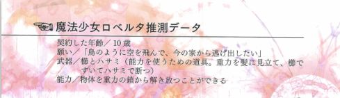

| 超解読 まどかマギカ (三才ムック vol.421) | |
| タブロイドと愉快な仲間たち | |
| 三才ブックス (2011) | |
まえがき
「魔法少女ぉ？ ああ、呪文を唱えて変身するアレでしょ......。今も観ているの？」
そんなことを言っていた友人が、深夜に突然「マミさんが......！ なんであんな目にあわなきゃいけないんだよ!!」と苦情電話をかけてきたあたりから、筆者の生活環境は一変した。
感想や考察を語りたい！ 気がつけば、そんな情念の塊の、ソウルジェムの濁った友人ばかりになっていた。彼らは魔女化寸前の姿で、筆者の自宅を舞台に夜な夜な「ワルプルギスの夜」も真っ青の『まどか☆マギカ』を考える会を催したのだ。まったく、意味がわからないよ！
本書は、そんな『魔法少女まどか☆マギカ』と契約した方々におくる、特濃の研究本だ。これまで以上に『まどか☆マギカ』の世界を楽しむために書かれた論考・深読みの数々で、あなたのソウルジェムがすこしでも浄化されれば幸いだ。
え、余計にごるって？ 君は一体何を言ってるんだい？
久保内信行
目次
『魔法少女まどか☆マギカ』の魅力と、奥深い世界
文：久保内信行
２０１１年の１月期から放送されたアニメ『魔法少女まどか☆マギカ』は、当初蒼樹うめによる「いかにも魔法少女！」な愛らしいキャラクターデザインが先行して公開され、正統派の魔法少女ものアニメとしてミスリードを誘う広報戦略が採られていた。
放送開始後の序盤も、平凡な中学２年生・鹿目まどかの前に魔女と戦う魔法少女と、マスコットキャラクター・キュゥベえが登場し、「ぼくと契約して魔法少女になってよ」と、契約をすれば何でもひとつ願いが叶えられることを告げるオーソドックスなもの。あまりに異質な魔女空間や、無表情すぎるお助けキャラ・キュゥベえによる違和感はあるものの、王道の魔法少女もののアニメの展開をなぞるものだった。
■本性を現した第３話
しかし、序盤に積み上げた魔法少女ものとしての基盤が一気に崩れ去ったのが第３話。鹿目まどかの先輩格の魔法少女巴マミが戦いのなか、頭から魔女に食べられて絶命するというショッキングなシーンが放送されたのだ。
この巴マミの死を境にストーリーはシリアスに大きく舵を取ることになる。魔法少女が敵として戦っている相手・魔女こそが彼女たちのなれの果てであることや、魔法少女への契約時に作られるソウルジェムこそが本体で、体からはすでに魂がなくなっていることなどが明らかにされていく。
どんな選択をしても、最終的には破滅しか待っていないという極限の状況のなかで、魔法少女たちは悩み、葛藤する。そして自らの運命に飲み込まれて次々に倒れていくのだ。
また、『まどか☆マギカ』に登場する魔法少女たちの目的もさまざま。彼女たちは、共通の理想をもって敵に立ち向かうわけではなく、魔女退治の報酬・グリーフシードをめぐって対立したり、人生観の違いなどで反目し合うことも多い。それどころか、物語終盤になるまで影の主人公である暁美ほむらの目的や、なぜ彼女は鹿目まどかに執着するのかも一切明かされなかった。
■練り込まれたキャラクター造形の魅力
自身のささやかな希望と、その願いに復讐されるように悲劇の運命に取り込まれていく魔法少女たち。彼女たちの織りなす葛藤と人間ドラマの重厚さは、『まどか☆マギカ』の魅力を語る上で、最大のファクターと言っていいだろう。
これから読解していく『まどか☆マギカ』の世界においても、彼女たちの練り込まれたキャラクター造形や、言動、そして名前の命名法は大きな意味を与えられている。たとえば、彼女たちの性格や願いに応じて武器や特殊能力が設定されているし、鹿目まどかの名前のなかにはしっかりと物語のキーである「円環の理」の意味が刻み込まれている。キュゥベえが、自らのほんとうの名前を「インキュベーター」と名乗り、目的を明らかにした第８話からもわかるとおり、彼らの言動の隅々には、『まどか☆マギカ』の世界の条理が貫徹されているのだ。
彼女たちが演じた役割がなんだったのかは、この物語世界をさらに深く知る上で大きな手がかりになるはず。同時に、ここまで『まどか☆マギカ』が支持されブームになった理由としても、彼女たちのディティールの魅力が大きく貢献している。
まずは、私たちの心に深く刻み込まれたキャラクターたちを改めて追いかけていくことにしよう。次章から掘り下げていく、さまざまな切り口の片鱗がすでに顔を出していることに気づくだろう。
主要登場人物のキャラクター造形を分析する
文：さやわか
『まどか☆マギカ』の主要登場人物について、スタッフの証言を交えてまとめてみた。作品を読み解く上で、前提となる知識の補強になれば幸いだ。
鹿目まどか
― 姓名 ―「鹿目」は本作では「かなめ」だったが、名字としては多くの場合「かのめ」「しかめ」などと発音される。「かのめ」姓の場合だと推定人口が全国で千人程度の希少な名字であり、その４割近くが福島県に所在するとされる。「かなめ」姓はほぼ確認できないが、熊本県日吉市に鹿目町（かなめまち）という地名がある。付近には鹿目川という河川もあり、上流にかかる「鹿目の滝」は日本の滝百選に選ばれている。
また「まどか」という名前にはおそらく「円」という漢字があてられるはずであり、最終的に彼女が〝円環の理〟という概念になることが暗示されている。インターネットなどでは「まどっち」という愛称が見られるが、これは蒼樹うめの漫画『ひだまりスケッチ』の主人公のあだ名「ゆのっち」から来ていると思われる。
― 色と衣装 ―イメージカラーはピンクであり、髪の色もピンク色。主人公がピンク色をイメージカラーとするのは『魔法のプリンセスミンキーモモ」など魔法少女アニメでは定番のものだと言える。
髪の毛の左右を留めているリボンは第１話の冒頭に母である鹿目詢子から薦められて付けたものであり、最終話でほむらに託されるものでもある。母から薦められたまどかは「派手すぎない？」と言ったが、「自立した強い女性」らしさを持つ詢子は「それぐらいでいいのさ。女は外見でナメられたら終わりだよ」と言って諭した。
魔法少女に変身した際には幅広で短めのスカートを履いているが、スカート内はたくさんのフリルがあって中が見えないようになっている。まどかのパンツが見えないことはかなり意識されていたようだ。また、メインキャラクターが魔法少女になった際に体のどこかに付けている宝石はソウルジェムの形態が変化したもので、まどかの場合は胸元に配置されている。
蒼樹うめによると最もデザインに苦労したのがまどかであり、母親との会話シーンの脚本を参考にしながら生活感を出すように心がけたらしい。なお、作中で魔法少女になった際のコスチュームとしてまどかがノートに描いていた絵は、まどか役を演じた声優の悠木碧が直筆したもの。
― 武器と特殊能力 ―武器は薔薇の枝から作られた弓。普段は閉じているが使用時には大きく広がって湾曲し、光の矢を飛ばすことができる。矢は空中で軌道が変わり、自動追尾のようにして確実に敵に攻撃することができる。ちなみに魔法少女たちが持っている武器は、ゲーム『モンスターハンター』から発想を得ている。『まどか☆マギカ』の企画が始まったころ虚淵は蒼樹とは初対面だったので、共通して趣味にしているゲームをヒントにすることでイメージをすり合わせていったらしい。
まどかにしかない特殊な能力はないが、ほむらによって輪廻が繰り返されたことでまどかが並行世界の中心軸となってしまい、結果として魔法少女として途方もない力を持つに至った。また、最終的に宇宙から解放されて始まりも終わりも持たない「円環の理」という、魔女を滅ぼす概念になってしまうことも、まどかの持つ究極の魔法と呼んでもいいかもしれない。設定資料ではこの状態は「アルティメットまどか」とネーミングされている。
― 性格 ―まどかは「ごく平凡な中学２年生」らしさのある人物として設定されている。言ってみれば凡庸であるということだが、それでいて主人公として感情移入しやすいようバランスの取れたキャラクターになっている。虚淵玄によると「蒼樹うめさんのキャラクターならこう動くかな？ と意識しながら性格を考えた」のがまどかであり、迷いながらも最後の最後までブレない部分が一箇所あるようなキャラクターだという。
素直で友達思いの優しい性格だが、少し空想好きで幼さを残したところがあり、魔法少女になるか否かをなかなか決められなかったように、おとなしく引っ込み思案なところもある。また、何か自分にしかできないことがしたいが、何になれるのかわからないという、若者らしい悩みもある。ほむらがかつて経験した別世界でのまどかが明るく活発な性格で、魔女と戦うことにも積極的になっているのは、魔法少女になることで自分には何の取り柄もないという気持ちが失われたためである。
裏設定としては、Blu-ray／ＤＶＤ第３巻の特典ドラマＣＤ「サニーデイライフ」で語られた「ネーミングセンスが最悪」があるが、これは幼さを残した性格に関係があるのかもしれない。
― 魔法少女になった際の願い ―本編では「全ての宇宙、過去と未来の全ての魔女を消しさる」という願いを叶えたまどか。なお、ほむらが輪廻を繰り返した別の世界では、事故で死んだ黒い野良猫を生き返らせるために魔法少女になっており、その模様はBlu-ray／ＤＶＤ第１巻の初回限定版に収録されたドラマＣＤで語られている。
ちなみにこの野良猫は本編のオープニング映像に登場する猫で、「あの猫がストーリーに関連しているのではないか」というファンの間で流れた噂を受けて虚淵玄が設定を後から付け加えた。猫の名前は「エイミー」といい、これはまどか役の声優、悠木碧の飼い猫と同じ名前。
巴マミ
― 姓名 ―「巴」の姓は全国で推定人口が二千名とされ、神奈川県に比較的多いとされる。「巴」とはもともと日本には古代からある言葉で、勾玉のように尾を引いた円形の模様を指す。巴という漢字はこの形状そのものを表していると言われている。「マミ」という名前のほうは由来が不明だが、『まどか☆マギカ』のメインキャラクターの中では巴マミだけがカタカナで表記される名前を持っている。 全登場人物を見ても、ほかにカタカナ名なのはまどかの弟である鹿目タツヤくらいである。ちなみにタツヤの声はマミと同じ水橋かおりが担当している。
― 色と衣装 ―メインキャラクターのデザインはまず、まどか、マミ、さやかの３人が同時に蒼樹うめへ発注されたが、その中でも蒼樹が最初にデザインを完成させたのがマミらしい。イメージカラーは黄色で、髪の色とソウルジェムも黄色である。近年の魔法少女ものには黄色のキャラクターが意外に多く、たとえば『プリキュア』シリーズにも頻繁に登場する。
コスチュームはコルセットや帽子など伝統性を思わせるデザインになっている。また変身前と後のいずれも花形の髪飾りを付けており、変身後のソウルジェムも髪飾りの部分に付けられている。
魔法少女の中でお姉さん的なキャラクターということで意識して胸が大きくデザインされ、コスチュームも胸が強調されるものになっている。
なお、設定資料によると魔法少女のなかには変身後に容姿が変化する者がおり、マミも少し身長が高くなっているらしい。ソウルジェムの穢れによる魔女化の進行が「少女から大人になること」を意味するとすれば、この「成長」もその副作用と言えるのかもしれない。ちなみに、各キャラクターの頭身が蒼樹うめの従来の絵柄よりも高くなっているのは、ドラマ性の強い作品ということを考慮した意図的なデザインである。
― 武器と特殊能力 ―武器は無限に出現させることのできるマスケット銃や大砲。おじぎをしたり帽子を取ると手品のように銃が大量に出現するというアィデアは劇団イヌカレーによるものである。
さらに特大サイズの大砲で敵を殲滅する必殺技「ティロ・フィナーレ」を使うことができる。技の名前を叫ぶのはメインキャラクターの中でマミだけ。戦闘シーンは脚本段階では細かく書き込まれておらず、この必殺技も「アルティマ・シュート」という仮の名前が付けられていた。しかしアフレコ段階で「さすがにカッコ悪い」と判断した虚淵玄がその場でネット検索などを駆使し、現在のイタリア語の名前を考案したという。 非常に強力な必殺技だが、シリーズディレクターの宮本幸裕によると各キャラクターの武器にはそれぞれ長所と短所があり、マミの使える銃もすべて単発式で決定打に欠けるという。それゆえに彼女は命を落とすことになったわけだ。
ほかに、マミには胸のリボンを自在に伸縮させて操る能力もあり、敵を拘束したり幅広に編み込んで上に乗って歩くなど、さまざまな用途に使うことができる。これはもともと彼女が「命を繋ぐ」ことを願って魔法少女になったために「縛る」「編む」ことにちなんだ能力が備わったもの。
― 性格 ―見滝原中学校の３年生であり、学校でも魔法少女としても、まどかとさやかにとって優しく冷静な先輩である。しかし、魔法少女になってからは悩みを打ち明けられる友達も信頼できる仲間もなく生きてきたため、心の奥底に孤独を抱えている。第３話でまどかが魔法少女になると決意したため彼女は救われた気持ちになったが、直後に命を落とすことになったのはその気の緩みゆえか。
ほむらに対する強い反感や、ほむらの経験した別世界での錯乱ぶりを見ても、冷静なようでいて感情的になると意外に我を失いやすくなる傾向があるようだ。新房昭之によると声優を務めた水橋かおりの好演もあり、まどかとの関係をもう少し深く描いてみたかったとのこと。
― 魔法少女になった際の願い ―交通事故で瀕死の重傷を負ったときにキュゥベえと出会ったため、彼女の願いは生きること、すなわち「命を繋ぐ」ことだった。言うなれば彼女は、選択の余地なく魔法少女になってしまった人物である。つまり彼女は魔法少女になったにもかかわらず、他のキャラクターのように日常生活を好転させるような幸運に恵まれることがなかった。それゆえに、自分の境遇の理不尽さと空虚さに悩む結果になったのだろう。
彼女が「魔法少女とは何か」ということについて独自の哲学を持っているのも、思い悩む中で繰り返された内省のたまものかもしれない。彼女は物語の前半で退場するが、その思想はまどかとさやかに強く影響しているため、ことあるごとに回顧され、名前が出される。
美樹さやか
― 姓名 ―美樹さやかの姓名の由来として、永井豪の漫画作品『デビルマン』のヒロイン「牧村美樹」と、『マジンガーＺ』のヒロイン「弓さやか」を合わせたものだという説がある。これらの人物名が元ネタとして使われたという確証はないが、男性中心的な世界の中で献身的かつ強く生きることに絶望して倒れてしまうさやかに、永井豪作品に登場するヒロインたちの姿が重ね合わされた可能性はあるだろう。とりわけ牧村美樹は物語のクライマックスで衝撃的な運命を辿るヒロインとして、日本の漫画史に残る存在である。
― 色と衣装 ―イメージカラーは青で、髪とソウルジェムの色も青い。魔法少女に変身するとソウルジェムがアルファベットの「Ｃ」のような形となって、臍のあたりに付く。
剣を使うキャラクターだからか、コスチュームはマントを羽織った騎士のような格好となっている。しかし胸当ては、いかにもファンタジー世界を舞台にしたアニメに登場するようなビキニアーマー（英語で言うとmetal bikini）ではない。フリルが付いているものの、甲冑として比較的まっとうな形になっている。短めの髪で活発な性格だがボーイッシュではなく、むしろ女性らしさに配慮したデザインがされていると言える。
― 武器と特殊能力 ―わずかに反りのある西洋風の剣を使って戦う。見た目に比して攻撃力はさほどでもないが、スピードには優れている。なお、シリーズディレクターの宮本幸祐によると、因縁の深い杏子もさやかと同じ接近戦タイプでパワー＆スピード型の戦闘スタイルだが、杏子の方が技量に優れるため攻撃力が髙いとされる。特有の能力として驚異的な回復力があり、通常ならば耐えられないようなダメージでも一瞬で回復することができる。 これは、魔法少女になった際の願いが病気の治癒だったことに由来する。さやかはこの頑強さを利用し、防御をほとんど捨てて魔女と戦うという戦術を選ぶようになるが、それによってもたらされた苦痛は彼女の魔女化を進める結果になった。
虚淵玄が設定段階で作って各キャラクターの強さをまとめた表では、さやかの戦闘能力は低めにされていた。そのため脚本段階では杏子と初めて戦うときには防戦一方になる予定だったが、アニメ本編ではそこそこ善戦するように変更された。虚淵も、もう少し強く設定しておくべきだったと語っている。
― 性格 ―虚淵玄によると、さやかは「物語の残酷さを象徴するキャラクター」である。まどかとは対照的に「自分のキャラクターならこう動かすな」と考えながら性格付けを行い、２人の違いを意識して脚本を書き分けたという。
さやかは本来、明るく快活な性格で、面倒見がいいまどかの親友だった。正義感が強く、人のために魔法少女の力を使いたいと語り、不審な行動の多いほむらや杏子に対して否定的な態度をとる。またメインキャラクターの中で恋愛にまつわるエピソードを担うのはさやかだけである。 魔法少女の中で最も背が高く、胸もマミに次いで大きいことからもわかるように、少女から大人の女性になる上での苦悩や葛藤をテーマとして持たされたキャラクターになっている。ちなみに身長は、片想いの相手である上条恭介を奪った親友の仁美よりは低い。
― 魔法少女になった際の願い ―事故によって動かなくなった上条の手を治すことを願って魔法少女になる。だからこそ人のために魔法少女の力を使うことにこだわっていた。しかし、自分自身がじつは上条に対して見返りを求めたくなっているのに気づき、最終的には魔女になってしまう。
魔女化する決定打となるのは電車内でホスト風の男たちの会話を耳にしたこと。金を貢がせているキャバクラ嬢について「犬かなにかだと思って躾けないとね。あいつもそれで喜んでる」と笑いながら語る彼らを見て、献身的な女性が男性から徹底的に搾取されることへの憎悪が募ってしまった。
まどかを演じた悠木碧は、こうした展開は魔法少女たちが「女の子らしい穢れ」を持っているがゆえのものだと語っている。男性からは「かわいそうだ」と言われがちだが、同じ状況になったときに上条やマミのことにとらわれて視野狭窄的な行動に走ってしまうところが『まどか☆マギカ』に登場する女性のリアルさだという。
なおコミック版では、さやかはこのホスト風の男たちを殺してしまうが、虚淵玄は「脚本ではどちらでも取れるようにした」らしく、アニメ本編では真相は視聴者の判断に委ねられている。また、このホスト風の男たちの会話は、虚淵が電車の中で実際に聞いたことがあるものだという。
佐倉杏子
― 姓名 ―「さくら」の読みを持つ姓は東北と関西に多いとされる。千葉県にも佐倉市があるが、とりわけ「佐倉」姓が多いのは滋賀県。全国の推定人口は三三〇〇人である。
名前の読みは「きょうこ」だが、一部のファンからは「あんこ」とも呼ばれている。第５話でたい焼きを食べていたこともあり、うってつけのニックネームと思われているようだ。ちなみに「あんこ」とは東北地方一部の方言で「お兄ちゃん」を意味する言葉でもある。男勝りな杏子には、やはり似つかわしい符合と言っていいだろう。
― 色と衣装 ―赤を基調としたコスチュームを着ており、ソウルジェムの色も赤い。活発な性格だが変身後はフリルのあるスカートというかなりかわいらしい衣装。変身後のソウルジェムは首元に装着されている。また、他の魔法少女と同じく変身後はわずかに身長が伸びているようだ。
その一方で、あちこちを放浪しながら自堕落に生活しているだけあって、変身前はパーカーにホットパンツというラフなスタイルになっている。
変身していない登場シーンでは、いつも何かを食べている。魔法少女の能力を使って食料を不正に調達できるため食べるには困っていないが、スナック菓子やジャンクフード、果物など手軽に食べられるものが多い。食べていたものの例としては、たい焼き、ポッキー、リンゴ、アイス、クレープ、カップラーメン、ポテトチップスなどがある。
― 武器と特殊能力 ―武器は伸縮自在な長槍で、杏子自身の高い運動能力を活かしてこれを自在に操る。しかもこの槍は、じつは短い棒を連結した多根槍になっており、さらに二又に変形したり鎖鎌のように振り回して使うこともできる。扱いが難しいと同時に非常に攻撃的な武器であり、杏子には相応しいものだと言えるだろう。 ただし、極めて高い攻撃力に比して防御は不得手としており、魔女化したさやかと対峙したときには苦戦した。また、杏子には一定の領域に格子状の結界を張る能力もある。これは外敵からの攻撃と侵入を防ぐことができるシンプルなもので、足止めなどにも利用できる。
新房昭之によると、脚本段階では杏子の槍は多根槍ではなかったし、結界を展開する能力もなかった。その設定が付加されたのは、初めて杏子がさやかと戦闘したシーンが非常に狭い路地を舞台にしていたためである。つまり、狭い場所で長槍を振り回して戦うのは難しいため多根槍への変形が検討され、さらに戦闘にまどかが巻き込まれるのを防ぐために結界が必要とされ、絵コンテ段階で設定が変更されたのだ。
裏設定として、杏子は魔法少女になったときの願いが「他人の心を操る」ものであったため、眩惑や幻覚の能力も持っていることになっている。しかし、家族を失ってからはこの能力は無意識に封印されており、本編で登場することはなかった。これについてはBlu-ray／ＤＶＤ第５巻の特典ドラマＣＤ「フェアウェル・ストーリー」で分身の魔法として披露され、マミによって「ロッソ・ファンタズマ」という必殺技名を与えられている
― 性格 ―好戦的で荒っぽく、自分中心的。彼女の堂々としたところを指して、新房昭之は「行動が出崎統監督のキャラクターっぽい」とも評している。
ほむらは杏子のことを、半ば皮肉を込めて「魔法少女にふさわしい」性格であると言っている。魔女を狩る際には、より大きな戦果を挙げるために他人を見殺しにすることもあり、どちらかというと倫理感の強い登場人物の多い『まどか☆マギカ』の中では異質な印象を与えるキャラクターと言っていいだろう。魔女を倒しながら街を放浪しており、暇な折にはゲームセンターなどに入り浸っているような態度も、表面的には彼女を享楽的で自堕落な人物のように見せる。 だが、その一方で食べ物を粗末にするさやかに対して本気で怒るようなところからは生来の生真面目さがうかがえる。
気さくで面倒見がよいため、他のキャラクターとも折り合えないわけではないが、さやかとの関係だけは険悪さが目立つ。虚淵玄は杏子について「さやかとは正反対のキャラクターにしようと思った」と語っている。それゆえに２人はことあるごとに対立し、特にさやかが他人のために戦おうとすることについては、決定的に意見が割れてしまう。
― 魔法少女になった際の願い ―虚淵玄の言い方だと、彼女は「既に一つの覚悟をしている魔法少女」である。つまり彼女は魔法少女になる際、他人（父親）のために叶えた願いのせいで家庭が崩壊して不幸になった経験があり、その反動によって自分のためだけに力を使う意志を押し通そうとしている。
杏子の願いは「みんなが父親の話を聞くようになる」ことであった。それは聖職者であり教えを広めたいと思う父の願望であり、杏子によって叶えられたのだ。しかし、真実を知った父は杏子を魔女と罵り、彼女１人を残して家族は無理心中してしまう。前述の「フェアウェル・ストーリー」では杏子が魔法少女になった直後、マミとタッグを組んで戦っていたころのストーリーが明かされており、それによれば、彼女は魔法少女になった直後はさやかと同じく他人のために戦おうとしていたが、家族の死によってその理想を打ち砕かれたとされている。
他人のために生きようとするさやかは、いわば過去の自分のようなものであり、だからこそ杏子は上条への思いを振り切ってうまく生きられないさやかに固執する。しかし、さやかへのいら立ちは自分が覆い隠そうとしている寂しさの裏返しでもあった。最期に「独りぼっちは寂しいもんな」と言って心中することになるのは、杏子がさやかに自分を重ねて見ていたためだ。他人のために尽くしたのに幸福になれないさやかに、杏子は共感したのである。
暁美ほむら
― 姓名 ―「暁美」という姓は国内にほとんど見られない。存在したとしても極めて珍しい姓だということができる。そもそも「あけみ」と読む姓が見あたらないようだ。地名としても数が少なく、高知県香美市香北町に通称を「暁美橋」として知られる古い橋が見られる程度である。一般に「暁美」は姓ではなく、女性の名として認知されているようだ。
なお『まどか☆マギカ』のメインキャラクター５人は、全員が名前だけでなく名字も女性名のように聞こえる音で発音されるようになっている（かなめ、みき、ともえ、さくら、あけみ）。
「ほむら」という名については、第１話でまどかが「変わってる」としつつも「カッコいい」と評している。おそらく、まどかは「ほむら」という音から「火」または「焔」の文字を連想したのだろう。
― 色と衣装 ―蒼樹うめによると、スムーズにデザインが完成したキャラクターらしい。クールさや大人っぽさ、達観した感じをイメージしつつ、戦いのスタイルも考慮してデザインしたという。色は黒を基調にしており、変身後のソウルジェムは手の甲に装着されている。メインキャラクターの中でストッキングを履いているのは彼女とマミだけで、特にほむらの黒ストッキングは大人びた印象を与えている。なお、声優として斎藤千和を推したのは虚淵玄だという。
魔法少女に変身したときには左腕に盾を装備しているが、時間遡行に使われるだけで、特に戦闘で防御力に優れたものとして使われているシーンはない。
ほむらの自宅はもともとちゃぶ台が特徴的なアパートとして設定されていたが、完成した作品では真っ白い背景に幾何学的な造形の家具が並ぶ不思議な空間になった。ホログラム的な映像が映し出されている部屋というイメージで描かれているらしい。
― 武器と特殊能力 ―ほむらの戦闘力について虚淵玄はスタッフに「普通の女の子と変わらない」と説明したという。ただし、のちに並み以上の運動能力を身につけている描写があるので、あくまで魔法少女としては極めて弱い部類であると解釈するのがよさそうだ。虚淵によると、時を止める能力があまりに強力なので、それ以外の部分で制約が多いキャラクターにしたそうである。
武器の調達を自前でおこなわねばならないのも制約のひとつであり、しかも虚淵の想定では盾の中にしまえる武器しか装備できないはずだった。しかし、実際のアニメ本編では体積を無視して武器をしまい込めるようになり、ワルプルギスの夜との最終決戦では川の中からミサイルランチャーを出す描写まであって驚いたという。これは本編においてワルプルギスの夜が、ビームを出すような圧倒的な攻撃力を持つ魔女として描かれることになり、ほむらの扱う武器も相応のものにする必要があったため。
ほむらの時間操作は盾によって行う。盾には砂時計と歯車を組み合わせたギミックが仕込まれており、砂時計の砂の流れを遮断することで時間を止めることができる。このとき、ほむら自身と彼女が触れている人物は、止まった時間の中を自由に動くことができる。ワープができるわけではないため、第３話のマミや第８話の杏子に拘束された際はこの能力で脱出することができなかった。
砂時計の上部分の砂が全部なくなったらひっくり返すと時間を１カ月巻き戻すことができる。つまり、ほむらの時間遡行能力は１カ月分しかなく、彼女はその短い期間を繰り返すことでまどかを救おうとしていたのである。第11話で致命的なダメージを受けたのは時間停止のための砂を使い果たしていたため。
まどかによってすべての魔法少女が救われてからは、魔物を倒すために弓矢を使って戦っている。これは言うまでもなく、まどかに対するオマージュだろう。
― 性格 ―無口だが容姿端麗で頭脳明晰、かつスポーツ万能の謎の転校生として登場したほむら。もともとの性格はおとなしくて引っ込み思案な少女で、長く心臓の病気で入院していたため勉強も運動も得意ではなかった。魔法少女となってからもまどかやマミという先輩たちに頼りがちだった。
しかしキュゥベえの策略に気づいて過去に何度も遡行するようになってからは、悪かった視力を魔法少女の能力で回復させ、学園生活も無難にこなしながら懸命にまどかを救う方法を探ろうとする。だが魔法少女たちの死を何度も経験したことで「もう誰も信じない」と決意してからは、第１話開始時点に見られるように、思いを胸の内に秘めた寡黙な少女になる。
虚淵玄には、ほむらこそが物語の本当の主人公であるという意識がどこかにあったようである。特に、第10話からはほむらが主人公格となるように考えていたようだ。それに対して新房昭之は「まどかは主人公、ほむらはヒロイン」という考えをたびたび口にしている。そう考えると、ほむらがまどかに強くこだわって非力ながらも救おうとするのもわかる。
― 魔法少女になった際の願い ―ワルプルギスの夜による大破壊によってまどかたちが全滅したあと、１人残されたほむらは魔法少女になることで「まどかとの出会いをやりなおす」という願いを叶える。これによって彼女は時間遡行能力を手に入れるが、何度もループを繰り返すことでまどかに因果律の特異点を発生させ、最強の魔法少女／魔女になるだけの力を与えてしまう結果になる。
第11話でワルプルギスの夜を倒すことに失敗したほむらは再び時間遡行しようとするが、このときすでに自分のせいでまどかに力が集まり続けることを知った絶望から、魔女化の兆候が見られた。したがって、まどかがもし魔法少女になることを決意しなかったとしても、ほむらはもう時間遡行することができなかったものと思われる。
―その他―
キュゥベぇ
魔法少女たちに次いで目立つキャラクターと言えば、やはりキュゥベえだろう。一見かわいらしいマスコットキャラのようだが、表情をまったく動かさずに冷徹な台詞を吐くこともしばしば。自分について「魔法の使者」と名乗るこの謎の生物の正体は、高度な文明を持つ地球外生命体である。
一人称は「僕」であるから、どうやら雄らしい。しかし全く同じ姿をした個体が複数存在し、個体ごとの区別が存在せず意識が完全に共有されているように見えることから、雌雄という概念のない存在か、そもそも生物ですらないのかもしれない。
第８話でほむらが喝破した彼の真の名は「インキュベーター」（incubator）で、直訳すると孵卵器である。孵卵器とは卵を適切な状態におくことで孵化させる器具で、現実には鳥の卵を親鳥に温めさせるのではなく人工的な環境で孵化させるために用いられる。『まどか☆マギカ』の設定に沿って解釈すると、キュゥベえは少女と契約して魔法少女にすることで、言ってみれば卵を植え付け、戦いを繰り返させて次第に絶望へと追いやっていき、最後に魔女として孵化させている存在だと説明できる。
なお、キュゥベえは人類全体を滅ぼしていいと考えているわけではなく、人類の繁殖力を鑑みれば魔女によって犠牲となる者がいたとしても大きな問題ではないと捉えている。そうした非人道的な態度は、キュゥベえが感情を持たない知的生命体であるがゆえのものである。その論理は宇宙の寿命を延命させることこそが全人類が従うべき使命であるという観点に立つならば正当と言えるもので、だからこそ反論が難しく、キュゥベえの憎らしさと不気味さを際立たせるために一役買っている。
口が動かず表情もないというアイデアは新房昭之が考えたもので、そこまで不気味なキャラクターだとは思っていなかったスタッフはみな驚いたらしい。また言葉巧みに魔法少女を勧誘する態度は視聴者から反感を買いつつ、ある種の人気キャラクターとして受け入れられた。こうした「キュゥベえ人気」は制作陣の予想していなかったものだったという。
上条恭介
さやかの幼馴染であり、片想いの相手。将来を有望視されたヴァイオリニストだったが、事故に遭ってから指が動かなくなり、長期入院しながらリハビリを続けている。しかし、医者に回復の見込みはないと断言されるような状態であるため絶望し、さやかにも辛くあたってしまう。結果、さやかは魔法少女になって上条の指を治すことを選択する。
後にさやかの親友である志筑仁美に告白されて付き合うことを決める。彼自身はさやかの好意に気づいていなかったため、知らず知らずのうちにさやかを絶望へと追いやる結果になった。このエピソードはアンデルセンの童話『人魚姫』をモチーフにしており、それゆえにさやかが魔女化したときには彼女の下半身は人魚のものになっていた。
ちなみに、人知れず自分に尽くしてくれたさやかを顧みることがなかった上条だが、彼を演じた声優の吉田聖子は２人が良い形で結ばれる結末を願っていたという。
志筑仁美
さやかから上条を奪う結果になった仁美は、まどかと共に、もともと仲の良い友達であった。多くの習い事をこなすお金持ちのお嬢様で、友人にも丁寧な口調で話す。上条には前々から好意を抱いており、彼が退院したにもかかわらずさやかが交際しようとしないのを見て、自分が彼に告白するとさやかに宣言する。このエピソードは視聴者から見ると一方的にさやかを追い詰めるものに見えるが、仁美からすると恋愛におけるライバル宣言という程度に捉えていたのだろう。
上条が仁美と楽しげに話すシーンには台詞がないため会話の内容がわからず、ライバル宣言は恋愛に対して奥手であるさやかをけしかけるためのものにも見えなくもない。しかし、最終話でまどかが改変した世界においても上条と親しくしている描写があるため、彼らが結ばれるのは因果律のうえで避けられないことなのかもしれない。
鹿目詢子
まどかの母親。やり手のキャリアウーマンであり、自宅の家事などはまどかの父である知久が専業主夫としておこなっている。社会で活躍する女性らしさを強調されたキャラクターであり、容姿に気を配ったり、男性社員について愚痴を言ったりする描写がたびたびある。
また、物語のターニングポイントとなる場面でまどかと対話するシーンが繰り返し描かれているのも特徴で、虚淵玄は母親と娘の関係を意識的にしっかり描こうとしたという。
ただし、虚淵も指摘しているがまどかと詢子の会話はほとんどがすれ違っている。まどかが自分の巻き込まれている問題を具体的に説明できないせいもあるが、たとえばさやかを救いたいと思うまどかに対してかけた言葉は彼女を救えなかった。最近になって突然まどかのことがわからなくなってしまったと、母親として戸惑いを見せてもいる。しかし、まったく効果的なアドバイスができないながらも、誠実に子供に向き合おうという意志を持つ親として描かれている。
なお、最終話でまどかが世界を改変した後は、それまでのいくぶん男勝りな描写が薄れ、子育てに勤しむ普通の主婦のように描かれている。
虚淵玄の世界、アニメとエロゲーの契約。
文：若尾空
『まどか☆マギカ』は、アニメスタジオ・シャフトを引っ張ってきた新房昭之、４コママンガの旗手・蒼樹うめ、18禁ゲームのシナリオライターとして熱狂的なファンを持つ虚淵玄など多種多様な才能が組み合わさることで生まれた。なかでもこの作品を特異なものとしているのは、虚淵玄のシナリオだろう。そこでここでは、彼のホームグラウンドである18禁ゲーム、いやエロゲーと『まどか☆マギカ』の関係を見ていこう。
■エロゲーは萌え産業の実験場
まずエロゲーは、２０００年ごろからオタク産業全体に多大な影響を与えてきた。『魔法少女リリカルなのは』の原作はエロゲー『とらいあんぐるハート３』（ivory/JANIS）のオマケシナリオであり、『涼宮ハルヒの憂鬱』や『けいおん！』を送り出した京都アニメーションが注目されるようになったのも、Ｋｅｙによるエロゲー『AIR』をアニメ化したことがきっかけだ。
エロゲーはアニメに比べて低予算・少人数で制作でき、またエロ産業独特のフリーダムさもあって〝変なもの〟が認められやすい。このため新しいもの、実験的なものが生まれやすい土壌が形成されていたのだ。こうして「ツンデレ」「ヤンデレ」「ハーレム展開」「キャラごとに好物がある」といったキャラ付け・演出法が登場し、それがオタク産業全体に波及していった。
その影響力の大きさについては、エロゲー業界から登場したライトノベル作家、イラストレーターなどの多さからも見て取れるだろう。いとうのいぢ、西又葵、田中ロミオ、桜庭一樹、最近では『ＩＳ』の原作者・弓弦イズルなどもその１人だし、付け加えるなら蒼樹うめも「藤宮アプリ」名義でエロゲーの原画を務めていたのは有名な話だ。
■虚淵玄という〝エロゲーライター〟
さて『まどか☆マギカ』で脚本を書いた虚淵玄もエロゲーの世界でその才能を発揮してきた人物だ。彼の作品は「硝煙」「裏切り」「血」「絶望」とダークなイメージで埋め尽くされている。その作風を知る人ほど、「新房昭之、蒼樹うめ、虚淵玄」という水と油な制作陣には驚いたことだろう。
まずは、虚淵の手によるゲーム作品を見ていこう。以下のゲームはすべて、ニトロプラスからリリースされている。虚淵は同社のエロゲー参入からかかわり続けているメインスタッフだ。
Phantom-PHANTO-OF INFERNO－（２０００年）
観光旅行でアメリカを訪れた吾妻玲二は、殺人現場を目撃したことからマフィアに拉致され、殺し屋になることを強要される。そこで「ファントム」と呼ばれる殺し屋の少女と出会い......。アメリカ暗黒街を舞台としたガンアクションＡＤＶ。虚淵のデビュー作であると同時に、所属会社ニトロプラスの第１作でもある。
容赦なく人が死んでいくストーリー、銃器に対するこだわり、プレイヤーの意表をつく物語展開などなど、虚淵のスタイルはこの頃すでに完成されていたと言えよう。なお「新興ブランドのマフィアもの」ということで当初の出荷数はかなり少なかったようだが、インターネット上のロコミから人気に火がつき、最終的にはヒット作となった。エロゲーには珍しかったハードな題材、そして小説的とも言える骨太のストーリーは、当時のエロゲーファンに大きな衝撃を与えたのだ。
本作は２００４年にＯＶＡ化され、さらに２００９年には『Phanton ～Requiem for the Phantom～』としてＴＶアニメ化されたため、覚えている人も多いだろう。このほかＰＳ２に移植されており、Ｘｂｏｘ３６０版のリリースが予告されている。
吸血殲鬼ヴエドゴニア（２００１年）
ロードバンパイア・リァノーンに血を吸われた少年が、吸血鬼化の運命に抗うために「半吸血鬼の吸血鬼ハンター」として戦うことになる。人間でなくなることへの恐怖、また力を手に入れることにより避けようのない破滅が訪れることなど、『まどか☆マギカ』に通じるところも多い作品。
また、本作は13話構成となっており、１話ごとにＯＰ＆ＥＤムービーが入るというアニメやドラマを思わせるスタイルを採っていた。ちなみにＯＰ＆ＥＤ曲には小野正利を起用している。エロゲー界では他にあまり類を見ない、男性ヴォーカルの主題歌だ。
鬼哭街（２００２年）
武侠小説（いわゆるカンフーもの）とサイバーパンクを組み合わせたアクションＡＤＶ。絶技・電磁発勁の使い手であるコン・タオローが、妹の仇を取るためにサイボーグ武芸者たちと闘争を繰り広げる。
これまでの２作と比べるとボリュームは少なく、５～６時間でエンディングにたどり着く。また値段も３９９０円と安めで、当時は珍しかったミドルプライス作品ということになる。さらには、選択肢が一切ない純粋な読み物だった。
なお２０１１年には、「15歳以上推奨」の一般作となったリメイク版が登場している。虚淵作品のなかでも特に「黒さ」が前面に出た作品なので、虚淵ゲームの入門としても適しているだろう。
沙耶の唄（２００３年）
『鬼哭街』に続くミドルプライス作品としてリリースされた。事故によって知覚障害を起こし、人間も風景もすべてがグロテスクに感じられるようになった青年の前に、「美しい少女」が現れるというストーリー。
『火の鳥・復活編』をベースとしつつ、グロテスク感覚にまみれた純愛を書き切った珠玉作。小品ながら、虚淵の最高傑作として挙げるファンが多く、またそのＳＦともホラーともつかない世界観から〝クトゥルー神話〟の１作と見なされることもある。
続・殺戮のジャンゴ - 地獄の賞金首 -（２００７年）
しばらく企画・シナリオから離れていた虚淵が４年ぶりに放ったのは、文明が退行した惑星を舞台としたＳＦ西部劇だった。ゲームとしては虚淵の最新作なのだが......ヒロイン全員がレイプ上等な「ビッチ」キャラであり、恋愛要素がほぼ皆無というエロゲーの流行・常識を無視しまくった作品となっている。 緻密に計算されたプロットに熱い銃撃戦、虚淵シナリオならではの騙し合いの連続、何度となくプレイヤーの予想を超えていくジェットコースター展開と、内容的には文句の付け所がない傑作である。
なおクリア後に見られる特別Ｗｅｂサイトでは、「この作品の売り上げによって虚淵の次回企画が出せるかどうか決まる」といった事情をうかがわせる文章が掲載されていた。その後、虚淵が小説やアニメに軸足を移していったことを考えると、「あまりに革命的過ぎた」のだろうか。「ヒロインは処女じゃないとダメ」といった暗黙の了解を大またぎに踏み越えていく精神性は、『まどか☆マギカ』にも生きていると言えるかもしれない。
ノワール、伝奇、武侠、西部劇とそのジャンルは多岐にわたるが、虚淵玄は「物語」を読ませることにこだわってきたクリエイターだと言えるだろう。ファンにとって、またおそらくはメーカーやクリエーターにとっても『Phantom』の重厚長大さは衝撃的だった。
その当時、「いいエロゲーシナリオ」というのは、短いストーリーがいくつも組み合わさったものだった。Leafの『雫』『痕』のように多数のストーリーラインが矛盾なく絡まりあうもの、またはその後主流となっていくヒロインごとにシナリオを作るもの。これらは、ゲームという媒体の強みである「選択肢」と「マルチエンド」を最大限に活かすために工夫され、定着してきた。しかし『Phantom』のシナリオ構造は、先祖がえりとも言えるほどにシンプル。 最終シナリオである「エレンルート」までストーリーが一直線に繋がっているのだ。途中途中でキャラ別ルートが用意されており、それぞれ印象的ではあるが、全体的には小説や映画に近い構成だ。
この「とにかく長い物語を読ませる」というスタイルはシナリオの力に頼るものなので、その後の業界に大きな影響を与えたとは言えないだろう。しかし、TYPE-MOONの『Fate/stay night』などは、虚淵とニトロプラスが先鞭を付けた大河エロゲー路線を受け継いでいる作品だ。その隠れた影響力は、TYPE-MOONの奈須きのこが虚淵を「兄貴」と呼び、『Fate/Zero』の執筆を任せたことからもうかがえる。
虚淵玄は『ジャンゴ』を最後にエロゲーのシナリオを離れ、『Fate/Zero』『アイゼンフリューゲル』『BLACK LAGOON』（ノベライズ）といった小説作品をリリース。また２００８年にはアニメ『ブラスレイター』でシリーズ構成・脚本を務めた。このように活躍の場を移してきたことについては、近著『金の瞳と鉄の剣』のあとがきに詳しい。エロゲー業界に対する複雑な思いがあらわれた名文なので、ぜひ一読を。
ついでに触れておくと、２００２年にリリースされたノベライズ版『ファントム』のあとがきではエロゲークリエーターとしての矜持を、同人誌としてリリースされた『白貌の伝道師』のあとがきではバッドエンドについての思いを、『Fate/Zero』ではノベライズ・コミカライズなどのメディア展開についてを熱く語っている。意外なことに、虚淵はかなりの「あとがき作家」なのだ。
■少女と〝漢の世界〟
さて、虚淵作品を鳥瞰していくと、作品ごとにさまざまなジャンルから着想を得ていることが見て取れる。『Phantom』はジョン・ウー監督らのガンアクション映画、とくに『フェイス／オフ』へのオマージュを感じさせる内容。続く『ヴェドゴニア』は、『吸血鬼ハンターＤ」などの吸血鬼モノと『仮面ライダー』シリーズ。 『鬼哭街』は、金庸らが書く中国の武侠小説と『ニューロマンサー』などのサイバーパンクＳＦのミックスだし、『ジャンゴ』はパッケージデザインからして西部劇映画テイスト（ただし、正統派西部劇というよりはマカロニウェスタンやロバート・ロドリゲス作品）。
かなりの引き出しの広さだが、本来エロゲーにはフィットしそうにもない「漢の世界」をベースに少女たちを描いてきたことは、共通点として見出せるだろう。「奇跡でみんな幸せになりました」などというゆるふわ展開が入る余地はない、「血には血を」「裏切りには裏切りを」を地で行く世界観だ。そんな虚淵が「魔法少女」というテーマに手をつけたとき何が起こったのか？
『まどか☆マギカ』における契約とは、マフィアのごとき黒社会一本道の「血の掟」であり、魔法の力とは使えば人を傷付けざるをえない鉛の弾丸という寸法。どう見ても交わらないテーマやジャンルを結びつけて虚淵節に叩き込む手腕は、エロゲー時代から変わらない。
■そして『まどか☆マギカ』へ
最後に、エロゲー時代の作品と『まどか☆マギカ』を比較してみよう。まず極限状態に置かれた人間たちによる闘争とドラマが描かれているという点は共通する。それは、今も変わっていない。
虚淵玄はキャラクターを突き落とす。プレイヤーが、視聴者が想像もしなかったような深い谷の奥底に。そしてヒーロー・ヒロインたちは、苦悩と苦痛の中でもがき続けることになる。先に述べたように「魔法少女」が致命的な呪いとして描かれたことは、虚淵のこれまでの軌跡からして必然だった。第３話の展開もまた、虚淵の本領発揮といえる。予期しないタイミングで最悪の展開を見せ付け、その面白さでねじ伏せていく。
ただオールドファンから見て、「これまでの虚淵からは信じられない！」と感じられる点もあった。それは、まどかが「みんなを救う」存在となったこと。これまでも虚淵キャラには、「愛する人を守る」「家族を奪われたことへの復讐」といった自己犠牲的な信念を持つ者が多かった。しかし彼らは徹底的に個人主義で、その目線が自分の親しい者たち以外に向くことはなかった。 過去まで遡り、直接の関係がない魔法少女たちまで救済するという慈愛に満ちたありようは、作者の心境の変化を感じさせる。
そして「戸惑い続ける」というまどかの個性そのものも、既存の作品にはあまり見られない。銃口を向けたなら「本当に撃っていいのだろうか？」などと迷う前にすでに射殺している、そんな果断さが虚淵キャラの持ち味だった。
まどかとは対照的に、愛する者だけを見つけ続け、いかなる苦難があろうとも己の信念に殉ずるという点で、ほむらはいかにも虚淵らしいキャラクターだ。第10話以降、物語の中心がほむらに寄っていったことにも、虚淵ならではの筆遣いを感じた。『鬼哭街』におけるルイリー、『ジャンゴ』における名前のない女、『まどか☆マギカ』におけるほむら。彼女らの想いを知ったとき、物語は真の姿を見せるのだ。
魔法少女アニメの歴史と、『魔法少女まどか☆マギカ』
文：久保内信行
『魔法少女まどか☆マギカ』は、題名に「魔法少女」というジャンルを冠して発表され、事実、使い魔であるキュゥベぇと契約して魔法少女に変身して、敵である魔女と戦うアニメであり、確かに外見上は「魔法少女もの」と言える。
しかし、視聴者側から見ると、いわゆる土曜日曜の朝に放映されている従来の女の子向け魔法少女ものとは趣きを異にしているように感じられた。１年間というロングスパンの中で愛と魔法の力をもって敵をやっつけていくフォーマットの話とは異なり、毎回命がけで戦い、実際に命を落としてしまう魔法少女たちの姿は、普通の魔法少女ものと呼ばれるアニメでは想定されていなかった事態だった。
まずは、魔法少女作品の歴史をおさらいしつつ、次に『まどか☆マギカ』はその中でどのような位置を占める作品なのかを考えていこう。巻末に掲載した魔法少女作品の歴史年表とともに読んでいただけると幸いだ。
■魔法少女アニメ黎明期
アメリカの実写ドラマ『奥さまは魔女』の大ヒットをうけて製作された魔法少女アニメ。日本における魔法少女の元祖と言われているのは１９６６年の『魔法使いサリー』だ。魔法の国のお姫様サリーが生活に飽き飽きして人間界に降り立ち、さまざまなことを見聞しながら人助けするというストーリーである。 この作品の大ヒットを受けて、以降東映動画による魔法少女作品として『魔法のマコちゃん』『魔女っ子メグちゃん』『魔女っ子チックル』『花の子ルンルン』『魔法少女ララベル』『魔法使いチャッピー』などが生み出される。これらの作品の特徴は、出自がほぼ魔法の国のお姫様や魔法使いの子供などで、普通の人間の子供ではない。また、魔法能力は万能であることが多い。 その中で、とりわけ多く描かれるのが、魔法を使うことで体が成長して職業コスチュームに変身し、人助けを行うというものだ。
これらの物語の「主人公は（魔法の国のお姫様など）通常の人間とは違う特別な出自を持つ女の子である」という設定は、少女マンガの王道パターンから持ってきたのだろうと思われる。当時の少女マンガでは外国を舞台にした恋愛物語が多く、主人公は金髪碧眼のお姫様であるケースがよく見受けられた。読者の少女達は一時の間、自分がお姫様であればどんなに楽しいだろうという目でそれを眺めていたのだ。
ちなみに１９６７年に発売されたリカちゃん人形の設定は、イギリス人とのハーフで金髪。海外旅行も自由にできなかった時代の黒髪の日本人にとって、異国のお姫様は憧れの存在だったのだ。
つぎに、「職業婦人への変身」は、女の子の将来なりたい夢を毎回叶えていくこととなる。当時は、現在のＯＬで意味で使われる「ビジネスガール」という言葉が流行し、女性の社会進出への願望の高まりが背景にあった。自分が望むような憧れの職業に魔法でなれる、そんな設定は十分夢のあることであった。
また、少し話が戻るが、特別な出自としての主人公に対して女の子たちは自分自身を投影しているのだから、基本的に単独の魔法少女の物語となる。これも特徴のひとつと言えるのではないだろうか。
以上のように、黎明期の魔法少女ものには、お姫様の市中見学中に少し不思議で素敵な事件が毎回起こるというエブリデイマジックの構造が見られる。また、魔法少女とは、女の子の理想の姿であり、魔法で子供であることの制約を振り払うことができる存在だった。魔法の根拠としては、主人公の出自の特別さに置かれることが多かった点が確認できる。
■普通の少女が魔法少女へ変身する
前述した「お姫様が市中見学をする」という形式の魔法少女に代わって主流になっていったのが、スタジオぴえろによる魔法少女ものであった。『魔法の天使クリイミーマミ』『魔法の妖精ペルシャ』『魔法のスターマジカルエミ』『魔法の少女パステルユーミ』などの作品である。
黎明期の魔法少女ものとの共通点は、大人に変身してトラブルを解決していくという形式である。一番の大きな違いは、主人公の女の子が一般人であること。一般人が何かのきっかけで魔力を授かり、魔法を使えるようになるのだ。
この、主人公がお姫様という憧れの世界の住人から一般人の女の子になることで、物語の使命や目的も単純な人助けや女王になるための修行といった性質から、個人の夢、人助けを通して自分の夢も叶えるという形へと変質していく。これは『クリィミーマミ』なら１年間の期間限定でアイドルとして活動することだったり、『マジカルエミ』はマジシャンとしてアイドルデビューする形で示される。
さらに、作劇上、大きな変化がもうひとつある。それは、主人公の女の子の恋愛描写が大きく取り上げられるようになったことだ。お姫様から一般人へ、主人公が身近な存在になっていった理由が恋愛要素である。ちょうどこのころ、少女コミックはラブコメ大ブーム。憧れの国のお姫様が憧れの生活をすることへの追体験という流れから、憧れの先輩への恋心などが少女の身近な話題になってきたことを受けてのものだろう。
そういう意味で言うと、１９６９年に放映された『ひみつのアッコちゃん』（コミカルに人間を描くギャグ漫画家・赤塚不二夫原作のアニメ）で「一般人の女の子が魔法を授かる」という設定になったのは、けっこう示唆的なのではないかと思われる。その後１９９０年までは、この「魔法の国のお姫様」ラインと、「一般人が魔法少女になる」ラインとが平行して進み、前者が小学生低学年まで向けの小児アニメ、後者が小学生高学年以上向けとして放送されていく。
この２つの魔法少女もの作品を枠を自覚的に作品に取り入れたのが、『魔法のプリンセスミンキーモモ』である。１９８２年の初代ミンキーモモ、通称空モモの最終エピソードでは、モモは死んで転生することでしか普通の女の子になることはできなかった。
２代目の海モモでは、魔法そのものに対しての問題意識も扱っている。この海モモの主人公は、夢の国のプリンセスが先代の名を継いで地上に派遣されてきたのだが、徐々にシリアスなエピソードが増えていき、人間界に生まれ代わり一般人となった先代モモと出会うことにもなる。そこで海モモを待っていたのは、夢は魔法では叶えられないという現実であった。
さらに海モモの両親が実は不治の病に冒されており、海モモの存在自体が両親の叶わぬ夢そのものだったと知ることになる。最後に海モモは魔法と夢の存在に悩んだ結果、夢を信じ地球に残ることになる。モモは魔法の力を失い、地球で静かに暮らしてゆく。
ここでは魔法少女という表現形式が描いた少女の夢の限界と、それでも生きていく１人の人間としての海モモの成長が描かれている。魔法少女のもつ「魔法」をめぐる問題意識は、一応の結論に達したわけだ。その後の作品では、魔法少女にとっての「魔法」は存在意義そのものではなくなっていって、お話を盛り上げるためのツールとして使われるケースが増えていった。
この問題意識を引き継いだ『ナースエンジェルりりかＳＯＳ』では、普通の少女だと思われていた主人公の少女りりかは実は先代のナースエンジェルの生まれ変わりで、体内に封じ込まれた命の花を開放、つまり我が身を犠牲にしなければ世界を助けることはできないと知り、自らの誕生日パーティのあとに自死するという悲劇的なストーリーが展開された。
一般人の女の子が変身する魔法少女は、あいかわらず女の子の理想の姿であり、魔法の力は同じく子供であることの制約を振り払うことができる。だが、出自が特別ではなく生まれながらの魔力を持たない彼女たちには、必然的に魔法の限界（『まどか☆マギカ』風に言うと代償）が求められた。それはもっとも悲劇的なもので主人公の命であり、一般的には自らの少女性・処女性だということができる。
魔法少女は、成長しきっていない少女だからこそ魔法が使えるのである。そのほとんどが、魔法の助力を受け少女時代の夢を叶えたために、魔法が必要なくなり大人の女性になっていくという道筋が示されるようになる。が、それゆえにミンキーモモは、苦悩の末、魔法を失った普通の女性として余生を過ごすことになるのだ。
■戦闘美少女 セーラームーン登場
「魔法少女もの」が次に大きなターニングポイントを迎えたのは、90年代に放送された『美少女戦士セーラームーン』だ。この作品でもっとも大きな特徴と言えるのは、主人公格の魔法少女（美少女戦士）が、多数登場すること。それぞれ個性の違う彼女たちは、友情を確かめ合ったり、ときには反目し合いながら敵に立ち向かっていく。
物語設定は、当初は従来の魔法少女ものに沿った形式を踏襲するが、大ヒットしてシリーズ名を変えながら４年以上にわたった放送のなかで、「前世の因縁」や、ちびうさの突然の来訪による「落ちもの」要素、「未来からのタイムリープ」、外宇宙から太陽系そのものを飲み込む「混沌との戦い」を描くまで物語は拡大を続ける。当時流行のオカルト・伝奇・ＳＦの要素を毎回貪欲に取り込み、それらを友情の力で乗り越えていくという物語構造は、少年漫画のバトルものと相似形だ。
ここでは、美少女戦士たちがなぜ魔法を持つようになったのかという内省的な問いは影を潜め、魔法という力でいかに強大な敵と立ち向かうかに描写が割かれている。魔法の力の発現も、これまでの魔法少女が自分の姿を変えたりケーキを出したりしていたのに代わって、敵を叩きのめす力として武器化するのだ。
原作者の武内直子は『美少女戦士セーラームーン』について、男子児童を対象にした実写戦隊特撮ものや、その文法に則った美少女特撮ものである『美少女仮面ポワトリン』などからの影響を語っている。この構造の作品には、他に『魔法騎士レイアース』などが続いた。
ここから、女性児童向け少女マンガを設定の源流にしていた前の世代の魔法少女ものとの断絶を見ることができる。これを、少女マンガの文脈から魔法少女ものが独立した流れになっていったとも、女性の求める物語が、幸せなお姫様から素敵な恋愛、そしてオトナになって夢を叶えたいといったものから、男性的な物語を支持するようにもなったとも分析することは可能だろう。 が、特に強調しておきたいのは、「魔法少女もの」が、物語の構造が少年マンガ的なものに変わっても変身シーンやお助けキャラなどの外見的な要素が揃っていれば魔法少女ものだと認識されるようになったということだ。「魔法少女もの」がフォーマットとして自立したことがうかがえる。結果、『セーラームーン』以降、女性男性向け問わずに「魔法少女もの」のパロディが氾濫することになる。
ちなみに、現在放送中の『プリキュア』シリーズは、これらの作品の影響を深く受けつつも、毎回の話は前述の昔ながらの魔法少女ものを踏襲することで作品の安定性を得ている。
■パロディの題材としての「魔法少女もの」と、
『魔法少女リリカルなのは』シリーズ
『美少女戦士セーラームーン』以降、魔法少女もののパロディとして、その世界観を利用した作品が多く放送されるようになる。『カードキャプターさくら』は、一般人の少女が魔法の力を手に入れ、憧れの先輩も登場するストーリーなど、正統派の魔法少女ものの系譜の作品。しかし、毎回変身するコスチュームはクラスメイトのお手製で、着替え後の戦闘シーンなどもビデオで撮影され、クラスメイトのコレクションになるといったアレンジが施されている。メインストリームの作品でも、「魔法少女もの」の形式自体をパロディにするという態度が顔を出すようになるのだ。
また、純粋なパロディものだと、男性向けアニメ『天地無用！』のキャラクターを用いた『魔法少女プリティサミー』などを、その代表としてあげることができる。人気シリーズのスピンアウトとして幼いサブキャラクターを主人公に据え「魔法少女もの」のパロディとしてＯＶＡなどでリリースする形態はここから始まる。女子向けアニメをセクシャルに表現する刺激性と、細かい設定を説明しなくても受け入れやすいフォーマットとして、単発の企画に利用しやすかったのだろう。
２０００年代になると「邪道魔法少女」シリーズが登場。格闘技の天才で世界征服を目論む魔法少女が主人公の『大魔法峠』や、トゲ付きの棍棒を振り回し、主人公を３分に一度は撲殺し、魔法でもとに戻す『撲殺天使ドクロちゃん』（原作はライトノベル）など、バラエティー豊かと言うにはちょっと抵抗のあるさまざまな試みがＯＶＡベースで発表されていく。ここでは「魔法とは何か」「女性の成長とは少女にとって何か」などの問題は棚上げされ、主に男性向けに製作されている。
この「魔法少女もの」の浸透にともなうパロディー化の流れから生まれたのが、『魔法少女まどか☆マギカ』の前身企画とも言える『魔法少女リリカルなのは』シリーズだ。アダルトゲーム『とらいあんぐるハート３』の主人公の妹・高町なのはを主役に据えたスピンアウト企画として登場したという経緯は『魔法少女プリティサミー』と同様で、１期の監督を『まどか☆マギカ』と同じく新房昭之が務めている。 『なのは』シリーズが同時期の魔法少女パロディと異なるのは、ストーリー自体は『美少女戦士セーラームーン』的なオーソドックスな話はこびを採用しつつ、ライバルの魔法少女との激突と友情の物語にフォーカスした点が大きい。また、恋愛要素の排除と、男性向けのお色気描写に派手なアクションシーンを追加。男性マニア好みのギミックとして、魔法の存在が科学的な体系として技術化され、メカと融合した武器としたことから「魔砲少女」と表現されることもあった。
結果、細部の作り込みは非常に深夜アニメ的でありながら、ストーリーはパロディではない新しい王道として受け止められ、大きな人気を集めたのだ。『なのは』の、男性ファンの好む各種のガジェットを詰め込みながら、戦いと魔法少女たちの友情をメインに据えた構造は、男性向けだったバトル漫画の文法を取り入れながら、女性向けの前世の因縁や月の女神の神話などを詰め込んだ『美少女戦士セーラームーン』と相似形になっている。 『なのは』は『セーラームーン』の男性向け要素を徹底させることで、一種の王道回帰として受け止められた。「魔法少女もの」は、フォーマットとして流通するパッケージとして定着し、すでに女の子たちのモノではなくなっていたのだ。
魔法少女は「技術を習得した少女」という現れかたが多くなり、一般人とは一応の区別はあるものの、『ストライクウィッチーズ』のように一種の職業化がみられる。ここでは、一般人か魔法の血族かはすでに大きな問題ではない。代わりに、男性向けに製作された魔法少女ものアニメでは、女性の処女性を根拠にする神聖化のほうが前景に現れることが多くなる。『ストライクウィッチーズ』では、少女から大人に成長しきると魔法が使えなくなり、『奥さまは魔法少女』では、27歳で結婚もしているにもかかわらず、世界を守るため、魔法少女で在り続けるためにキスや肉体関係を拒む姿が描かれている。
■『まどか☆マギカ』の問う少女の「魔法」のアリカ
ここまで、魔法少女ものの成立とその歴史について大まかな流れを説明してきた。魔法少女ものは、少女が成長を経て大人の女性になることへの期待と不安を象徴的に描いた表現形式であり、魔法の力は、出自の特殊性か自らの若さ＝可能性を源泉に使われてきた経緯がある。
では、『なのは』をほぼオリジナルストーリーで制作し、当時の魔法少女ものの王道回帰として評価された新房昭之監督が、脚本に虚淵玄を迎えて魔法少女ものに再挑戦するにあたり『まどか☆マギカ』をどのような舞台として設定し、上記の問題に対しどのような答えを出しているかを見てみよう。
まず、主人公の少女・鹿目まどかは、一般人の少女。魔法少女になることで課される使命は、魔女の討伐とそれによって得られるグリーフシードの回収だ。そして、その使命をこなすことで得られる報酬は自身の延命である。まずここで特異なのは、自らの延命のために永久に戦う使命を課せられる点だ。通常の魔法少女は、第二次成長期を経て大人の女性になるとともに魔法の力を失うのに対して、『まどか☆マギカ』では一度魔法少女になってしまうと、作品内での敵に相当する存在＝魔女になることが宿命付けられ、逃れるすべは基本的にない。人間であることを放棄させられるのだ。
また、たいていの魔法少女ものは、シリーズ第１回目で、魔法少女に変身して人助けや敵と立ち向かっていくのに対して、主人公のまどかは、最終回まで（ほむらの体験したループ世界を別にすると）、魔法少女にならないことも特異な点としてあげられる。
ここでは、少女がたった１個の自分の夢を魔法で叶えること自体が不遜な行為であり、その不遜さゆえに自分の望みに復讐されるという「猿の手」的なホラー要素が取り入れられている。この物語世界の中で、主人公のまどかは魔法が使えないがゆえに、あらゆる不条理や事件に対して涙を流しながらおどおどと翻弄されるしかなくなる。
大人の女性になることの不安と憧れを描き続けてきた魔法少女ものから見ると、この設定はこれまでの前提を崩すもので、ゴールとしての「魔法を失って幸せな大人になる」が最初から否定されている。そもそもキュゥベぇが強調する「契約」という概念は、法律用語であり基本的に成人同士が執り行うもので、未成熟な子供ができる行為ではない。つまり、まどかは物語世界から最初から少女として認められておらず、大人の責任を押し付けられる存在になっている。
むしろ、まどかの母親でキャリアウーマン・鹿目詢子の、家ではだらしなく主夫の庇護のもとで甘えつつ、会社では化粧バッチリでスーツという戦闘服を着込んで戦っている姿のほうが、これまでの魔法少女像に近いと言える。女の子がかわいく見える秘訣として派手な方のリボンをまどかに薦め、イメチェンを助言する姿は、元魔法少女から、これから恋するであろうまどかへの「魔法の使い方」のレクチャーだ。
第１話で勤務先に向かう母親がまどかがハイタッチして場面転換し、まどかの登校場面に切り替わるシーンも象徴的である。
もちろん母親の考えているような、恋と魔法の幸せな魔法少女生活をまどかは送ることはできない。そのため、徐々に母親とまどかの会話は成り立たなくなっていき、母親は悩みにくれることになる。『まどか☆マギカ』は、魔法少女ものを標榜しながらも、じつは未知のシステムに翻弄される人間そのものを題材にした物語になっているのだ。
言うまでもなく、キュゥベぇの台詞は契約を盾にしたオトナの見解と真実を伏せた甘言である。つまり、まどかが直面するのはひどく論理的な〝男性原理〟が支配する世界だ。この高圧的な論理の前では、これまで魔法少女ものが培ってきた「子供であること」「女性であること」という二重の庇護を受けながら、その庇護ゆえの制約から少しの間解放される魔法というファンタジーは、ただシステムを考えた者の利益になるだけとなってしまう。これは、消費経済の前ではあらゆる夢を与える娯楽も利益を生む仕掛けに過ぎないのと同じことだ。もちろん、第11話でキュゥベぇの言う「たとえば君は、家畜に対して引け目を感じたりするかい？ 彼らがどういうプロセスで食卓に並ぶのか」という問いかけも同じ意味だ。
この『まどか☆マギカ』の構造は、ショッキングであるがゆえに魔法少女もののまったく新しいパターンであるかに見える。しかし、『ミンキーモモ』シリーズがあくまで主人公の女の子像の変遷からオトナになることの意味を問い直したのに対し、『まどか☆マギカ』は、現代において子供であること、女性であることについての問題系をめぐるストーリーではなく、人間が社会システムに磨り潰されていく物語なのだ。この非情な世界観では、魔法少女に夢を見る少女の存在は、大きな弱みを持つつけ込みやすい存在でしかない。まどかは、その弱みを見せないために魔法少女になるという選択を取ることができない。
つまり、『まどか☆マギカ』は、外見的に『美少女戦士セーラームーン』系の魔法少女ものでありながら、内実は魔法少女アニメの文脈とは言えないキメラのようなものとして存在しているのだ。
■搾取される女性性と、その自覚が向かう先は？
『まどか☆マギカ』が「異色な魔法少女もの」とも言えないほど魔法少女アニメの文脈とは逸脱していることは、最終回のストーリー展開からもわかる。普通の魔法少女ものならば最終的な敵になるはずの舞台装置の魔女・ワルプルギスの夜と戦う理由がないのだ。ただ「もうすぐやってくる最強の敵」と説明されるだけで、理由はまったく示されず、最終回にお決まりで現れる「機械仕掛けの神」としての機能を担わされている。 ワルプルギスの夜が、歴代魔法少女の絶望の集合体なのだとしたら、それ自体はまどかにとって救うべき対象なのだから、むしろワルプルギスの夜を生んだこの世の条理との対決がメインとなるはずである。
では、真の敵であるこの世の条理についての解決法はというと、ここまで一貫して冷徹な論理でチェスをするように少女たちを追い詰めた条理を「まどかの願いの力＝魔法」で乗り越える形で迎える。その魔法がどのように作用して魔法少女たちを助けることになるのかは、「大いなるまどかの愛のおかげ」だという説明があるだけ。じつは「機械仕掛けの神」はまどかのことで、ワルプルギスの夜はまどかが真の「機械仕掛けの神」であることを隠蔽するためのダミーなのだ。ダミーだからこそ、ワルプルギスの夜は逆立ちした姿で描かれている。
ちなみに「機械仕掛けの神」とは演出技法のひとつであり、ラテン語で「デウス・エクス・マキナ」と呼ばれる。古代ギリシア演劇で、劇が解決困難な局面に陥ったときに、舞台装置としてしつらえた仕掛けに乗った神が突如降臨して一気に赦しの力で物語を解決するという手法だ。
この演出方法は、これまで積み上げた物語の因果を一瞬で破壊するためカタルシスが大きいが、ご都合主義過ぎると批判の対象になっている。「まどか☆マギカ」では、単なるご都合主義に見せないためにダミーの「機械仕掛けの神」としてワルプルギスの夜を設定し、最強の敵であるという情報を小出しにすることで違和感を軽減させている。
ただし、これまで冷徹な話運びで少女たちを追い詰めた論理をいかに乗り越えるかというストーリーで、この予防線を周到に張り巡らせながらも結局「機械仕掛けの神」の演出方法に頼らざるを得なかったのは、そもそも少女の成長物語の類型である「魔法少女もの」とディストピアのストーリーが乖離していて、同時に解決する方法がないと最初から自覚されていたということを示している。元々「魔法少女もの」でないストーリーを、「魔法少女もの」の論理で解決できるはずがないのだ。
こう考えることで、最終話の最後の数分で突然現れた新たな敵「マジュウ」とはなんなのかが見えてくる。これまでの有機的で女性的な丸みを帯びたデザインの多かった魔女と違い、「マジュウ」は白い聖職者のようなローブ姿で個体差がほとんどない。そもそも「マジュウ」と言いつつその姿はどう見ても男性で、頭部は直方体が組み合わさりＣＧのようなイメージである。さらに、設定資料集によれば、攻撃方法は手から細いレーザーを出すというのだ。
この「マジュウ」の姿から、本稿でディストピアと言った非情な社会システムの抽象的な表現を読み取るのは容易だ。武器の手から出るビームは、アダム・スミスの『国富論』で語られる神の手（見えざる手）からのイメージだろう。「マジュウ」という敵の登場で、やっと魔法少女たちは、自らの願いの代償や延命のためだけでなく、「みんな」のために戦うことができるのだ。
■「魔法少女もの」ではないがゆえに、
男性の等身大の共感も得ることができた『まどか☆マギカ』
本稿はここまでで、『まどか☆マギカ』は内容や作品の問題意識は、従来の「魔法少女もの」アニメとはまったく違うものだということを解説してきた。そこまでならば新房昭之監督の『魔法少女リリカルなのは』も共通なのだが、『まどか☆マギカ』が非人間的なシステムに否応なく飲み込まれていくディストピアを扱った作品であるという設定によって、「魔法少女もの」というジャンルの成果を悲劇的に読み替えて搾取する構造になっていると考察を進めた。
このディストピアの存在による人間性の搾取は、現在、日本だけでなく世界中の社会人が直面している問題でもある。自らのやりがいや楽しみ、ささやかな願いを叶えるために、社会システムに組み込まれ働かされるうちに、自分の意志で参加したはずの社会システムによって自らが摩耗していくというやるせない感覚がそれだ。『まどか☆マギカ』に登場した魔法少女たちは、見事に視聴者である私たちの影絵を演じた。そして、視聴者にとっての大きな敵「マジュウ」の姿を認識させたのである。
円環の理の中で
――『まどか☆マギカ』のループ構造
文：若尾空
『まどか☆マギカ』のシナリオ構造において一番特徴的なのは、やはり「ループもの」であるところだろう。これまでの虚淵作品にはループ・時間跳躍といった要素は登場していなかったので、古くからのファンにも意外性を持って受けとめられた。
■ループものの始まり
ループものを遡っていくと、Ｊ・Ｇ・バラードの『逃がしどめ』（１９５６）、Ｐ・Ｋ・ディックの『時間飛行士へのささやかな贈物』（１９７４）といった海外ＳＦに行き着く。さらに遡って、Ｈ・Ｇ・ウェルズ『タイム・マシン』（１８９５）やギリシア神話のシーシュポス、日本の民間信仰に現れる賽の河原にその原型を見ることも可能だろう。
この物語構造は『時をかける少女』や『うる星やつら２ビューティフルドリーマー』を経てオタク文化にも浸透していった。特にギャルゲー・エロゲーでは、『Ever17』（KID）『クロスチャンネル』（Flying Shine）『ひぐらしのなく頃に』（07th Expansion）『マブラヴ』（『マブラヴオルタネイティヴ』、アージュ）といった熱狂的ファンを持つループものが数多く生まれている。
これは、ＡＤＶゲームの「マルチエンド」システムが、ループ構造と親和性が高かったからだろう。マルチエンドのゲームでは各エンドを回収するために同じ時間軸を繰り返しプレイすることになり、プレイヤーの視点では世界がループしているように感じられる。この何度も同じ世界に没入していく感覚が、ループものの構造と合致するわけだ。さらに、もともと共通パートを繰り返すのが当たり前なので、ループものの欠点である「同じものを繰り返し見せられる」という難点が覆い隠される。通常のゲームでは必要悪だった「共通パート」が、ループものではむしろ武器になるのだ。
こうしてシナリオ構造とゲームシステムが一体となって、プレイヤーに強く訴えかける作品が生まれてきたわけだ。
■第10話の意味
ただひと言にループものといっても、その内容や見せ方は多種多様。ここでは過去のループもの作品と比較しつつ、『まどか☆マギカ』の物語構造とその狙いを探ってみよう。とはいえ、ループもの作品の構造を仔細に語ることははばかられるので、大まかに典型例を挙げながら進める。
１ ループする世界
何らかの原因により世界全体が同じ時間を繰り返しているパターン。基本的には、ループの原因を探り、円環から抜け出すというストーリーになる。世界自体がループするということで、最も純粋なループモノだと言えるだろう。
２ タイムトラベル
時間旅行の能力・機械を持つ者が、同じ時を繰り返す。「過去に遡る」ことと「世界が巻き戻る」ことはほぼ同義だが、タイムトラベラーが己の意思でループさせている点が異なる。多くの場合、物語の中心は未来に起きる惨事を避けることになる。ループものとして最も一般的なストーリーで、『まどか☆マギカ』もここに当てはまる。
３ 閉鎖空間
キャラクターの心の中など、ループする異空間に閉じ込められるパターン。「ループする世界」と重なる部分が多く、「世界全体がループしていると思いきや、自分たちだけが巻き込まれていた」という作品も。
ほむらがまどかを助けるためにタイムトラベルを繰り返す「まどか☆マギカ」は、明確に２にあたる。「誰が何のためにループさせているのか」がはっきりしていることから、ループものとしてはシンプルな構造だと言えるだろう。「なぜループしているのか？」を探る面白さは、ほぼないわけだ。
しかし『まどか☆マギカ』には、ループものとして際立って特徴的な部分もある。ひとつは、時を遡るのが主人公のまどかではなく、ほむらである点。そして物語の終盤までループものであることが伏せられていた点だ。
これらにより、主人公であるまどかも、視聴者もループ構造には気がつかないまま第10話に至り、カタルシスを味わうことになる。１本だと思っていた線が、実は何回も重ね描きされたものであることに気が付き、それまでの話もまったく違った意味合いを帯びてくるという仕組みだ。第10話まで見て、最初から見返したくなった人も多いのではないだろうか？
■テレビアニメとループ
この「終盤にタネ明かしを持ってくる」という物語をテレビアニメで展開したことにも大きな意味がある。先ほどゲームはループものの表現に向いていると書いた。これに対して、テレビアニメはどうだろうか？
ゲームならば、同じシーンを繰り返すことはさしたる問題ではない。プレイヤーも最初から「そういうもの」だと認識しているし、ユーザーの苦痛を和らげるために「メッセージスキップ」などの仕組みが充実している。これに対してアニメは、作品規模が１クールあるいは２クールに限られることがほとんどであるため、「繰り返す」ことは「続きに使う時間がなくなる」ことを示す。さらに、テレビ放映時には次の回までに１週間の時間が空くことも見逃せない。ループ構造をそのまま再現して８週間にもわたって繰り返し放送した『涼宮ハルヒの憂鬱』の「エンドレスエイト」の不興を思い起こせば、アニメがループものに向いているとは言えないことが見えてくる。
だが『まどか☆マギカ』の場合、ループものとして成り立たせるための要素を、第10話（と第１話冒頭のカットバック）に圧縮している。これにより、「繰り返し」の「だるさ・まどろっこしさ」を「新鮮で衝撃的な展開」に変換させている。わずか12話のなかに何回もの挑戦と挫折を織り込み、壮大な物語としているわけだ。
ループする主体が第三者であること、後半まで物語構造を明かさないこと、ループを回想シーンに圧縮すること。このどれが欠けても、『まどか☆マギカ』の後半は成り立たなかっただろう。「ループものであることを隠しておく」という仕組みは、『ひぐらしのなく頃に』や『Renaissance』（JIN／スクランブルハウス）といったゲームでも用いられている。しかし『まどか☆マギカ』では、テレビアニメに応用することでループものの新たな可能性を拓いているのだ。
ただ、短いなかに長大なバックグラウンドストーリーを押し込むギミックとして使われているという意味では、ループものよりも前世ものに近いとも感じられる。恋人たちが実は過去の世界でも......という前世ものは、『海のオーロラ』『ぼくの地球を守って』といった少女マンガで広く知られるようになり、ギャルゲー・エロゲーでも定番となっていた。『痕』（leaf）『久遠の絆』（フォグ）『AIR』（ｋｅｙ）などなど、ループモノが流行する以前は、前世ものの時代だったと言ってもいいだろう。『まどか☆マギカ』のシナリオライター・虚淵玄がエロゲー出身であるため、ループものに前世ものといったエロゲー・ギャルゲーで一時代を作った手法を研究し、テレビアニメ向けにアレンジしたとも考えられる。虚淵が所属するニトロプラスの『スマガ』、また同社が制作にかかわる『STEINS;GATE』（5pb.）もループものの構造を持っていることも興味深い現象だ。ループものはすでに「やり尽くされた」感があり一時期に比べて作品数が減っていたが、ここにきてニトロプラスを中心に、再びブームを作りつつあるのだ。
魔法少女たちはついに殺し合わなかった
～バトルロワイヤルものとしての『まどか☆マギカ』
文：さやわか
プロデューサーの岩上敦宏が虚淵玄に脚本を依頼した際、「魔法少女ものなんだけど、誰が勝つかわからないようなバトルロワイヤルにしたい」とオーダーとしたという。虚淵玄ものちのインタビューなどでたびたび「バトルロワイヤルもの」と口にしているようだ。しかし「魔法少女」というテーマについてはさまざまな論者によって考察されながらも、「バトルロワイヤル」についてはさほど深く語られていない。そもそも、それはどのようなジャンルなのだろうか。そして、その中にあって『まどか☆マギカ』はどのような特徴を持っているのか。
■戦いを強制するルールに支配された世界
『まどか☆マギカ』における「魔法少女になればひとつだけ願いが叶う」という設定は、一見するといかにもおとぎ話にありがちなものに見える。しかし作品を通して見れば、それは魔法少女を縛っている数々のルールの一部であることがわかるだろう。ルールというのは、たとえば魔法少女になれば命を賭けて魔女と戦う使命があるとか、戦わなければソウルジェムが濁ってしまうとか、それを防ぐにはグリーフシードで浄化する必要があるなどというさまざまな制約だ。これらのルールがあるからこそ魔法少女は半ば必然的に戦いに参加せざるをえなくなってしまうし、限りあるグリーフシードを奪い合うために魔法少女同士の抗争が起き、縄張り争いを行い、互いに傷つけ合ってしまう。逆に言えば、鹿目まどかが最後まで魔法少女になることを躊躇するのも、このように過酷なルールが支配する世界に踏み出せなかったがゆえでもあった。
そしてキュゥベぇは「説明を省略した」「聞かれなかったから答えなかった」などと言っていたが、ソウルジェムを破壊されると死ぬとか、魔女は魔法少女の変化した姿であるという重大な設定もまたルールの一部だ。『まどか☆マギカ』の物語とは、言ってみれば「絶望的なルールに支配された世界で、どうすればうまく生き残ることができるか」という内容になっている。
このように、ルールに縛られた中で戦いを強制させられるというパターンの物語こそが、俗に「バトルロワイヤルもの」あるいは「デスゲームもの」などと呼ばれる、２０００年以降にエンタテインメント作品で多く見られるようになったジャンルだ。たとえば『まどか☆マギカ』と同じ新房昭之が監督したテレビアニメ『魔法少女リリカルなのは』（２００４年）もそうで、高町なのはとフェイト・テスタロッサという２人の魔法少女がジュエルシードを集めるという目的のために衝突しバトルを繰り広げるという筋書きは、『まどか☆マギカ』での佐倉杏子が登場する中盤のエピソード（第４話～第６話）あたりを彷彿とさせる。
■きっかけは『バトル・ロワイアル』
こうした物語が流行する契機になったのは、やはりジャンル名の由来になっていると思われる小説『バトル・ロワイアル』のヒットだと考えていいだろう。その内容は次のようなものだ。全体主義による圧政の敷かれる日本に酷似した架空の国で、政府の施策によって中学３年生のクラス全員が離島に隔離され、最後の１人になるまで殺し合うことになる。島から出られないように、参加者には発信器と爆弾を内蔵した首輪が付けられて行動を監視される。さらに時間が経つごとに行動可能な場所が狭められていったり、24時間以内に新たな死亡者が出ない場合は全員の首輪が爆発するなどのルールによって、クラスメイト同士の殺人が強要されていく。
この小説は内容の過激さゆえに、第五回日本ホラー小説大賞の最終候補に残ったものの選外となったという。しかし、１９９９年に太田出版が単行本として発売してからは大ヒット作となり、翌年には漫画化や映画化もされてブームを巻き起こした。
作者の高見広春は、物語の着想をリチャード・バックマンの小説『死のロングウォーク』（１９７９年）から得たという。バックマンはホラー作家として高名なスティーブン・キングの別ペンネームで、この小説は全体主義国家の政策によって「ひたすら行進する」という競技に少年たちが強制参加させられる世界を描いている。一定以上の速度で歩かないと警告され、４回以上遅れると銃で狙撃されて殺されてしまう過酷なルールや、１００人の参加者から最後の１人になるまで歩き続けることが強制されるという設定はたしかに『バトル・ロワイアル』に近い。このころにバックマンは映画化もされた似たような発想の小説『バトルランナー』（１９８２年）も書いており、これらの作品がすべてのバトルロワイヤルもののルーツにあると言ってもいい。
■バトルロワイヤルものを定義する
しかし、昨今のバトルロワイヤルものに直接影響を与えているのは、やはり高見広春の『バトル・ロワイアル』だろう。バトルロワイヤルものというジャンルは明確に定義されたことがほとんどなく、どんな作品がその具体例と呼べるのかすらしばしば曖昧になりがちだが、ここでは原点である『バトル・ロワイアル』の内容を参考にしながらその特徴を備えた作品の例を挙げ、それらと比較して『まどか☆マギカ』がどんな独自性を持っているのか考えていこう。
１ 失敗すると致命的なダメージを負うバトルロワイヤルものの物語では、死やそれに近いペナルティが与えられるというリスクを冒しながら目的を果たさねばならないことになっている。『バトル・ロワイアル』の場合はクラスメイトを殺す前に自分が殺される、あるいは爆弾の仕掛けられた首輪によって爆死するなどのリスクがあるだろう。ただし、作品によっては必ずしも身体的なダメージが与えられるわけではない。たとえば甲斐谷忍『LIAR GAME』や福本伸行『賭博黙示録カイジ』などの漫画作品のように、負けると莫大な借金を負わされるようなケースもある。 この場合も社会的に破滅することは避けられないため、やはりこれらの作品の登場人物も負ければ死ぬのと同じ、まさにデスゲームに参加していると言っていい。
まどかやさやかは、巴マミが魔女に殺されたのを見て、魔法少女がおとぎ話に登場するような夢のある存在ではないと知る。殺伐とした戦いの中に生きるという、まさにデスゲームのルールを痛感することになるのだ。そして、もちろん魔法少女同士の争いによって死ぬケースもあるし、ソウルジェムの破壊によって突然死したり、絶望することで魔女に変身してしまうというリスクも存在する。結局のところキュゥベぇと契約して魔法少女になった者には、戦いに負けて死ぬか魔女になってしまうかという絶望的な運命しか残されていない。 このように、バトルロワイアルに参加した時点で死の運命から逃れられない仕組みになっている作品には、他に鬼頭莫宏「ぼくらの」などがある。
２ 厳格なルールが存在するほとんどの作品ではバトルロワイヤルに絶対的なルールがあり、逆らうとゲームマスター役を務める者によって有無を言わさず殺されることになっている。ルールは絶対であり、それがゆえにバトルロワイヤルを「ゲーム」であると説明する作品も多い。黒武洋『ファイナル・ゲーム』やジョン・ソール『マンハッタン狩猟クラブ』のように、殺人がゲームとして行われていることを全面に出すことで、人命が軽視されることの恐怖を煽り立てるパターンもあるようだ。
こうした非人道的なゲーム性は、テレビのリアリティ番組が出演者を煽り立てて仲違いさせる、度を超した演出にヒントを得ていることがある。前述したバックマンの『バトルランナー』やジム・ブラウン『デスゲーム24／７』などは、作中の殺し合いがテレビ中継されて娯楽として楽しまれている様子をも描いている。特に後者は投票によって脱落者（＝殺される者）が決定されるというルールになっており、これは２０００年から放映されて世界中でヒットしているリアリティ番組『サバイバー』を皮肉ったものだ。
『まどか☆マギカ』のルールを象徴する存在と言えば、もちろんキュゥベぇだろう。しかし面白いのは彼はあくまでもルールを代弁する存在であり、ゲームマスターではないということだ。だからキュゥベぇを憎んで殺してもゲームは続行されるし、そもそも殺すことができないようになっている。また、キュゥベぇは魔法少女になることを強要するようなことは「ルール違反だからできない」と語っており、彼自身がゲームのルールを自由にコントロールできるわけでないこともうかがえる。
ただし、これについては邪推することもできる。キュゥベぇの目的は魔法少女の希望が絶望へと転移する瞬間に生まれるエネルギーの回収なのだから、契約する時には少女たちが希望を抱きながら、つまり強制ではなく自分の意志によって魔法少女になってもらったほうが好都合なのかもしれない。
３ 閉鎖状況から逃げられない多くのバトルロワイヤル作品では、密室や離島など外界から隔離された環境にゲームの参加者が閉じ込められる。閉鎖状況から逃げようとすると殺されてしまうというのもよくあるパターンで、その際には元祖である『バトル・ロワイアル』や奥浩哉の漫画『GANTZ』のように爆死させられることも多い。またＰＳＰ用ゲーム『極限脱出 ９時間９人９の扉』や『ダンガンロンパ』のように、閉じ込められた場所に窓がなく、外部の状況が一切わからないということが物語で重要な意味を持つ場合もある。
閉鎖状況での連続殺人という設定はミステリ小説において「クローズド・サークル」と呼ばれ、古くから人気が高い。有名なものにアガサ・クリスティの『そして誰もいなくなった』があるだろう。またノベルゲームの古典的傑作『かまいたちの夜』などもクローズド・サークルを描いたミステリだ。ただしミステリにおけるクローズド・サークルものは、ミステリであるがゆえに誰が犯人かが最後まで明かされず、しかも多くの場合は単独犯だ。これは最初からお互いに殺し合うことが前提になっているバトルロワイヤルものとは少々異なると言えるだろう。しかし設定に類似性があることから、近年ではバトルロワイヤル的な要素を持ったクローズド・サークルもののミステリ小説も数多く書かれている。代表的なものに矢野龍王『極限推理コロシアム』や、映画化もされた米澤穂信の『インシテミル』などがあり、閉鎖状況の中に殺人者がいて、殺される前に犯人を指摘しなければならないというゲームが描かれている。
ただし、これらの特徴は『まどか☆マギカ』にはあまり当てはまらないかもしれない。杏子が他の街からやってきたという設定になっていることからもわかるように、『まどか☆マギカ』の魔法少女たちは隔離された環境で戦っているというわけではない。もっとも、物語の舞台となるのは全編を通してほぼ見滝原町のみになっており、その外部はあえて描かれていない。そのため、まどかたちの巻き込まれた状況が閉塞的で救いのない状況であることが暗示される形にはなっている。また、近い将来にワルプルギスの夜が街を破壊することはほむらの時間遡行によって明らかにされており、閉ざされた場所ではなくその運命こそが、逃れられない状況としてまどかたちを縛っているとも言える。
４ 強制的に参加させられる登場人物は、ほとんどの場合において好むと好まざるとに関わらず戦いに身を投じることになる。『バトル・ロワイアル』のように政府からゲームへの参加を強要されることも非常に多く、それは山田悠介『リアル鬼ごっこ』のように、しばしば狂った権力者の主導で行われている。また『バトル・ロワイアル』もそうだが、睡眠薬で眠らされて、気づいてみたら閉鎖環境に拉致されて殺し合いに巻き込まれるというのも定番のパターンだ。その半面、ゲームに勝利すると莫大な賞金がもらえたり、あらゆる望みが叶えられるなどの特典があるため、まれに射幸心を煽られて積極的に殺し合いに参加する者もいる。
主役級の登場人物は、殺人を望んでいないにもかかわらず、他人を殺さなければ自分が殺されてしまうという状況に置かれて葛藤する場合が多い。虚淵玄がスピンオフ小説を執筆したことでも知られるゲーム『Fate/stay night』のように、自分の望まない戦いに身を投じるか否かが作品の重要なテーマになっていることもある。
『まどか☆マギカ』の場合は、魔法少女になるかどうかは自分で決めることができるものの、一度なってしまうと魔女と戦う使命からは絶対に逃れられないことになっている。またマミ、さやか、ほむら、杏子らがうまく連帯することができなかったことからもわかるように、もともとグリーフシードを争う立場にある魔法少女同士が対立してしまうと、戦いを避けるのはかなり難しそうだ。『まどか☆マギカ』は、こうした中でそれでもまどかが魔法少女になることを決断するまでを描いている。『Fate/stay night』のスピンオフを手がけた虚淵玄の作品だけあって、バトルロワイヤル的な状況になった時に積極的に戦いに参加すべきなのかが大きなテーマの一つになっていると言えるだろう。
５ 多彩な登場人物『バトル・ロワイアル』には42人のクラス全員に詳細な設定が用意されており、リーダー格から不良、おとなしい生徒、偏屈な嫌われ者まで性格の違うキャラクターがそろっている。主人公格のキャラクターがひときわ強い個性や力を持っているわけではなく、一長一短あるからこそ戦いにスリリングな駆け引きが生まれることになる。
こうした登場人物の多彩さは他の作品にも強い影響を与え、たとえばハリウッド映画『ソウ』の第１作は２人の登場人物が閉鎖環境で生き残りを賭けて戦う作品だったが、スタッフが『バトル・ロワイアル』の映画版に影響を受けたため、続編の『ソウ２』ではゲームの参加者が８人にまで増えている。また『バトル・ロワイアル』の設定にならって、参加者ごとに異なる武器や能力が与えられている作品も多い。
これらの傾向は『まどか☆マギカ』でも十分に見られるだろう。５人の魔法少女はそれぞれにイメージカラーや特徴的なコスチュームが決められており、使う魔法の特性や武器の種類もまったく違う。また、性格も大きく異なっている。キャラクターごとに性格の違いを強調するのは今どきのアニメ作品では当然のこととも言えるが、重要なのは理想とする魔法少女像や願いに至るまでがバラバラであることだ。つまり単に性格が違うだけでなく、物語における目的までが異なるため、バトルロワイヤルものらしい駆け引きや協力関係が生まれている。
『まどか☆マギカ』で特にバトルロワイヤルものらしい登場人物同士の関係が見られるのは、中盤における杏子の登場以降だろう。登場直後の杏子は利己的なキャラクター、つまり「グリーフシードを手に入れる」という私利私欲が目的の人物として描かれている。しかしほむらとの関係について利害関係の一致があると説明されていたように、理想が異なりながらも一時的に共闘することはバトルロワイヤルものにおいてはよくあることだ。
他に杏子が交流した人物としては、やはりさやかが思い出される。さやかの「他人のために戦いたい」という目的は、利己的な杏子とまったく折り合わないため、２人はお互いを蹴落とそうとして、まさにバトルロワイヤル的な戦いを繰り広げることになる。しかし杏子がさやかの人間性に触れて心中することを選んだように、登場人物が敵対関係の中で心を開いていくこともバトルロワイヤルものでよく見られるドラマである。
６ 世界がループしているバトルロワイヤルものの設定はゲームにたとえられるだけあってか、世界観の多くの部分がゲームのように作られていることが多い。最もわかりやすいのはバトルロワイヤルものには「同じゲームが過去に何度も行われている」「世界がループしている」「時間を跳躍して過去に戻ることができる」というストーリー、つまり「ループもの」の物語が多いことだ。ループものの詳しい説明は本書の別項にて行っているので参照してほしいが、要するにバトルロワイヤルものでは物語全体が「失敗したら最初から（またはセーブした場所から）やり直しができる」という、コンピューターゲームの比喩になっていることが多い。そうでなくても、過去に同じルールのゲームが別のメンバーで行われたことを暗示するシーンがあるなど、ゲームというものが繰り返し行われるものであることを踏まえた描写がよく見られる。
『まどか☆マギカ』は第10話を見れば明らかなように、ほむらが時間遡行によるループを何度も行って、ゲームにまどかが巻き込まれないよう苦心している。これと同じく、失敗してしまったゲームのやり直しを行うバトルロワイヤルものには、えすのサカエの漫画『未来日記』や特撮ヒーロー番組『仮面ライダー龍騎』などがある。特に後者は、仮面ライダーが同時に13人も登場して互いに殺し合うという、テレビ放映された２００２年当時としては掟やぶりな内容で話題になった。しかも最終回では戦いのない世界を目指して世界がループしていることがほのめかされ、テレビ放映版だけでなく劇場版など全３種類の異なる結末を作ることで、何度も繰り返される世界を描いてみせた。完璧にバトルロワイアルものの特徴を備えた作品だと言っていいだろう。
そもそも『まどか☆マギカ』は多くの面で『仮面ライダー龍騎』との類似性を指摘される。同じ変身能力を持った者同士が争うという設定、ひとつだけ叶えられる願い、最後まで願いを持たない主人公、さらには序盤で黄色をイメージカラーとするキャラクターが死んでしまうところまで同じなのだ。虚淵玄は『まどか☆マギカ』の脚本を書く以前に、シリーズ構成として参加したアニメ作品『BLASSREITER』で『仮面ライダー龍騎』のスタッフと一緒に仕事をしており、強い影響を受けているのではないかと考えられる。したがって『まどか☆マギカ』はバトルロワイアルものであるがゆえにループものになっているとも言えるが、それは『仮面ライダー龍騎』へのオマージュであると言うこともできるのである。
７ ゲームに勝利することが解決ではない『バトル・ロワイアル』の終盤では、ゲームマスターを欺いて離島から脱出する計画が実行される。バトルロワイヤルものでは自分以外の全員を皆殺しにするか出し抜くように仕向けられるが、登場人物たちは多くの場合、戦うことではなく戦いを終わらせることを模索するのである。もちろん全員を殺して最後に１人だけが生き残ることもあるが、そこではしばしば人を倒して生き残ることへの葛藤が生まれていて、単純にバトルロワイヤルに勝利して大団円というふうにはならないことが多い。
この特徴によって、バトルロワイヤルものは生き残りバトルを描いた従来のエンタテインメント作品とは区別することができると言っていい。たとえば60年代に大ブームとなった山田風太郎による「忍法帖」シリーズの小説には、最後の１人になるまで戦い続けるバトルものが非常に多い。しかし『甲賀忍法帖』『くノ一忍法帖』などのように、戦い以外の道が模索されず、最後の敵を打ち倒すことで物語が終わることがほとんどである。
これに対してバトルロワイヤルものでは、提示されたルールの裏をかくことで参加者がゲームマスターに逆らってゲームを不成立にして終わらせてしまう作品が多い。『まどか☆マギカ』では、まどかが魔法少女になった理由、つまり「魔女を生ませないために魔法少女になる」という願いこそが、魔女を誕生させるために用意されたバトルロワイヤル的なルールへの最大の反逆になっている。それこそが、ルールの穴を突いてバトルロワイヤルを終わらせるための選択になっていたのだ。
■バトルロワイヤルが始まらなかった『まどか☆マギカ』
以上のように『まどか☆マギカ』をバトルロワイヤルものという視点から眺めてみたが、この作品がとりわけ他のバトルロワイヤル作品に比べて異質な部分は、やはりまどかが最後まで魔法少女にならないがゆえに、ほとんど魔法少女同士のバトルが起こらないことだろう。逆に言えば、キュゥベぇが杏子を連れてきたのは、半ばバトルロワイヤルを激化させる目的があったと思われる。だが、ほむらの努力もあって、いっこうに彼の狙い通りにはならなかったということになる。
虚淵玄はバトルロワイヤルものにしてほしいというオーダーを受けた当初から、まどかが魔法少女にならないことは決めていたという。しかし同時に、魔法少女たちが１人ずつ順に死んでいく物語にしようと構想していたそうだ。結果的に後者の案が採用されなかったことで、『まどか☆マギカ』は主人公がいつまでもバトルロワイヤルに参加せず、戦いをいかに不成立にするかが焦点となる作品になった。
つまり、この作品は殺し合いのお膳立てを用意しながらも、最初から最後までそのゲームを始めようとしなかった。まどかの最後の決断は、キュゥベぇの用意したゲーム盤をひっくり返すようなものだ。彼女は最後までゲームには一切参加せずに、魔法少女からエネルギーを収集するというゲームの前提条件を成り立たなくしてしまった。参加者がゲーム内で追い求める目的とは別に、ゲームマスターには参加者にゲームをさせる目的がある。彼女はそこを突いたのだ。
『バトル・ロワイアル』から10年以上が過ぎて、今やこのジャンルでは殺し合いゲームをすることではなく、そのゲームをどのようにやめるかが重要であるということが視聴者にも理解されている。『まどか☆マギカ』は、そこに「ゲームマスターの目的を不成立にする」というひとつの解決を見出したと言えるだろう。キュゥベぇの「因果律そのものに対する反逆だ！」という台詞は「ルールを変えることができるとは言っていない！」という意味だが、彼はそれができることを教えてしまったがゆえに慌てたのである。 言い方を変えれば、最後に「ほむらが何度もループさせたおかげで、まどかが魔法少女になればどんな途方もない望みも叶うようになった」と口を滑らせたがゆえに、キュゥベぇはまどかとのゲームに敗北してしまったのである。
時をかける
魔法少女へのラブレター
文：岡村美樹男
筆者は暁美ほむらのことが好きである。愛していると言っても過言ではない。
暗い過去を背負った黒髪ロングの美少女というキャラ造形はいかにもベタだが、「永遠の迷路」のごとき運命に翻弄されながらも、その薄い胸に鉄板よりも固い意志を秘め、孤独に戦い続ける彼女の姿に惹かれた視聴者は何も筆者だけではあるまい。
さて、本作の魔法少女の特徴として、契約の内容と能力には関連があるということが挙げられるが、ほむらの場合はとりわけその傾向が顕著である。「鹿目さんとの出会いをやり直したい」と願ったほむらは、退院日からワルプルギスの夜までを繰り返しタイムリープすることになったわけだが、その能力は「時（空）間」を制御するというものだった。あるいは変身時に装着する小さな盾も、「彼女を守る私になりたい」という願いを具現化したものなのかもしれない。
何にしても、ほむらの願いは、それ自体が作品の大きなテーマであり物語の構成上も重要なギミックとして機能している。
そこで本稿では、まずほむらの能力について、時系列で追いかけながら解説していこうと思う。特にほむらの願いと密接に関わっている「タイムリープ」についてはＳＦ的分析も含め、詳細な考察を行いたい。また、類似作品に言及しつつ、本作のテーマとタイムリープとの関連についても考察していこう。
■放映順で振り返るほむらの魔法
ほむらの魔法の性質については、当初からインターネット上でさまざまな議論がなされてきた。特に第３話～第６話あたりで議論が白熱していたと記憶しているが、作品の中核をなす重大な謎だけに、周到に伏線が張られていたように思う。
以下に、ほむらの魔法に関する主な描写をまとめてみた。表の記載にある通り、第１話冒頭ですでに「時間操作の魔術」が使われていたことについては、今一度確認して頂きたいと思うが、ここでは第３話について語ろう。
第３話の終盤、ほむらが時間停止の能力を使って魔女・シャルロッテの攻撃を避けるシーンがあるのだが、演出的には単に素早い動きで攻撃を回避しただけのようにも見える。くわえてシャルロッテが突如爆発するなどのミスリードもあり、この時点でほむらの能力を正確に分析できた視聴者は少ないのではないか（筆者も多数派の一人である）。
一方で、たとえば巴マミのリボンであっさり拘束されるシーンなどは「とっつかまったままだとあの妙な技が使えない（＝瞬間移動の能力ではない！）」ことを示唆しているし、シャルロッテが爆弾を飲み込んでいるカットなどは、爆発自体は魔法でないことを示唆している。推理小説で言うところのフェアプレー精神に則ったわけでもないだろうが、ほむらの魔法の秘密は、かなり早い段階で我々の目の前に晒されていたのだ。
さて、第５話以降、ほむらが魔法を使用する機会はさらに増えていくが、中でも印象的なのは第６話のトラックを追跡するシーンだ。描写としては瞬間移動にも見えるが、作中でくり返し暗示される「時間のループ設定」からの類推で、時間停止だと当たりをつけた視聴者もいるだろう。
そして第８話では、ついにほむらの魔法の性質が明らかにされる。そのくだりはキュゥベぇの推理に先立ち「噴水の動きが止まるカット」や「キュゥベぇの体に〝同時に複数の穴が開く〟カット」が示されるなど、いささか過剰だと思えるくらい説明が丁寧である。そうして視聴者がほむらの能力を完全に理解したところで、彼女の願いとループ構造の〝正体〟が明らかにされるのが第10話だ。
ここまででも充分魅力的な構成であるが、本作ではさらにもうひとひねり加えられている。
キュゥベぇをして「これだけの資質を持った娘と会ったのは初めて」と言わしめたまどかだが、第11話で明らかにされた通り、その資質はほむらが繰り返しタイムリープした結果生じたものだ。このようにタイムリープの繰り返しそれ自体が状況の悪化に繋がっている作品は案外少ない （※１）。もちろん単に珍しいというだけで採用された設定ではなく、事実を知ったほむらが絶望のあまり魔女になりかかるなど、終盤のハイライトに関わる重大な設定である。
ともあれ、ほむらとほむらの魔法は常に物語の中心にあって、物語を牽引する原動力の一つとして機能し続けたと言って良いだろう。
※１:虚淵氏の所属するニトロプラスの18禁ＰＣゲーム『魔大聖デモンベイン』などはこれに該当する。また、いささか苦しい例だが涼宮ハルヒシリーズでも同様のモチーフがある。
■ほむらの世界
ほむらが魔法を使用する際に極めて重要な役割を担うのが、左手に装着する小さな盾だ。盾には中央に一つ、その脇に二つ、円形のカバーが付いていて、魔法を使う時などにはカバーが開いて中身が見える仕掛けになっている。中央部のカバーの中身は複数の歯車で、脇二つのカバーの中身は赤い砂だ。
ほむらの魔法少女としての力は、願い（タイムリープ）を別にするならば、
（１）時間停止
（２）別次元空間へのアクセス
おおむねこの二つのいずれかに分類することができる。
一つめの魔法――時間停止は、作中で最も使われる機会が多かった魔法だ。
第８話以降、時間停止の魔法を発動する際に、盾のカバーが開いて中の歯車をのぞけるシーンが頻繁に登場するようになったが、ここでは第10話・委員長の魔女との戦闘シーンを例にとって解説しよう。
マミが作ったリボンの橋に着地したほむらは、盾中央のカバーを開く。同時に、同心円状のミゾを何か（実は脇のカバーに入っている赤い砂である）が走り、歯車が〝高速で回転する〟ようになる。この時にカシャっと音がするのだが、これは盾が反時計回りに90度回転した音である（同じ第10話のドラム缶を殴るシーン等で確認できる）。歯車の刻む音と共に世界はグレースケールに染まり、ほむら以外の時間が止まる。最後に、高速で回転していた歯車が止まり、再度カシャっと音がして世界は再び時を刻み始める......。
興味深いのは、歯車が「止まる」のではなく「高速で動く」ということだ。
脚本家の虚淵玄氏は、
ほむらの盾に見えている武器が砂時計で、その砂の流れを遮断することで時間を止めているんです。で、砂時計の上部分の砂が全部なくなった時点で引っくり返すと１ヶ月分の時間が戻る。それまでは止めることしかできない。
（『オトナアニメVol.20』Ｐ34 インタビューより）
と述べているが、アニメでは赤い砂はせき止められるのではなく、歯車のギミックに流れ込んでいるものとして表現されている。あるいは〝遅延回路〟とでも呼ぶべきギミックに砂を流し込むことで、本来の時間の進みをわずかながら遅らせているのかもしれない。このあたり、各方面で絶賛されたマミのガンアクションが、主としてアニメスタッフによって考え出されたものであるということを踏まえると、彼らが虚淵氏の脚本をどのように解釈してあの美しいギミックを作り上げたのか、興味は尽きない。
なお、第11話においてワルプルギスの夜に追い詰められたほむらが時間停止の魔法を使えなかったのは、遮断すべき砂がすでに残っていなかったためである。タイムリープはほむらの願いであるとともに強力な切り札なのだが、この切り札のせいで最も肝心な戦いにおいて十全に能力を発揮することができないというのは、いかにも虚淵氏らしい皮肉な展開と言えよう。
二つめの魔法――別次元空間へのアクセスは、いわゆる「ほむらポケット」のことを指している。代表例としては第10話で「射太興業」の事務所に忍び込んだほむらが、銃身の長い銃を盾にしまい込むシーンが挙げられる。第11話ではさらに、タンクローリーやロケットランチャーといったものまでしまい込んでいたことが明らかになり、スケールの大きさに驚いた人もいるだろう。
「ほむらポケット」は、猫型ロボットよろしく盾の内側がワームホールに繋がっていて、そこから異次元の空間に物体を収納できる能力なのだろう。ワームホールがタイムマシンの一種であるということはＳＦファンの間ではよく知られている仮説であり、この能力もほむらの願いの影響により生じたものだと推察できる。
余談だが、以上二つの魔法とは別に、もう一つほむらが使用する魔法がある。第１話でキュゥベぇを攻撃するのに使用した紫色の光弾だ。第11話でタンクローリーを紫色の光で包み込んだのも同じ魔法だろう。
ネットではサイコキネシスの一種だと考える向きもあったが、コミック版にはほむらがタンクローリーを運転している描写がある。おそらく現実の銃器・銃弾や車両に、魔女を攻撃するための魔力を付与したというのが真相だろう。第３話で巴マミもさやかのバットをマジックアイテム化しているが、あちらは形状そのものも大きく変化していた。
単純に趣味嗜好の差ということもあるのかもしれないが、「（ほむらは）魔法少女たちの中では限りなく弱い部類」という設定もある（『メガミマガジン』２０１１年４月号）。現実の武器をほとんどそのまま使用するというのは、あるいは自身の力量不足を補うためにほむらが下した合理的判断なのかもしれない。
■ハートのタイムマシン！
前項ではほむらの魔法について解説をおこなってきたが、ここからいよいよほむらの願いと直結する「タイムリープ」について見ていこう。ほむらが実際にタイムリープを行うシーンは第10話でのみ４回描写されたが、ここでも重要な役割を担っているのが左腕の盾だ。
最初のタイムリープを例にとって解説しよう。
ほむらが自身のソウルジェムを手にすると、砂時計の砂が一方の容器に落ちきり、歯車が回転する。と同時に盾自体も反時計回りに回転を始め、そのまま奇妙な空間を螺旋状に動きながら光源へと向かっていく。面白いのは、空間上に無数の黒い線が走っていることだ。いずれも出発点を同じくし、枝分かれしているものや隣の線に繋がっているものもある。１回目のタイムリープ以降、ほむらは毎回異なる過程を経てまどかの死に立ち会うことになるわけだが、この黒い線は、ほむらの行動によって分岐する世界を表現していると見て良いだろう。
ここでタイムリープと、タイムトラベルの違いを考えたい。ニトロプラスの傑作ＳＦ『STEINS;GATE』の主人公・岡部の言葉を借りるなら、
タイムリープとタイムトラベルの違いは、明確だ。タイムトラベルは身体ごと時間を跳び越えること。
タイムリープは記憶だけが時間を跳び越えること、と考えればいい。
（海羽超史郎『STEINS;GATE円環連鎖のウロボロス』Ｐ４８２より）
ということになる。前者は『ドラえもん』のタイムマシンを、後者は『時をかける少女』をイメージすれば良いだろう。
ほむらの場合はどうかというと、ソウルジェムという〝もの〟が時間を遡っているのだから、どちらかと言えばタイムトラベルと解釈すべきなのだろう。ただし、ソウルジェムは物質化した魂であるので、極めてタイムリープに近い性質のタイムトラベルということになる。このあたりは議論の余地もあるだろうが、本稿ではほむらの時間遡航能力について引き続きタイムリープと呼称していくことにする。
ところでタイムトラベル／タイムリープを題材にした作品では、しばしば「直列の宇宙」なのか「並列の宇宙」なのかということが重要な問題となる。過去の出来事が変わる度に一つの宇宙が大きく変化するのが前者。宇宙が枝分かれしていき、無数の並行世界が作られるのが後者だ。
脚本家の虚淵玄氏によれば、本作では後者の宇宙観を採用しているとのことだが、そうであるならば、ほむらが捨ててきた並行世界にはいつも、彼女の抜け殻と崩壊した見滝原市が残されることになる。仮にある世界でほむらがワルプルギスの夜に勝てたとしても、これまでの並行世界には救済がもたらされないわけだ。
第12話でまどかは、キュゥベぇに対して「全ての魔女を生まれる前に消しさりたい。全ての宇宙、過去と未来の全ての魔女を、この手で」と願い、並行世界を含めた全宇宙のルールを更新した。魔法少女になる前のまどかが並行世界の存在を知り得たはずもないが、結果としてまどかは、並行世界で死体となって横たわる「最高の友達」にも救いの手をさしのべているのだ。
■マックスウェルの魔法少女
第９話でキュゥベぇが「エントロピー」に言及したことについては、少なからぬ視聴者が戸惑い感じていたようだ。キュゥベぇの説明に若干不正確な部分があったこともあるが （※２）、何よりも大きかったのは〝魔法少女もの〟で唐突に科学用語が出てきたことへの違和感だろう。
説明の不正確さはさておき、魔法とはかけ離れたこの言葉をあえてキュゥベぇに語らせた理由はどこにあるのだろうか。単にキュゥベぇの目的を説明するためのガジェットとして用いただけなのか？
それともより深い意図があってのことなのだろうか？
このことについて考察する前にまず、エントロピーについて簡単に説明しよう。
ドイツの科学者で、熱力学を大成させたクラウジウスは、ある系が熱源から受け取った熱量を元々の系の温度で割った量に、エントロピー（「移りゆくもの」の意）と名付けた。
この量には外部との熱のやり取りがない限り「増えることはあっても減ることがない」という不思議な性質があるが、これは「熱は高温から低温に移る」「系全体の温度が一定になったら、それ以上の温度変化は起こらない」といった実際の現象と対応したものである。
このようにエントロピーは元来、熱力学上の概念であったのだが、その後統計力学の発展とともに、分子の状態の無秩序さを示す量としても意味づけられるようになった。さらに、こうしたアイディアが情報理論の分野にも応用され、状況の不確かさ（＝わけのわからなさ）を示す量として、情報エントロピーが定義された。
熱力学のエントロピーと統計力学のエントロピー、それに情報エントロピー。これらのうち、キュウベえが説明したのは主として熱力学のエントロピーに関することで、他のエントロピーについては特に言及していない。
だが、筆者はいささか妄想たくましくし、こう考える。本作には熱力学のエントロピーとは別に、もう一つのエントロピー――すなわち情報エントロピーが潜んでいるのではないか。
さて、情報エントロピーＨは、ｎ個の事象がそれぞれp1,p2,...pnの確率で起きるとして、上記の式のとおり定義される。
Ｈは必ず０以上の値を取り、ありとあらゆる事象が等しい確率で起きる場合にもっとも大きくなるという特徴がある。また、確率に偏りがあればあるほど減少し、〝あることが必ず起きるとわかっている場合〟に、Ｈ＝０となる（数式としては、どれか一つのpiだけが１となり、他が全て０となる場合）。やたらと文字の多い数式に辟易した人もいるかもしれないが、前述した通り、状況の不確かさを定量化するのがこの情報エントロピーＨなのだ。
これを踏まえて本作の内容を振り返ってみよう。
エピソード１。第１話で、転校早々数学教師に指名されたほむらは、すらすらと回答してクラスメートに驚かれる。もちろんこれは、高確率で指名されることがわかっていたほむらの予習の成果だ （※３）。
エピソード２。ほむらは何度目かのループで、自分が妨害しない限り転校前の段階でまどかが魔法少女になってしまうことを突き止めた。結果、ほむらは以降のループで毎回キュゥベぇを殺害することになった。
エピソード３。ほむらは幾度もワルプルギスの夜と戦ううちに、その出現予測地点を一定の範囲に絞り込めることに気がついた。
おわかりだろうか。これらは全て、情報エントロピーの減少を意味している。つまり、ほむらの情報エントロピーは、タイムリープする度に目減りしているのだ！
もちろんこれはほむらだけの問題ではない。ほむらが都合良く事象を取捨選択したことで生じる〝偏り〟は、そのループの宇宙全体に波及する。宇宙全体の情報エントロピーまでもが減少してしまうのだ。
ところで本作の宇宙観は「並列」宇宙である。であれば、タイムリープする度に宇宙の情報エントロピーが減るというのはうまくない。何らかの形で減少分を補い、退院日における宇宙のエントロピーが等しくなるように調整しなくてはならない。
たとえば、ほむらがタイムリープする度に減少する情報エントロピーを、まどかの魔法少女としての資質――可能性の増大によって補完する、だとか。
それこそがキュゥベぇの言う「決して絡まることのなかった並行世界因果線」の正体なのではないか。いささか唐突に言及された感もある「エントロピー」だが、そこには作品の構造に関わる重大な秘密が隠れていたのだ。
※２:キュゥベぇが説明したのはエントロピーではなく「エントロピー増大の法則」あるいは「トムソンの原理」についてである。
※３:もちろんほむらが数学の勉強に励んだ理由は授業に備えてのことではなく、あくまで実戦に備えてのことなのだが。
感情－熱エンジン
もし仮に分子の動きを見分けられる悪魔がいるならば、熱力学第２法則にとらわれることなく、温度差のないところに温度差を作り出して仕事をさせられるのではないか――。
「マックスウェルの悪魔」の名で知られるこの思考実験は、１世紀以上にわたって科学者たちを悩ませることとなった。
結論から言えば、マックスウェルの悪魔は熱力学第２法則と矛盾しない。悪魔が観測を続ける――情報エントロピーを減少させる――には、熱力学的エントロピーの増加が不可欠だからだ。
この議論は、従来は別個の概念であった情報（エントロピー）と熱力学（エントロピー）とが、同じ土俵の上で議論されうる概念であるということを示しているが、それならば情報をエネルギーに変換することもできるのだろうか？
答えはなんとイエスだ。昨年の秋に、中央大学と東京大学の研究チームが情報をエネルギーに変換する実験に成功したと発表したのだ。
この「情報‐熱エンジン」は、「エントロピーをくつがえす」ものではまったくない。しかし、情報がエネルギーに変換しうるものであるならば、キュゥベぇの文明が創り上げた「感情をエネルギーに変換するテクノロジー」というのもあながち荒唐無稽な話ではないのかもしれない （※４）。
参考文献:「情報をエネルギーに変換することに成功！」 http://www.chuo-u.ac.jp/chuo-u/pressrelease_files/kouho_926d762ef5d729c7544d1276739468c5_1289788403.pdf
※４:ただし、１ビットの情報に対応するエネルギーは非常に小さく、キュゥベぇの言うように効率の良いエネルギー源たり得るかどうかははなはだ疑問である。
■時間の魔法はつかえない
タイムリープやタイムトラベルは、ＳＦにおける定番トピックであり、これらを取り扱った作品は数多く存在する。こうした作品の類型として、主人公が抱えている問題を過去改変によって解決しようとするものがある。起こってしまったことを〝なかったことに〟して、より多くの情報を持った状態でやり直す......。時間遡航は一見、ほとんど反則に近い能力であるように思える。
しかし、である。
時間を巻き戻してやり直したら何とかなりました、という作品ばかりかと言えばそうではない。
例えば、映画『バタフライ・エフェクト』では、主人公の青年が、自分と自分の幼なじみが幸せになる人生を求めて幾度も過去改変を試みるが、それらは全て失敗に終わる。自分か幼なじみのいずれかが必ず不幸になってしまうのだ。
ＳＦではないが竜騎士０７のビジュアルノベル『ひぐらしのなく頃に』では、ループするたびに殺人事件が発生し、細部において展開は異なるにせよ結局、不幸な結末を迎えることになる。これは、ハッピーエンドを阻む要因が多層的に用意されているためで、ハッピーエンドを迎えるためには、それらを全て解体しなくてはならない。
ケン・グリムウッドの小説『リプレイ』では、記憶を持ったまま何度も人生をやり直す主人公の苦悩と諦観が描かれる。妻との関係に悩んでいた主人公は、〝リプレイ〟によってときに奔放な生き方を選び、ときに誠実な生き方を選ぶことで幸福を掴もうとするのだが、結局はリプレイのたびに全てを失うことになる。
これらの作品に共通して言えるのは、本来問題解決の手段であったはずの時間遡航が、実は問題の解決に繋がっていない。少なくとも、時間遡航だけでは問題を解決し得ないということだ。
こうしたモチーフをジュブナイル作品として味付けしたのがご存じ細田守版『時をかける少女』だ。主人公の少女は、突如手に入れたタイムリープ能力をさして意味のないことに浪費し続ける。一方でもっと重要な問題――仲の良い男友達との関係については、ひたすら決断を留保し続け、その結果、手痛いしっぺ返しを受けることになる。『時をかける少女』におけるタイムリープは、モラトリアムの隠喩にすらなっているのだ。
ところで、第12話でまどかは「魔法少女はさ、夢と希望を叶えるんだから」と言ったが、これは既存の魔法少女作品を踏まえての、ややメタな発言だと考えてよいだろう。
なるほど、『魔法使いサリー』以降、数多くの魔法少女たちがその不思議な力で人々の夢を叶え、人々にとっての希望となってきたことは揺るぎない事実だ。その一方で、魔法少女の中には「魔法で夢や希望を叶える」ということの"副作用"に直面する者もいた。例えば『魔法のスターマジカルエミ』の主人公・舞は、妖精と出会うことで、天才マジシャン・エミに変身する力を授かるが、最終的には魔法によって夢を叶えることの無意味に気づき、エミとしてではなく舞として手品と向き合っていくことを決意する。
子供の夢を容易く実現する魔法は、モラトリアムの呪いでもあるのだろう。だからこそ少女は魔法を卒業していく。ネバーランドの昔からそうであったように。
ほむらの場合はどうか。彼女が夢も希望もない過酷な状況と戦い続けてきたことについては議論の余地はないだろう。しかし、「まどかを守りたい」という甘い夢を叶えるために半ば行き詰まりを感じつつも時間遡航を繰り返すその姿は、どこかモラトリアム的である。
結局のところ、ほむらは時間遡航によって問題を解決することができなかった。友人を守るという当初の願いを叶えることはできなかったのだ。だが、先駆者たちがそうであったように、ほむらもまた未来へと時計の針を進めることを決意する。友人に背中を押されはしたけれど、あくまで彼女自身の意志で、モラトリアムの魔法を捨て、新たな武器を携えて次の戦場へと向かう。
時間の魔法はつかえない。それでも立ち止まることをやめないからこそ、暁美ほむらはああも美しいのだろう。
鏡の国の裏側から
『まどか☆マギカ』の設計図
文：久保内信行
『魔法少女まどか☆マギカ』は、〝魔法少女〟という日本製アニメファンタジーの意匠を表面に据えながら、劇団イヌカレーの「魔女空間」や、魔法少女を取り巻くハードな境遇、そして、自分の都合の良い情報だけを執拗に語り続けるキュゥベぇなど、グロテスクな色彩の強い打ち出しをビジュアル・物語の両面でおこなってきた作品だ。
これらの明らかに異質な手触りが共通する作品として、放送開始直後から影響を指摘されてきたのがイギリスの作家ルイス・キャロルの『鏡の国のアリス』である。
人間の言葉を話す動物や、想像上の生き物、トランプの兵隊などが登場する世界に迷い込んでしまった主人公アリスの冒険を描いた『不思議の国のアリス』。その続編として発表された『鏡の国のアリス』は、自宅の鏡から、鏡のむこうの不思議な世界に迷い込んだアリスの物語だ。この『アリス』シリーズは、発刊以降聖書に次ぐほどの大ベストセラーとして世界中で読み継がれ、日本のアニメでも、アリスをモチーフにした作品やエピソードは枚挙に暇がない。いわば、ファンタジーの代名詞として 、アリスの体験した物語は日本人にも感覚レベルで受容できる土壌として機能している。アリス的な物語描写やビジュアルイメージは、もはや視聴者がとくにアリスシリーズを意識しなくても「ファンタジー的」に受け取ることができるのだ。『まどか☆マギカ』は、その機能を十分に理解して利用していると考えていいだろう。
■『鏡の国のアリス』と『まどか☆マギカ』の奇妙な符合
まずは、『鏡の国のアリス』と『まどか☆マギカ』の舞台設定・ビジュアル上の共通点からざっと挙げていこう。
物語開始時、まどかの自宅や教室には、通常の造形と比べて露骨に鏡の描写が多い。また、冒頭の母親とまどかの歯磨きシーンなどでは意図的に、アニメーション制作において手間のかかる合わせ鏡の描写が印象的に描かれている。さらに、主要人物の名前が姓名を入れ替えても名前として機能する命名方法（「かなめ・まどか」↓「まどか・かなめ」など）になっており、合わせ鏡を連想させる。
とりわけ印象的なのは、盤面が鏡を思わせるＣＤを販売するショップでまどかがキュゥベぇの助けを求める声を聞き、その姿を探すうちに見つけた大きな扉だ。その運命の扉の周囲には、チェスの盤をイメージさせる白と黒の市松模様が一面に描かれている。白と黒のタイルはアリスを象徴するデザインで、原書の挿絵やさまざまな映画でも反復して用いられている。『鏡の国のアリス』では、本文の最初にルイス・キャロルによる注釈としてチェス盤が描かれ、この物語がチェスのルールに則って構成されていると宣言しているほどだ。
さらに、『鏡の国のアリス』と『まどか☆マギカ』の符合は続く。
『鏡の国のアリス』の第二章は、「生きた花の庭」を舞台に繰り広げられる。これは『まどか☆マギカ』第２話の薔薇園の魔女のシーンと重なる。第三章は「鏡の国の虫たち」。頭が角砂糖でできた、紅茶を飲まないと死んでしまう虫が登場する。紅茶でイメージされるのはもちろん巴マミ。そして、アリスの世界の虫はお菓子好き。角砂糖のならぬソウルジェムを頭につけた巴マミの頭部が、第３話でどうなったかは言うまでもないだろう。そして、お菓子の魔女の擬態がいもむしに似たデザインだったのも無関係ではないとうかがえる。
さらに第四章は「トウィードルダムとトウィードルディー」。双子の生き物がマザーグースの詩のとおり決闘を始める。これは、佐倉杏子と美樹さやかによる決闘と読める。『鏡の国のアリス』ではカラスの邪魔により決闘はお流れになるが、その点も一致している。
全十二章で構成される『鏡の国のアリス』の各章のストーリーはこのように、順番の入れ替えや、シーンごとに例えられる登場人物のブレはあるものの『まどか☆マギカ』の印象的なシーンとかなりの部分で一致するのだ。
まどかが魔法少女になった際のイメージカラーであるピンクも、この視線からだとアリスの印象的な青色のドレスの色相を反対にしたものに見えてくる。また、後述するが卵をモチーフにした生き物ハンプティダンプティの役目を負うことになった巴マミが巨乳なのはその「卵」イメージゆえであり、彼女のコルセットのコスチュームは卵立てをイメージしたものに思えてくる。頭に乗せた小さな帽子も、ハンプティダンプティからの連想だろう。その証拠にまどかは、「割れた卵」を前に巴マミの死を回想するのだ。
『まどか☆マギカ』を『鏡の国のアリス』の側の視点からみると、アリス役の鹿目まどかを中心に赤の女王役を暁美ほむら、白の女王をキュゥベぇが演じており、巴マミはハンプティダンプティやはらぺこあおむしなど、美樹さやかはトウィードルダムや白の騎士、佐倉杏子はトウィードルディーや赤の騎士など、それぞれ複数役をシーンごとにめまぐるしく演じ分けていく役者のように見える。細かく見ていくと『まどか☆マギカ』の各話にかならず『鏡の国のアリス』からのイメージが投影されたシーンが登場するので、ぜひ読んでみてほしい。 なぜ佐倉杏子がいつも食べ物を持っているキャラクターとして描かれたのかなど、さまざまな発見があるはずだ。また、キュゥベぇが「ＱＢ」とも読め、それがチェスの座標として頻出するなどの仕込みネタも楽しい。
■詩の予言を知りながら従う登場人物たち
『まどか☆マギカ』には、『鏡の国のアリス』に影響を受けたシーンや映像表現が多いことを指摘してきたが、それらを通して描かれるテーマや物語の構造には類似点はないのだろうか。ここでは、数学者でもあったルイス・キャロルが『鏡の国のアリス』で書いた詩や、そこで前提とされるイギリス民謡の詩と登場キャラクターの関係をどう結びつけたか、さらに、キャラクターの行動原理を迫っていこう。
『鏡の国のアリス』において、詩の存在は大きな意味を持つ。物語内でうたわれる詩や前提になるイギリス民謡の存在は、登場キャラクター自身がそらんじたり、またアリス自身がすでに知っているものとされている。そして、内容はどれも登場キャラクターの未来を暗示するものばかり。自分の未来を知っているにもかかわらず、いや、それゆえにキャラクターたちは詩の予言の通りの運命を迎えていく。
この詩のありかたは、『まどか☆マギカ』でのキュゥベぇの発言と重なっていく。魔法少女たちは、自分たちの運命を知り、抗おうとするが、その行動によりキュゥベぇの言うとおりの絶望的な運命に巻き込まれて行くのだ。
『まどか☆マギカ』第６話「こんなの絶対おかしいよ」では、美樹さやかと佐倉杏子との決闘が描かれる。まどかは両者の決闘を止めるべく、「あえて間違った選択」と自覚しながらも、美樹さやかのソウルジェムを奪い橋から投げ捨てる。すると、ソウルジェムを奪われた美樹さやかは絶命してしまう。暁美ほむらによってソウルジェムは美樹さやかの手に戻り意識が回復するが、実はソウルジェムこそ魔法少女の本体であり肉体はただソウルジェムに操られるコマに過ぎなかったことが示される。その後、肉体はただの容器でゾンビのようなものであると悲観、人間でなくなった美樹さやかは自暴自棄な道へと突き進んでいく。
美樹さやかは、愛する人を救いたいという願いを叶えたがゆえに、愛する人に愛されるのを永久に諦めることを運命づけられるのだ。しかも、愛される手段は永遠に取り戻せない。「魔法少女になる」という選択の結果、絶望的な運命が不可避になるのだ。
この第６話の橋の上の決闘を知ったまどかは、宿題を途中でやめて現場に駆けつける。宿題のノートには、英語の書取りが描写されているが、その文字は以下のとおりだ。
Hey diddle diddle,
The cat and the fiddle,
The cow jumped over the moon.
The little dog laughed to see such fun,
And the dish ran away with the spoon.
訳
えっさ ほいさ
ねこに バイオリン（フィドル）
めうしがつきを とびこえた
こいぬはそれみて おおよろこび
そんでおさらがスプーンといっしょにとんでった
（訳 久保内信行）
これは、イギリス伝承民謡の総称『マザーグース』の一編で、英語で最も有名なナンセンスの詩として知られている。まどかの「わざと間違えた」結果を暗示するのにはうってつけだ。ちなみに『マザーグース』とは、伝承童謡の一つから採られたものであり、魔女の名前だと言われている。ネコを杏子、バイオリンを美樹さやか、小さな犬をキュゥベぇと置き換えると、後のシーンを暗示していることがわかる。
他方、『鏡の国のアリス』に登場する卵の妖精ハンプティダンプティは、『マザーグース』でもうたわれている欧米で馴染みの深いキャラクターだ。
Humpty Dumpty sat on a wall
Humpty Dumpty had a great fall.
All the king's horses, And all the king's men,
Couldn't put Humpty together again.
訳
ハンプティダンプティー 壁におっちんしていると
ハンプティダンプティー 壁から落っこちた
王様の家来や馬でも
おっこちハンプティーは元に戻せない
（訳・久保内信行）
卵が割れると二度と元には戻らないという、日本のことわざでいうと「覆水盆に返らず」をうたった詩だ。これは、割れると二度と戻らず死んでしまうソウルジェムそのものとして読むことができる。さらに、このハンプティダンプティは『鏡の国のアリス』において、ルイス・キャロル作成のナンセンス詩「ジャバウォックの詩」の内容を解説する役どころで登場する。ハンプティダンプティが語る解説内容は、詩の意味を厳密すぎる古典論理学に則り（Nobady Comesを「〝誰もいない〟が来る」と解説するなど）、 アリスの一般的な認識を否定していくというもの。結果的に、アリスをさらに深い世界に誘っている。その姿は、まるで魔法少女とはどんな存在なのかを解説する巴マミのようだ。巴マミの魔法少女とは何かをめぐる解説は、「キュゥベぇに選ばれたから彼女たちは無関係ではない」「彼に夢を叶えて欲しいの？ それとも彼の夢を叶えて恩人になりたいの？」と、論理的に正しいものの心情的に反発しやすい（事実、美樹さやかは「その言い方はひどい」と反抗した）方法が採られており、「ソウルジェムが魔女を生むなら、皆死ぬしかないじゃない！（第10話）」と、論理的にそのとおりだが極端な性格として描かれている。そして、結果的にまどかや美樹さやかを魔法少女に誘う役割を担わされてもいる。
ある運命やルールという絶対の存在があり、それを登場人物が認識しているにもかかわらず巻き込まれていくという構造が、ここからもうかがえるだろう。そもそも『鏡の国のアリス』は冒頭からチェス盤が示されそのルールに従って書かれた物語であるとルイス・キャロルによって宣言された作品なのだ。魔法少女の運命に従って、否応なく自身の終末に向かってコマとして使われるまどかたちと重なるのは必然である。
以上から、『まどか☆マギカ』は『鏡の国のアリス』から、詩の引用だけでなく、物語の舞台構成、ビジュアル面でのアイデアの元として、多くの要素を意識的に導入し、『鏡の国のアリス』の持つ独特の不気味さを導入していると断言してかまわないだろう。もっと言ってしまえば、「アリスを引用していますよ、わかってくださいね」のサインを発しているように思える。
■『鏡の国のアリス』の子供たち
これまでは『鏡の国のアリス』の要素をいかに『まどか☆マギカ』が利用したかについて述べてきたが、一旦その目を『鏡の国のアリス』から生まれたバリエーションや、影響を受けた他の作品に向けてみよう。『不思議の国のアリス』や『鏡の国のアリス』は、イギリスの古典である『マザーグース』などを下敷きに書かれた産業革命以後の作品だが、それ自体も古典としてさまざまな作品の引用元になっているのだ。
これらの作品のなかで特に『まどか☆マギカ』に縁が深いと思われる作品を紹介していく過程で、脚本家・虚淵玄がどのような思考を経て『まどか☆マギカ』世界を創り上げたかが、うっすらと輪郭を現してくる。こちらには、「アリスですよ、わかってくださいね」という制作側のウインクとはまた違う表情の「アリス」像が確認できるように思えるのだ。
まずは、原書『鏡の国のアリス』に東欧チェコのアニメーション作家ヤン・シュヴァンクマイエルによる挿絵が付された国書刊行会の『鏡の国のアリス』。書影を見ればわかるように、コラージュを用いた不気味な作風が魔女登場のイヌカレー空間を連想させる。
また、同じくヤン・シュヴァンクマイエルは、『不思議の国のアリス』を舞台に映画『アリス』も制作している。こちらも、粘土や切り絵にコラージュが横溢する不思議かつ不気味な映像空間が現出しており、日本でも根強いファンがいる作品だ。このあたりの作品群から、不気味な映像空間と日本的な「明るい」ファンタジー作品としての魔法少女ものとの合体を思いついたのではないかと推測する。
■『ドニー・ダーコ』と銀うさぎ
次に、『まどか☆マギカ』の物語構造的にキモになる、『アリス』的ファンタジーとタイムリープものの作品世界との融合についてだが、こちらも２００１年に公開された映画『ドニー・ダーコ』からの着想があると考えられる。『ドニー・ダーコ』は、現代アメリカ社会を舞台にしている青春映画で、上映時は、初見ではストーリーが把握できないほど物語構造が複雑であり、視聴感も憂鬱でヒットしなかったが、ビデオ化後に評価が高まったカルトムービーだ。
精神を病んで逮捕歴のある高校生ドニー・ダーコは、両親と姉、妹の５人で生活している。ある夜、ドニーは自分への「未来へ来い」と呼ぶ声に気づき外に出ると、銀色のウサギ「フランツ」が現れ、世界があと28日と６時間、そして42分12秒で終わると告げるのだ。次の日帰宅すると、墜落した飛行機のエンジンが落下して、自宅が半壊していた。その後、ドニーの日々の生活は崩壊していき、インチキ牧師や狂った学校教育、そして、タイムトラベルの仕方の探求など、どこまでが夢か現実かわからないような展開を迎え、事態が悪化する直前には必ず銀うさぎが現れる。
精神を病んでいるドニーの行動が映画の登場人物の中で唯一まともにみえるほど取り巻く世界が崩壊していくなかで、初めてできた恋人や両親がつぎつぎと死んでいく。その不幸の連鎖をとめるためにドニーはタイムトラベルを敢行することになる。
この作品は、『不思議の国のアリス』を下敷きに、風刺と悪夢とファンタジーのあふれる不思議の国（幻覚で変容した現実世界）に、時間を気にする銀うさぎの導きで没入していくドニーの姿を描いており、現代版陰鬱な『アリス』としての側面を強く持っている。また、親しい人間の死を防ぐためにタイムトラベルを敢行するという、『アリス』世界からは導きだしづらい結末部の構造が『まどか☆マギカ』と同一だ。そして、ドニーの主張が精神異常者の弁として気味悪がられる姿は、暁美ほむらの姿を思い浮かべるに十分。
脚本家・虚淵玄は、この『ドニー・ダーコ』を最初のキッカケにして『アリス』世界を捉え直して『まどか☆マギカ』を生み出したように思えてならないのだ。その証拠に、『まどか☆マギカ』のキュゥベぇ役を担う『ドニー・ダーコ』の銀うさぎこそ、虚淵玄のTwitterのアイコンそのもの。目を背けたくなる「邪悪なキュゥベぇ」といったあのルックスが気になった人も多いだろう。
いずれにしても、虚淵玄の古典作品やカルトムービーを構造やテーマを捉え直して新たな魔法少女物語を創り上げる才能は感服するほかなく、『鏡の国のアリス』の引用を余裕たっぷりに見せつけつつ、骨太なストーリーを描ききっている。
■そして武器をもつアリスヘ
思えば『アリス』シリーズは、「不完全な大人」でしかなかった低年齢の人間に教え込む教訓話などが主だった欧米の児童文学の潮流の中で、産業革命後に生まれた「子供」を読者対象にして物語をみずみずしく描いた記念碑的な作品だ。あのおしゃまで反抗的であるがゆえに魅力的なアリスという登場人物こそ「魅力的な子供」の代名詞であり、「初めてのファンタジー文学」とも言われる存在になった古典なのである。『ドニー・ダーコ』は、そのファンタジーに宿る不気味さや風刺・批評性を現代アメリカ社会に置き換えることで、精神を病んだドニーこそ正気なのではという問い直しを迫る作品になっている。
もしかしたら、歴史の節々に現れる『アリス』の遺伝子を受け継ぐ作品は、風刺性ゆえにその時々の社会情勢やその中での子供や女性のありようを鋭くえぐる宿命を背負っているのかもしれない。
余談になるが、虚淵玄が脚本を書ききったあとのタイミングとなる２０１０年に公開されたティム・バートン監督による『アリス・イン・ワンダーランド』は、『不思議の国のアリス』と『鏡の国のアリス』の後日談的な作品で、両者からさまざまなシーンやモチーフを引用しながら、現実世界で良家の子女として婚約を迫られるアリスの見た夢物語として描かれている。ここでのアリスは一人のレディだ。その意志のあらわれとして、『アリス』の末裔としては珍しく『まどか☆マギカ』と共通のある物が描かれる。そう、武器だ。
じつは、ジャバウォックの詩の予言の勇者こそアリスであると言われ、自分の意志で正体不明の怪物ジャバウォッキーに挑む姿が描かれている。
『まどか☆マギカ』のまどかも、ジャバウォックの詩のように、決定された魔法少女になるという予言に抗いながらも、武器をとり自分の意志でその運命自体を断ち切る物語だ。まったく違う製作過程を経て、制作国も違うこの二つの作品が、偶然にも問題意識の共通する双子のように発表されたのだ。
この意味において、『アリス』の遺伝子をを受け継ぐ『魔法少女まどか☆マギカ』と『アリス・イン・ワンダーランド』がほぼ同時期に発表され、どちらも大ヒットを飛ばしたことは、現代のありようを考えるためのなにか大きなヒントが隠されているのかもしれない。
魔法少女のメカニズムと
『ファウスト』の理
文：久保内信行
『鏡の国のアリス』とならんで『まどか☆マギカ』の中でよく引用・言及されている作品として、ドイツ文学の古典であり近代文学の基礎にもなった、ゲーテ作の『ファウスト』が挙げられる。
『まどか☆マギカ』第１話のアヴァン部分で「天上の序曲２０１１」と魔女文字で書かれた言葉は『ファウスト』の冒頭部分の「天上の序曲」からであるし、第２話の魔女空間の入り口にある落書きは、同じく『ファウスト』のファウストと悪魔メフィストとの契約シーンの直前にうたわれる合唱が引用されている。
このように、『まどか☆マギカ』では、間接的・直接的な『ファウスト』からの引用が散見される。とくに大きなものは以下の２点だ。
まずは、第10話に登場した鹿目まどかの魔女化した姿である「救済の魔女」。魔女文字での名前は「クリームヒルト・グレートヒェン」だが、「グレートヒェン」は、ファウスト博士を救済するために遣わされた、かつての死に別れた恋人である。
作中で最悪の魔女として描かれる「ワルプルギスの夜」という言葉も「ファウスト」から。もともとは、ゲーテの出身国であるドイツの、４月の終わりにブロッケン山で魔女たちが集まって祭りをおこない春の到来を待つ風習のことだ。ちなみに、物語にワルプルギスの夜という概念を持ち込んだのはゲーテが最初だ。
■グレートヒェンの願いが魔法少女を救済する
『ファウスト』から引用部は、この大きな２つの要素からもわかるように、魔法少女と魔女の関係とメカニズムについて言及する場面に頻出する。『ファウスト』の物語は、人間界の知を極めたファウスト博士の元に悪魔メフィストが赴き、悪魔との契約を迫るという内容であり、それは「血の契約書」にしたためられる。契約した者は、死後、魂を地獄に送られてしまうという物語であり、ファウストはメフィストとともにさまざまな世界をめぐり、さまざまな魔女や怪物などを見聞することになる。
ちょうど、ファウストを暁美ほむら、メフィストをキュゥベぇ、そしてファウストを最終的に愛と慈悲の心で救うグレートヒェンを鹿目まどかと読むと、『まどか☆マギカ』の魔女のメカニズムと救済のストーリーの原型が見てとれる。
とくに、「普通に物語を書くとバッドエンドになる」と自身でも言っている虚淵玄が、蒼樹うめのキャラクターを救済するべくゲーテの『ファウスト』から取り入れたと思われるのが、作中で「ワルプルギスの夜」の名前で呼ばれる舞台装置の魔女と、まどかの魔女名「クリームヒルト・グレートヒェン」だ。
『ファウスト』では、メフィストと契約したファウストが死に、魂が地獄に落ちるはずが、グレートヒェンの祈りによって天上に召されることになる。この天上に召されることには物語上の必然性はなく、グレートヒェンの敬虔さと愛ゆえであると説明される。この手法は前項で説明した「機械仕掛けの神（デウス・エクス・マキナ）」そのものであり、そして、グレートヒェンの祈りはまどかの願いと共通する。
■繰り返し作られていた『ファウスト』
じつは、実在の人物をモデルにした『ファウスト』は、ゲーテ作だけでなく、たくさんの作品が存在する。とくに初期の作品では、メフィストに魂を地獄に送られて終わるだけの、いわゆる地獄堕ちの話が主流だった。それが、18世紀の劇作家レッシングの手によってファウストが救済される物語に仕立て上げられ、ゲーテがその手法をさらに洗練化させたのだ。
数多くの地獄堕ちと救済の結末を生んできた『ファウスト』というひとつの大きなストーリーは、失敗を繰り返しながらも救済のときまでループし続けたほむらの姿と重なりあうように思えてならない。

『まどか☆マギカ』の破格な映像の秘密を探る
文／久保内信行
前章では『魔法少女まどか☆マギカ』の練りこまれたストーリーの秘密を紐解き、さまざまな角度から検証をしてきた。一本の物語の糸に、古典からＳＦまでの文脈が取り込まれ、壮大なスケールで語られていく『まどか☆マギカ』。しかし、ストーリーと並ぶもうひとつの大きな柱がある。それが、視聴者がまず体験する〝映像〟だ。
いや、アニメーションが映像を通して視聴者に語りかけるメディアである以上、ストーリーと映像は不可分であり、前章の考察それ自体も画面上で展開される映像から読み取ったものだと言える。つまり、『まどか☆マギカ』は、ひとつの画面内で同時に多様な文脈を含んだ表現を的確に映し出しながら、さらに視聴者がショックを受けつつ楽しめるエンターテイメント性を保持しつづけた稀有な映像作品としても考える必要があるだろう。
この章では、新房昭之監督のアニメ演出の特徴から、「まどか☆マギカ」の主要なモチーフである「鏡・光・影」が、どのように演出として用いられているかを読解し、ただお話を観る以上の体験をもたらす緻密な構造について語っていく。また、『まどか☆マギカ』が他のアニメから特異な位置にいる理由の大きな要因である劇団イヌカレーによる魔女空間についても、シュルレアリズムの技法をどのように利用していったのかを紹介してみよう。他にも『まどか☆マギカ』には、暁美ほむらの操る魔法少女らしからぬ武器など、たくさんの映像的な仕掛けが満載だ。
さらに、映像を効果的引き立てて、全体のムードを決定づける音楽も重要だ。ＯＰ／ＥＤでは、歌詞に物語の暗示が溢れているし、梶浦由記による劇伴も『まどか☆マギカ』の世界を大いに盛り上げた。
ストーリーと、映像、そして音楽のアンサンブルで完成する『まどか☆マギカ』の世界を、さらに深く探検していくことにしよう。
鏡の外は存在しない
――『魔法少女まどか☆マギカ』の演出論
文：宮昌太朗
「世界で一番美しいのは誰？」
そう鏡に向かって尋ねたことが、彼女にとって最大の失敗だった。これはご存知、童話「白雪姫」に登場するエピソードだが、白雪姫の継母は、魔法の鏡に尋ねるまで、自分が世界で一番美しいと信じて疑っていなかった。鏡に向かって「世界で一番美しいのは誰？」と尋ねなければ、彼女は義理の娘を殺そうとは思わなかったはずだし、その罪の報復として、焼けた鉄の靴で永遠に踊り続けなければならなくなることも（たぶん）なかったのだ。
■第１話に見る「鏡」のモチーフ
『魔法少女まどか☆マギカ』の第１話には、画面のあちこちに「鏡」のモチーフが顔を出す。アヴァン明けのＡパート、朝の鹿目家の風景を映し出す場面で、主人公のまどかと母親の詞子は肩を並べて洗面台に向かう。「シュールなほど広々とした洗面所」と評されたこともあるこの場面――ここで２人は、正面と背後の２枚の「合わせ鏡」の間に立っているのだが、ファーストカットでは、背後にあるはずの鏡の所在がわからない。鏡に映っている像は延々と反復を続けているのだが、鏡そのものが見えないために、まるでマジックミラーの後ろから２人を見ているかのような構図になっている。
そこに映っているものが、本人なのかそれとも写像なのか、一見判別がつきかねる感覚。この眩暈のような感覚から、『まどか☆マギカ』は物語の幕を開ける。
続く学校のシーンでは、まどかたちの教室の周囲をぐるりとガラスの壁が取り囲んでいる。このガラスの壁は、教室の外の廊下の風景を適度に遮蔽しながら、まどかとほむらの初対面を経て、渡り廊下での２人の対話のシーンへと私たちを運んでいく。
ほむらがまどかに「今の自分を変えようと思うな」と告げるこのシーンは、『まどか☆マギカ』の最も根本となるセオリー（物語を駆動するルール）を直截に語った重要な場面だが、このとき、カメラは渡り廊下の外へ出て、学校の窓一面に反射する青空を映し出す（この青空は最終話、魔法少女になることを決意したまどかが一面の雲を吹き飛ばした直後、その向こうに広がっていた青空を想起させる......のだが、ひとまずここでは置いておこう）。つまりこの場面でガラスの壁は、一瞬のうちに「鏡」へと変化を遂げている。
■「鏡」は何を映しているのか？
とはいえ単に「鏡」が登場するだけであれば、それはたいした話ではない。たとえば『まどか☆マギカ』のイメージの源泉となった作品のひとつにルイス・キャロルの『鏡の国のアリス』を挙げることができるし、またその影響を指摘することもできる。しかし問題は、この作品において、「鏡」がいったいどのような役割を演じているか、にある。
そうした意味で、注目しなければならないのは、まどかの親友・美樹さやかをめぐる一連のエピソードだろう。たとえば第７話、魔法少女になって初めて、夜のパトロールに出かけるシーンで、さやかはキュゥベぇに見守られながら鏡の前に立つ。手近な鏡を集めて作った三面鏡に映し出される、３人のさやか。
しかしより重要な場面は、このエピソードのひとつ前――第６話にある。幼なじみの上条恭介に恋心を寄せる彼女は、事故で両手両脚が動かなくなった彼のために、魔法少女になることを決意する。その決意の直接の原因となったのは、さやかが恭介の自暴自棄になった姿を目撃してしまったことだ。さやかが差し入れに持ってきたＣＤを、突然の怒りに任せて叩き割る恭介。そのとき、プレイヤーに差し込まれたＣＤは「割られた鏡」となって、恭介の醜く歪んだ表情を映し出す。
鏡が映し出すのは、つねに写像である。私が右手を上げれば、鏡の中の像は左手を上げる。それは単に、鏡の中では左右が反転しているということだけを意味しない。「鏡」が映しているのは、私たち自身によく似ているが、しかし私たち自身では決してありえない「何か」だ。
その「何か」を、たとえば美術評論家の宮川淳は「イマージュ」と呼んだのだが、より大切なのは、鏡の前に立つ「私」と鏡に映った「私」の、どちらが本物かという問い自体が、じつは成立しないことにある（特にすべてが絵で描かれているアニメーションの場合、その傾向が強い。キャラクターとその鏡像は、どちらも「描かれた絵」であることにおいて等価である）。鏡の中と鏡の外は本質的に「似ている」ということにおいて、入れ替え可能なのだ。
そしてそのことが、キャラクターたちのアイデンティティ（自己同一性）に揺さぶりをかける。鏡の前に立った瞬間に、キャラクターたちは「私が私である確かさ」を失いかける（白雪姫の継母が、世界で一番美しいのが自分ではないと知ったときの衝撃......）。そして「鏡の前に立つ私」こそが本物だと確かめるために、彼／彼女たちは鏡を割り、心のうちを吐露するのだ――ＣＤを思わず叩き割ってしまった恭介のように。
■「鏡」は私たちを狙っている？
私が私であること。確かだったはずのそのことが、鏡の前でふいに揺らぐ。
そうした不気味な予兆としての「鏡」。しかもそれは、必ず「鏡」の形をとって画面に現れるわけではない。例えば第７話の冒頭、魔法少女の魂がソウルジェムに封じ込められていたことを知ったさやかは、自分たちをこんな身体にしたキュゥベえを責める。そのときキュゥベえの瞳は、まるで「鏡」のようにさやかの姿を映し出す。
瞳が「鏡」として機能する――というのは、新房監督が以前手がけたＯＶＡ『コゼットの肖像』を否応なく思い出させる出来事だ。『コゼット』では、画面から溢れ出さんばかりに数多くの「瞳」が描き込まれていたが、そこに映り込んだ影に魅入られた主人公は、この世ならぬ場所へと誘われ、二度と戻れない迷宮へと迷い込んでしまった......（そしてまた『まどか☆マギカ』においても「瞳」のイメージは、重要なポイントで効果的に使われている。ついにほむらの前に姿を現したワルプルギスの夜は、まるで宙に浮かぶ巨大な「瞳」のようだ）。
「鏡」がどこに潜んでいるかは、登場人物たちの誰にもわからない。ビルの窓、ガラスの瓶、誰かの瞳。無人称の彼らは、私たちの姿を映し出すチャンスを虎視眈々と狙い、そして、そこに自分の姿を見出した瞬間、私たちは「鏡」の迷宮に囚われる。
そして、作中に現れるそうした「鏡」のバリエーションのうち、最も劇的なものが、まどかたちが魔法少女として契約する代わりに手に入れる、ソウルジェムである。
■ソウルジェム――「鏡」として、「発光体」として
少女たちの魂が封じ込められているという、光る玉――ソウルジェム。タマゴの形をしたそれは、ときに「鏡」として魔法少女たち自身の姿を映し出す。そして穢れを十分に溜め込んだソウルジェムは、鏡としての機能を失い、魔法少女たちを魔女へと変えてしまう。鏡が壊れると、少女たちのもうひとつの姿が立ち現れる。ここでも「鏡」は、円滑に機能し続けている。
と同時に、ソウルジェムはこの物語において、もうひとつ重要な役割を果たしている。それはなにより「光る」のだ。いつでも「発光体」へと変換可能な「鏡」（例えば、同じく新房が監督した『ぱにぽにだっしゅ！』の、上原都の光る「鏡」のおでこを想起してみてもいいかもしれない）。そしてもちろん「光」は、まどかたちにとって「希望」なのである。
『まどか☆マギカ』の画面を支配しているのは、極めてシンプルな原理だ。光は希望を象徴し、影は絶望を意味する。キャラクターたちに光が当てられるとき、背景は深い闇のなかに沈んでいる。あるいは逆に、背景が光に満ちているとき、登場人物たちの顔は薄い影で覆われている......。極端にコントラスト差をつけられた画面のなかで、登場人物たちは光と影に引き裂かれ、宙吊りにされる。
もちろん光と影による演出は『まどか☆マギカ』の専売特許ではない。これまでも新房監督の諸作品では、こうした極端な画面構成を特徴としてきた――というより、光と影のコントラストによって画面を形作るのは、映画にとってごく当たり前の手法である。しかし、ほとんどモブキャラクターが登場しないこともあいまって（まるで見滝原町には、まどかたち以外の住人が存在していないようだ）、『まどか☆マギカ』の舞台は、徹底的に具体性を欠いて描かれている。
鏡／ソウルジェムを仲介にして、光／希望と、影／絶望に二分されたきわめて抽象的な空間。それは、白（光）と黒（闇）が永遠に織り成すゲームのようなものとして構想されている（アリスと赤の女王が指すチェスのような......）。
■「光」そのものとなること――まどかの選択
さて、最終話において魔法少女になったまどかが選びとったのは「全時空に存在するすべての魔女が、生まれる前に消し去る」ことだった。それは、彼女の願いを聞いたキュゥベえが思わず口にしてしまったように、この舞台を律するゲームのルールを、根本から覆してしまうことにほかならない。とはいえ彼女の決断自体は、『まどか☆マギカ』の物語の終着点としては――キュゥベえの設定したルールをいかに破るかが、物語後半の焦点になっていたわけだから――至極妥当なものだ。
それよりも重要なのは、願いを叶えたまどかが、画面いっぱいに広がる「光」として描かれていることにある。ソウルジェム（ということはつまり、まどか自身）から放たれた真っ白な光が画面を覆いつくすと、その場にいたほむらは、まるでその光に吹き飛ばされるように掻き消える。そして次に目を覚ますと、彼女は過去にも未来にも属さない、いわば「時空の果て」で、まどかがおこなったことの顛末を目撃することになる。
虹色の靄に包まれた、彼女たちのいる場所。ここはいったい「どこ」なのか？
じつを言えば『まどか☆マギカ』は「鏡」を主要なモチーフとしながら、決して「鏡」の物語に終始してはいない。というより、主人公のまどかは、よく観ていくと徹底的に「鏡」から排除されているのだ。
冒頭で紹介した鹿目家の洗面台でのシーンを除けば、まどかが鏡に映る場面は――第11話のほむらの自室での決定的な対話シーンまで――ほとんど存在しない（その象徴的なものが、第３話に登場する病院の駐輪場でのシーンだろう。駐輪場でグリーフシードを見つけたまどかとさやかのうち、窓ガラスに姿が映りこんでいるのはさやかだけである）。
「鏡」に映らない――映ったとしても、決して心を惑わされないまどかは、最後に「光」そのものと化すことを選ぶ。「光」を反射する鏡を壊して、世界の本当の姿――そして自分の本当の姿に触れようとするのではなく、むしろ「鏡」に光を投げかける光源そのものになること。まどかの選択は端的にいえば、そういうことだ。
世界（鏡）を照らし出す光源としての（あるいは、キュゥベえの言葉を借りれば「概念のようなもの」としての）まどか。ここにきて、最終話の最後にほとんど唐突に挿入された「映画」のイメージが何を意味しているかが、ようやくわかる。そう、まどかは「魔法少女たちの物語」を投影する「映写機」となったのだ。そして、ほむらが漂っていた「虹色の靄に包まれた場所」とは、もちろんスクリーンのことなのである。
ルールが書き換えられた後の世界。ほむらは「概念のようなもの」となったまどかの「頑張って」という声を聞きとる。彼女が向かう先には、眩いばかりの「光」が待ち構え、そして彼女の背中には黒い「影」の翼が生えている。つまり光と影の関係は逆転しているが、重要なのはそこではない。すべては、まどかという映写機から世界という名のスクリーン／鏡に投げかけられた「絵空事」なのである。そこでは「光」と「影」はいくらでも入れ替え可能なのだ。
そのように出鱈目な「絵空事（フィクション）」のなかに、ほむらは――あるいは私たち自身は囚われ続ける。きっと永遠に。ここから抜け出す手立ては、たぶん存在しない。
※このテキストはフィクションであり、実在する作品・人物・地名・団体とは一切関係ありません。
シュルレアリズムと
劇団イヌカレー空間
文：屋根裏☆３世
『魔法少女まどか☆マギカ』の世界観を語るうえで欠かせないのが、「魔女」やその手下であり、そして戦闘時に毎回出現するこれまでのアニメとひと味違った非日常的で不気味な異空間設計だろう。
この異空間演出は、平和な日常生活の風景に突如非日常なオブジェを介入させることで、視聴者にとって先の読めない不安感や想像力を煽り立てるという心理効果を発揮している。さらには、普通のポップな魔法少女アニメかと思わせておいて、不条理なルールや日常に潜む闇を導入することによって視聴者の期待を裏切る悪夢的なストーリーに一転する『まどか☆マギカ』という作品の世界観を踏襲した、見事な演出といえる。
この異空間設定を担当しているのは、ＯＡＤ『獄・さよなら絶望先生』のオープニングアニメーションなどで注目されはじめたコラージュアニメーション作家ユニット「劇団イヌカレー」だ。ちなみに〝コラージュ〟とは、布片や写真、印刷物などすでにある物体をさまざまな形に組み合わせることによって非日常的なオブジェや空間を作り出す表現手法である。『まどか☆マギカ』では、劇団イヌカレーの個性的なコラージュ表現が色濃く反映されたことで、より印象深い作品となった。
このようなコラージュを使った異空間演出は、商業アニメにおいては目新しく見える。しかし、ハイアートや映画、さらに美術の世界では、昔から頻繁に利用されているオーソドックスな表現方法の１つだ。また、日常の世界に異物を介入させることでギャップを際立たせ、見る者に違和感と不安感を掻き立てる表現方法についても、サルバドール・ダリやアンドレ・ブルトンをはじめとするシュルレアリズム芸術の表現方法と言えるだろう。
そこで本稿では、劇団イヌカレーの演出と似ている作品や作家を紹介して、読者をイヌカレー空間のルーツともいうべき古典の世界へ誘導するとともに、『まどか☆マギカ」の各話異空間シーンと比較、分析してみることにした。
■シュルレアリズムと地下Flashアニメ
劇団イヌカレーの異空間演出は、ルーツを探ると基本的にはシュルレアリズム芸術に行きつくわけだが、一口にシュルレアリズム芸術と言っても絵画、アニメ、映画、文学など多岐にわたり、さらに時代ごとに表現シーンが多少異なってくる。そこでここでは、大きく「地下Flashアニメ」「アートアニメ」「元祖シュルレアリズム」の３つのシーンに分け、最もイヌカレー空間の雰囲気と近いもの、または劇団イヌカレーが影響を受けているであろうと思われるものから順に紹介していくことにする。
なお、これら３つの表現シーンは、じつのところすべて繋がっていることを前置きしておく。
まず１つ目の「地下Flashアニメ」について。特に『まどか☆マギカ』前半部分（第１話～第３話）でのイヌカレー空間の表現は、２０００年前後にインターネット上で流行った地下Flashアニメーションの影響を色濃く反映している。
Flashアニメーションとは、マクロメディア社のウェブコンテンツ作成ソフト「Flash」を利用して作成されたウェブアニメーションのこと。２０００年代前半には、Flashを利用したちょっと怪しげでアブノーマルな地下アニメがネットユーザーの間で流行していた。この流行は短期間ではあったが、それらのアニメーションの中には、劇団イヌカレーと同じ源流を持つだろうアーティストの作品が多数見受けられる。
なかでも特に、海外Flashサイト「オキュラート（http://www.oculart.com/）」の影響はかなり強いのではないだろうか。オキュラートは、植物や生物の写真をコラージュ用の素材として利用し、幼少期に見た悪夢をそのまま再現したような、不気味なシュルレアリズム系コラージュアニメサイトだ。『まどか☆マギカ』における魔女との戦闘時の異空間全体の雰囲気や色彩感覚、そしてラフに描かれた無機質でメタリックなオブジェは、オキュラート作品を連想させる （※ ）。
）。
オキュラートの世界観が特によく現れているのは、薔薇園の魔女や魔女の手下たちのデザイン、そして第２話や第９話の魔女のカクカクとした平面的でラフな動作だ。あの非現実的なカクカクとした動きは、初期Flashの稚拙で解像度の低い画像を用いたアニメーションならではのものだった。その稚拙さが、かえって独特の面白さを醸し出しており、劇団イヌカレーは１つの演出効果としてアニメの世界に導入しているように思われる。もしかすると、劇団イヌカレーもそのような地下Flashアニメが流行っていた時代をリアルタイムに楽しんだクリエイターだったのではないだろうか。
■Flash作家ぴろぴとについて
オキュラートと並んで、もう１人、劇団イヌカレーが影響を受けていると思われるのが、日本の地下Flash作家のぴろぴと（http://www.geocities.jp/buruton2000/）だ。オキュラートからは背景全体の共通性を感じるのに対し、ぴろぴとからは、羽ばたく極彩色の蝶の群れ、薔薇、目玉、泥人形のようなキャラ、魔女の手下といった異空間に登場するさまざまな記号やキャラクターデザインに通底するものを感じる （※）。
たとえば、薔薇園の魔女や魔女の手下のヒゲの生えたゼリー状のグロテクスで乱雑な色調のキャラクターは、ぴろぴとの作品『ちっちゃなちーちゃん』内に登場する、不気味な奇形モンスターを連想させる （※）。また、第１話の20分前後に頻繁に現れる真っ赤な羽の蝶の群れは、『小さな写真屋さん』に登場する真っ赤な羽の蝶によく似ており、第２話のきつめの色を多用した薔薇がたくさん敷き詰められた戦闘空間や、カクカクした動きの蝶は、『DOLL』を連想させる。さらに19分あたりで異空間を移動する際にドアが連続で開いていくシーンやその際の極彩色の使い方は『留守番』や『人間っていいな』の冒頭の演出に近い。これらの映像については、ぜひ一度、ぴろぴとのサイトにアクセスして自らの目で確かめてほしい。
なお、ぴろぴとは、影響を受けている作家や作品として、寺山修司の『田園に死す』、ルイス・ブニュエルとサルバドール・ダリによるシュルレアリズム映画『アンダルシアの犬』、松本俊夫の『薔薇の葬列』、そして先ほど紹介した海外Flashアニメーションサイトの「オキュラート」を挙げており、実際にそれらを参照して制作している作品が多数あるという。劇団イヌカレーの表現に興味を持ったのなら、ぴろぴとのルーツとなっているアートアニメやシュルレアリズム系の芸術映画を追ってみるといいだろう。
補足すると、シュルレアリズムの完成を笑いにも取り入れたイギリスのコメディユニット「モンティ・パイソン」のCD-ROM『Monty Python's Complete Waste of Time』冒頭の舞台の緞帳が上がるシーンなどもＣＧであることを生かした演出になっており、イヌカレー空間における魔女登場のシーンとも重なる （※）。
■アートアニメとコラージュ
次に、２つ目の要素「アートアニメ」の視点から演出を検討してみたい。『まどか☆マギカ』後半部分（第６話以降）では、前半で見られた地下Flashアニメーションの要素はかなり削られ、アートアニメ風の演出が目をひくようになる。
アートアニメのなかで劇団イヌカレーが採用した作風に近いのは、ロシアのアニメーション作家であるユーリー・ノルシュテインではないだろうか。ノルシュテインは、切り絵を使ったアニメーションが得意な作家で、写真や実写映像、文章の引用などさまざまな素材をコラージュするのが特長だ。
このロシアの巨匠の影響が強く現れているのが、第７話の佐倉杏子の回想シーンである。ここでは、佐倉杏子の父親やほかのキャラクターが書き割り形式で表現されており、また背景の教会、建築物、街の風景などは実写映像や写真を利用し、それらをうまくコラージュした表現となっている。これはノルシュテイン作品でも中世のフレスコ画や礼拝堂のシーンがたくさん出てくる『ケルジェネツの戦い』を思い起こさせる （※）。
また、回想シーン終盤でネコやウサギやクマのぬいぐるみのようなかわいいキャラが突然現れるが、これは動物キャラを使ったノルシュテン『狐と兎』を連想させなくもない。コラージュとは少し離れるが、砂っぽいざらざらした質感の表現やかわいい動物キャラモチーフは、ウクライナの砂絵アーティスト、クセニア・シモノヴァが得意とする表現だ （※）。どこか寒くて薄暗い色指定は、佐倉杏子の過去の暗い話とロシアやウクライナなど旧共産主義圏アニメ独特の薄暗いカラーとをうまくリンクさせた演出と言えるのではないだろうか。
ほかにも、第９話での魔女の戦闘で背景に現れる楽団は『25日、最初の日』を思い起こさせるし、第10話には随所にノルシュテンの雰囲気を感じさせる演出が現れる。
また、『まどか☆マギカ』はルイス・キャロルの『鏡の国のアリス』をモチーフにしていると別項でも述べられているが、それに関連してコラージュ手法をよく利用するチェコのアニメ作家ヤン・シュヴァンクマイエルとの類似性が指摘できる。ただし、そもそもの話として、ノルシュテンにせよシュヴァンクマイエルにせよ、これらアートアニメ界の巨匠たちのルーツを追っていくと、ある共通した芸術表現にたどり着くことになる。それが最後の３つ目となる「元祖シュルレアリズム」である。
■シュルレアリズムの源流とは
シュルレアリズムとは、アンドレ・ブルトンが１９２４年に「シュルレアリスム宣言」を出してから定義が明確になった表現である。夢と現実の境目がなくなるような世界の実現を説き、これを「絶対的な現実（超現実）」と呼んで、非現実的で幻想的な世界を描いていくものだ。もともとは文学運動として出発し、それが美術にも伝播していった。
このころの元祖シュルレアリズム的な表現は、『まどか☆マギカ』の全編にわたって見られる。空間表現の核心となっている部分でもあるだろう。
まず、第１話の戦闘シーンの20分あたりで一瞬現れるシルクハットの男性。これは20世紀のシュルレアリズムを代表する芸術家マグリットの「LE FILS DE L'HOMME」 （※）の引用に間違いない。異なるのは顔に付いている果物が手のひらに変わっているだけである。また、同じく第１話戦闘で幻想的な空間を馬の影が駆け抜けるシーンは、シュルレアリズム作家のレオノア・カリントンを連想させるし、馬、蝶、植物、交通標識、鉄柵など、識別可能なイメージと抽象化された記号的なイメージとが交錯する表現は、もっともシュルレアリストらしいシュルレアリストのジョアン・ミロを想起させる （※）。さらに、第10話の委員長の魔女の造形は、ハンス・ベルメールの球体人形を思わせる （※）。
シュルレアリズム演出が頻繁に現れるアニメは、ほかに『少女革命ウテナ』がある。『まどか☆マギカ』にも『少女革命ウテナ』の影響を受けているのではないかと思われるシーンがいくつかある。たとえば第７話の戦闘シーンの影絵は「劇団影絵カシラ」風だし、第８話６分前後の白い背景と宙に浮く画面は、劇場版『少女革命ウテナ アドゥレセンス黙示録』の学校風景と縦横無尽に動く黒板を連想させる。ただ、ウテナでは黒板だったが、『まどか☆マギカ』では動くオブジェが写真や図版、模様、ポスターなどになっており、これらの表現はフォトモンタージュ芸術家のクルト・シュヴィッタースの作品からではないだろうか （※）。なお、『少女革命ウテナ』の監督幾原邦彦は、和製シュルレアリストとして有名な寺山修司の影響を受けている。その寺山修司はシュルレアリストの本家であるサルバードル・ダリと親交があることが映画『田園の死す』などでよく知られている。そういった背景から、ダリ↓寺山修司↓幾原邦彦↓ウテナというルーツをたどって『まどか☆マギカ』に繋がっていると考えてもよいのではないだろうか。
以上、３つの表現シーンを解説および比較してきた。このように、劇団イヌカレーの異空間演出は、１９２０年代のシュルレアリスム芸術を起源とし、そこからアートアニメや映画、地下Flashアニメに枝分かれしていったものを再統合する形で構成されていると考えられる。実際のところ、シュルレアリズムは昔からよくある表現方法の１つだったのだが、アニメシーンとほとんど接触・融合することがなった。このため、『まどか☆マギカ』ではかなり斬新に受けとめられたのではないだろうか。このような古典的な芸術表現が新たな形で再統合され、10年代のアニメ演出で活用できる可能性を、『まどか☆マギカ』のイヌカレー空間ブームから感じたのだ。
繰り返し、拡散する『まどか☆マギカ』の世界
――コミック版関連作品をめぐって
文:宮昌太朗
新房昭之監督作品について考察を進めるうえで、彼の「プロデューサー的な側面」は決して見落とすことのできないポイントである。一般的に言って、監督が第一義に果たすべき役割は「フィルムを完成させること」にある。作品と演出の方向性を決め、関係する膨大な数のスタッフに指示を出しながら、あらかじめ提示されたスケジュールと予算内で、一本のフィルムを最後まで作り上げること。しかしそうした「フィルム制作」と並行して、新房の諸作は「どのようなアプローチで観客にフィルムを楽しませるか」にも、同様に重点が置かれている。そしてそこにおいて、新房は極めてユニークな存在だといえる。
以前、新房はインタビューにおいて作品制作でもっとも重要なポイントは「どんな構成にするか」にある、と語ったことがある。スタッフの陣容から番組の構成、絵柄の目指すべきポイント、ストーリーの組み立て方、役者の配置、音楽の発注（オープニングに誰の、どんな曲を持ってくるかに、彼は徹底して意識的だ）......。単に一本のフィルムを作りきる、というだけにとどまることなく、作品全体が観客に「どのように見えてほしいのか」を、新房作品は明確に提示してみせる。そうした意味で、彼は一ディレクターの領域を越えて、プロデューサーへと接近していくのだ。
『魔法少女まどか☆マギカ』が、新房が以前に監督した『魔法少女リリカルなのは』の、ある意味、再チャレンジだったことは、いくつかのインタビューで彼自身の口から語られている。もともとＰＣゲーム『とらいあんぐるハート３』のスピンアウトから始まった『なのは』で脚本・シリーズ構成を務めているのは、（原作のシナリオライターである）都築真紀。そして『まどか』の脚本を手がけたのは、18禁ゲームのメーカーであるニトロプラスのシナリオライター、虚淵玄である。
アニメオリエンテッドではない、異業種（ゲーム）脚本家の招聘。そして、アニメーション作品の一ジャンルだった「女児向けの魔法少女もの」よりも、むしろそれをパロディにした作品群を発想のベースにしているという意味でも、両作は、新房のフィルモグラフィにおいて姉妹のような関係にある。
■蒼樹うめの起用、ミスマッチの演出
と同時に『まどか』において重要なのは、キャラクター原案に『ひだまりスケッチ』のマンガ家・蒼樹うめを起用したことにある。もともとこの起用は、アニプレックスのプロデューサー・岩上敦史の発案によるものだというが、虚淵の書くシリアスでシャープな世界観と蒼樹による柔らかいビジュアルのミスマッチこそが『まどか』の最大の「観客アピール」だったことは、いくら強調してもしすぎることはない。
そしてそうした明確な「アピール」は、作品のタイトルロゴにも表れている。実際には柔らかい印象を与える丸ゴシックをベースにした書体が使われているが、作品内容から考えれば、たとえばもっと装飾の凝った、重厚なフォントが選ばれていてもおかしくないはずだ。しかしそこにあえて、やさしい印象の書体を選び、違和感を演出する。劇中の、ほどよくリアリスティックだが、デザイン性の高い背景とキャラクターの組み合わせも含め、『まどか』ではこうしたミスマッチが意識的、かつ積極的に採り入れられている。
さて、キャラクターデザインに蒼樹うめを起用したことは『まどか』プロジェクトに、新しい可能性をもたらした。それは『まどか』の世界観をベースにしたコミック展開である（『まどか』関連のコミック３作品は、いずれも蒼樹が『ひだまりスケッチ』を連載している芳文社から発売されている）。アニメオリジナルの場合、放映開始と前後してコミカライズが展開されることは、決して珍しいことではない。むしろ今では、ごくありきたりな展開手法のひとつと言えるが、『まどか』の場合は前述の通り、３作品が同時に展開するという極めてユニークな方法が採られた。ここでは、その３作品のそれぞれの特徴を見ておくことにしよう。
■パラレルワールドとしてのコミック版
ハノカゲによるコミック版『魔法少女まどか☆マギカ』は、アニメ版放映と並行して、描き下ろし作品（全３冊）として発表された、いわゆるコミカライズである。ただし、執筆のベースに使われたのは、アニメ版の絵コンテが制作される前の脚本段階のものであり、物語の大筋はアニメ版に準じているものの、細部にはさまざまな違いが見られる（一例を挙げれば、まどかたちの教室はアニメ版のガラス張りのものとは異なり、ごく普通の学校の教室になっている）。こうした違いは、アニメの脚本がどのような形でビジュアル化されるのか、その過程を示唆するものであり、またアニメとコミックという表現媒体によるアプローチの違いを想起させて興味深い。
一方、こちらも描き下ろしとして発表された、ムラ黒江による『魔法少女おりこ☆マギカ』は、タイトル通り、魔法少女である美国織莉子を狂言回しに据えたスピンアウト（外伝）作品。同じ１ヵ月を繰り返し続けるほむらが通り過ぎた、ある時間軸を舞台にしたという設定が採られているが、少女同士の恋愛にも似た関係など、ある意味、『まどか』の物語のモチーフに別の側面からアプローチしたストーリーになっている。また、魔法少女同士の抗争を前面に押し出した展開は（後述の『かずみ☆マギカ』と同様）、もうひとつの〝ありえたかもしれない『まどか』〟を想像させてくれる。
この２作品以上にユニークなのが、現在「まんがタイムきららフォワード」で連載されている、平松正樹原作・天杉貴志作画による２つ目の外伝『魔法少女かずみ☆マギカ～The innocentmalice～』だろう。この作品では、記憶を失った少女・かずみを中心にして、彼女を取り囲む魔法少女たちと魔女との戦いが描かれており、そうした意味では、オーソドックスな「戦闘美少女モノ」に近い（異能力を持った少女たちの集団戦闘というモチーフは、この作品をどちらかといえば『なのは』へと接近させている）。現在連載中の内容では、かずみをつけねらう魔法少女のユウリが登場し、連載序盤よりもハードな内容が展開しているが、天杉によるポップな絵柄もあいまって、非常に読み応えのある一作に仕上がっている。
「魔法少女」と「ループする世界」という主題を軸に広がるコミック版『まどか』の世界。こうした思わぬ広がりを獲得したことも、『魔法少女まどか☆マギカ』の企画のポテンシャルの高さを示唆するものだといえるだろう。
「魔法は銃口から生まれる」
『まどか☆マギカ』の武器たち
文:ｋｗｎＰ
気がつけば魔法少女たちは、手にスティックやコンパクトといったファンシーな小物ではなく、武器を持つようになっていた。魔法で背伸びをして小さな問題を解決していく少女から、戦うことで何かを守り、勝ち取る少女へ。
その流れを極端に推し進めた作品がある。「魔砲少女」とまで言われた『リリカルなのは』シリーズだ。テレビシリーズ第３期の『ストライカーズ』にいたってはもはや「魔法少女もの」の皮を被った一種のミリタリーアクションであったとさえ言える。「なのは」はヤクザ映画や西部劇のような「ジャンルもの」を示すものであったはずの「魔法少女」という言葉の意味を、徹底的に解体した。
そんな『なのは』後の世界に現れた、新たな魔法少女もの『まどか☆マギカ』。そこに登場する少女たちの手にもやはり、武器があった。
■工芸の薫りただようライフドマスケット
『まどか☆マギカ』の物語の中で最初に登場する魔法少女、巴マミ。
いかにも魔法少女然としたコスチュームに変身した彼女が、敵と対峙するために魔法で呼び出したもの。それは大量のライフルドマスケットだった。
白を基調に要所に柔らかな曲線の装飾が施されたデザインは、せめて最低限の魔法の武器らしさを訴えはするものの、周囲の地面（？）に突き刺さる数多のライフルドマスケットを華麗な銃さばきとともに撃っては捨て、撃っては捨てる様は、もはや魔法少女というよりは西部劇の主役のようですらあった。
齋藤環が言うところの「戦闘美少女」としての魔法少女が登場してから、遠距離から「明確に武器の形をしたもの」で攻撃する魔法少女がまったくいなかったわけではない。たとえば『赤ずきんチャチャ』のマジカルプリンセスの主武器といえば、魔法の弓だ。
それにしても、銃なのである。火薬を使って弾を打ち出す、どちらかといえば科学寄りのアイテムだ。
ライフルドマスケットが完成したのは19世紀初頭と言われている。銃器の製造は現代でも職人の手技に頼る部分がきわめて大きいが、全てのパーツが職人/職工の手によって作られていた時期だ。せめて魔法の武器として、工業製品というよりは工芸品という匂いくらいはギリギリ保っていると言えるだろうか。
このライフルドマスケットとは、マスケットを精度の面で改良した銃器だ。ただの金属の筒と言っても差し支えない平滑銃身（スムースボア）を持ち、発射のたびに火薬と弾丸を銃口から押し込まなければならない単発の先ごめ式（マズルローディング）式の銃を総称してマスケットというが （※１）、ライフルドマスケットではこのうち銃身が改良されている。平滑銃身にくらべて製造上の手間はかかるが、弾丸の直進性を増すための螺旋状の溝（ライフリング）が内側に刻まれた銃身（ライフルドバレル）を備えるようになっているのだ。 （※２、※３）
なお、マミの銃の発射薬に点火するための仕組み（撃発機構）は、火打石を用いるフリントロックタイプ。これはマッチロック（火縄式）の次に主流となった方式だ。
第２話および第３話で全く形状が異なるティロ・フィナーレも、おおむね同様に近代直前の銃器を模している。第２話のそれはストックが極端に短く日本の「抱え大筒」をデフォルメしたようなデザインであるし （※４）、第３話のものはそのサイズから16世紀にロシアで作られた「大砲の皇帝」を思い出させる。
マミの後に登場する魔法少女たちが手にするのは、美樹さやかが剣（ただし刀身のディテールは日本刀に近く、旧日本軍の軍刀を想起させるデザインだ）、佐倉杏子が穂先のついた多節棍。杏子のそれは槍としても使えるあたりに、白杖のギミックを思い出したのは筆者だけではあるまい。いずれもファンタジックなものであったが、暁美ほむらの存在が、魔法少女の武器は魔法の武器、という我々の思い込みを根底からひっくり返す。
■ほむらの現代兵器
彼女が用いるのは魔法の武器でもなんでもなく、現代的な武器、あるいは兵器だ。銃などを取り出す際は変身の必要があるようなので、その運搬には、魔法の力を使っているようではあるけれど。
ほむらが用いているのが現代的な火器であることが明示されるのは第８話。立体駐車場でさやかと対峙した後、杏子から逃げるために、音と光で敵を一時的に制圧するスタングレネードを用い、公園ではまどかの目前でキュゥベえを拳銃によって撃ち抜く。スタングレネードは米軍がベトナム戦争期に使用していたＭ26あるいはＭ61破片手榴弾に良く似た外見であり、後のエピソードでの描写を考えるに拳銃もおそらくは米軍のＭ９（ベレッタＭ92Ｆの米軍仕様）であろう。
続く第９話でも、ほむらは魔女化したさやかに向かっていきなり手榴弾を投擲する。このときの手榴弾は、描写としては爆風と破片によって殺傷力がある一般的な手榴弾のものだが、その外見は米軍のＭ84閃光手榴弾に似ている。 （※５）
第10話ではさらにさまざまなほむらの武器たちが登場する。
最初期こそゴルフクラブだが、まもなくそれは自作の鉄パイプ爆弾へと進化する。アングラ系Ｗｅｂサイトを見ながら、自室で爆弾作りに勤しむ魔法少女という図は、なかなかにシュールな風景であった （※６）。
ほむらも作っていた水道管を用いての鉄パイプ爆弾は、パイプの径、長さが豊富な上にパイプの両端を簡単に密閉するためのパーツにも事欠かないため、日本でも１９７０年代に極左ゲリラによって複数回にわたって用いられている。自作爆弾としてはもっともスタンダードなもののひとつだ。
さやかから、爆弾の仲間に対する危険性が指摘された後は、ほむらは銃器の入手に動くようになる。
おそらく銃＝暴力団という連想によるのだろう。最初の調達先は暴力団事務所。そこでまず入手する銃は、虚淵作品ではある意味レギュラー的な存在であるイスラエル製大型ハンドガン、デザートイーグル。そんなものをなぜヤクザが持っているのか、というツッコミはなしにしたい。このとき同時にほむらは、レミントンの傑作ショットガンＭ８７０のクレー射撃用モデルも手にしている （※７）。デザートイーグルは魔女化したさやかに対して、そして後にはまどかに対しても（まどか本人の希望により）用いられているが、Ｍ８７０を使用しているシーンは、ない。使いどころがないと判断して、結局持っていかなかったのかもしれない。
ループを繰り返すたびに、ほむらの武器入手方法は「洗練」されていく。
暴力団よりもよほど銃器にめぐまれた在日米軍という調達先に気付いたのか、武器庫のような場所を歩くカットに続くのは、米軍仕様のＭ２４９ミニミを撃つシーンだ。ベルギーのＦＮ社が開発した分隊支援火器Ｍ２４９は、Ｍ４カービンや89式小銃と共通の５・５６mmＮＡＴＯ弾を使用する。米軍以外に日本国内では自衛隊も運用しているが、銃の機関部（レシーバー）上面にオプションを装備するためのレールが付いているのは米軍仕様の特徴だ。
そして、もっとも派手な戦闘が繰り広げられる第11話。
最強の魔女「ワルプルギスの夜」に相対したほむらが変身すると、まずその前に林立するのは無数の歩兵用対戦車ロケット。旧ソ連で開発された傑作歩兵用対戦車ロケットであるＲＰＧ－７と、スウェーデンで開発され、米軍などが制式採用しているＡＴ４の２種類が確認できる。米軍装備でもあるＡＴ４はともかくとして、公式には日本国内には存在しないはずのＲＰＧ－７は果たしてどこから入手したものなのだろうか......。
さらに迫撃砲（米軍のＭ２２４60mm迫撃砲）による砲撃、隣接する煙突基部を発破しての構造物による打撃、タンクローリーの体当たり攻撃に続き、水面から登場するのは、もはや歩兵用火器のレベルを超越したものだ。
それは陸上自衛隊が、日本に上陸する敵性艦艇の迎撃のために配備している88式地対艦誘導弾。弾体の最大直径が約３５０mm、同じく重量は６００kgを超える、陸自最大級のミサイルだ。発射するためのランチャは６発分がひとつに束ねられて一基を構成し、トラックの荷台部分に搭載される。地対艦ミサイル連隊だけが運用するこのミサイル。関東近県では宇都宮駐屯地の第６地対艦ミサイル連隊 （※８）および富士駐屯地の特科教導隊第６中隊に配備されているのみ。画面には少なくとも２輌が登場したが、それだけなくなれば大騒ぎになったことは間違いないだろう。なお88式地対艦ミサイルによる攻撃の後、ほむらがワルプルギスの使い魔と戦うシーンで、ほんの一瞬だけ（スロー再生でないとわからないレベルで）89式小銃も画面に映る。５・５６mmＮＡＴＯ弾を使用するこの銃は現在の自衛隊の主力自動小銃だが、行きがけの駄賃に同じ駐屯地から持ってきたものだろうか。
とはいえ、ループの末に集めたこれだけの火力を用いてなお、ほむらがワルプルギスの夜に打ち勝つことは出来なかったのはご存知の通りだ。けれど、ループを積み重ねたことが最終的解決につながっていることも、また事実だ。
■そして、魔法は銃口から生まれる
最終話、まどかによって作り替えられたあとの世界。
ほむらは仲間と、そしてキュゥベぇともに、魔法少女として戦い続けている。その手に握られるのはシンプルなデザインの魔法の弓だ。第10話で「先輩魔法少女」としてほむらを導いた、まどかが使っていたような。
杏子からそう呼ばれていた通り、魔法少女としては明らかにイレギュラーであったほむら。その手にあるものが銃から弓へ、それも魔法の矢を打ち出す魔法の弓へと変わったのは、魔法の力によって世界の外へと踏み出した彼女が、再び世界へと回収されたことの象徴だろう。
大きな力を持つ魔法によって、世界は少しだけ、でもはっきりと変わった。
その変化を生み出したシンギュラリティ（技術的特異点）は、まどかだった。しかし、シンギュラリティを作り出したのは、ほむらと、彼女とともにあった小さな銃口であった。魔法は、銃口から生まれる。
※１ より正確に言えばマスケットの定義は、平滑銃身で先ごめ式、そして拳銃でない銃（long gun、一般的ではないが日本語でも「長物」という言い方をすることがある）となる。
※２ ライフリングは第２話および第３話のマミの戦闘シーンや、第10話でマミが杏子のソウルジェムを撃ち抜いた直後などに確認できる。銃口の内側に描かれている渦巻き状の模様がそれだ。
※３ ライフリングが刻まれた銃身を持った銃を指す単語としてはまさに「ライフル」がある。また平滑銃身であることがマスケットの条件であるなら、ライフルドマスケットという単語は矛盾しているのではないかと思われる方もあるだろうが、この件については「文句については最初にそう呼んだ奴に言ってくれ」というのが世界的な共通見解である模様。
※４ 日本の抱え大筒にはマッチロックの物しかないが、第２話のティロ・フィナーレはフリントロック式。なお、撃発機構が左側面にあるのは非常に珍しい（右利きの射手では扱えないため）と言える。
※５ 第８話と第９話で、手榴弾の設定制作用の資料が故意か事故かはともかく、入れ替わっている可能性がある。
※６ おそらくそのＷｅｂサイトの元ネタとなったのは70年代の地下出版物「腹腹時計」であろう。ほむらの机の上に用意された鉄パイプの形状は、腹腹時計の30ページに記載されている図と非常に似通っている。
※７ クレー射撃用と言えるのは、銃身上にすばやい照準を手助けするリブというパーツが取り付けられていることから。
※８ どういう因果か、第６地対艦ミサイル連隊は関東および関西で最終話が放送された平成23年４月21日をもって部隊廃止となっている。
『魔法少女まどか☆マギカ』の主題歌について
文:高本 樹
『魔法少女まどか☆マギカ』ＯＰテーマを歌うClariSは、『俺の妹がこんなに可愛いわけがない』ＯＰテーマ「irony」でデビューした現役女子中学生のアリスとクララによる２人組ユニット。「蒼樹うめの描くかわいらしいキャラクターによる、ほのぼの魔法少女アニメ」という放送前の触れ込みを思い出させるような映像（犬に追いかけられる、髪型がアフロに、箒を片手に持って電信柱にぶつかる、変身するはずが下着姿に、雲を呼びだそうとして蜘蛛を召喚など）とともに始まったかと思いきや、まどかが雨の中を走り抜けたり、涙を流したりというシリアスな映像が盛り込まれている。
このオープニングについて、押さえておきたいポイントは、まどかが変身している姿が描かれていること。第10話でほむらの時間遡行能力が明らかになるまで、まどかは「魔法少女」の〝仲間〟に囲まれながらも、魔法少女にはならなかった。というのも、ほむらがまどかを魔法少女にしないようにキュゥベぇを見張っていたからなのだが、このオープニングがなければ、まどかは作品のヒロインとしての存在感を失ってしまっていたかもしれない。
■まどかとほむら、互いに想い合う２人の心情を描いた「コネクト」
マミの死、魔法少女の肉体の秘密、キュゥべえの正体といった、ショッキングな事実が明らかになっていくなかで、視聴者に大きな驚きを与えたのは第10話。暁美ほむらが時間遡行能力を使って、まどかを救うための戦いを続けていると判明したときだろう。ここで「コネクト」がＥＤテーマとして使われたことで、歌詞中の主人公がまどかからほむらに交代する。「交わした約束忘れないよ」とは、自分以外がその記憶を持たない世界で孤独な戦いを続けるほむらの心境そのもの。「なくした未来」「とめどなく刻まれた時」などの言葉も同様だ。第１話で「時空を超えてめぐり合った運命の仲間」（さやか）「もしかしたら、暁美さんと会ったことがあるのかもしれませんわ」（仁美）などの発言はあったものの、ほむらの視点で考えてこそ、その意味がわかるような仕掛けが隠されていたのだ。オープニングの絵コンテ・演出を務めた板村智幸によると「オープニングの演出プランとして、新房さんから魔法少女の王道と変身シーンの挿入というオーダーを受けました。（中略）ほむらの詞ではあるけれど、それを悟られないようまどかに置き換えて、基本的には可愛い魔法少女オープニングを作るというコンセプトでコンテ作業を始めました」（公式ガイドブックより）と語るように、意識的に作られている。監督も第10話での演出は前々から意識していたようである。だが、「あの歌詞は作品内容を知らないで書かれたものらしいんです。意識しないでやっていたことがこんなにも上手くマッチするものなのか、これがシンクロニシティということなのか」というのだから驚きだ。
また、第１話でまどかとさやかがＣＤ屋に行くシーン。まどかが試聴機で聴いている曲も「コネクト」だ。そこで聞こえる歌詞が「変わらない思いを乗せ」であることも、ほむらがまどかを救うためにタイムリープを行ったあとの時点からこの話が始まっていることを示唆しているのだろう。かといって、「これはほむらの歌だ」と解釈を狭めてしまうのはもったいない。それほどうまく、まどかの気持ちもフォローしているのだ。最終回で、魔法少女になろうと決心し、ほむらの元に走るまどかの気持ちも、「目覚めた心は走りだした未来を描くため」というサビの歌詞とピッタリハマっている。まどかとほむら、この２人の視点から作品のテーマを浮かび上がらせ、相互に〝コネクト〟するものになっているのだ。（余談ではあるが、第６話、杏子とほむらが手を組もうという話をする場面でも、杏子がプレイしているダンスゲームで流れている曲が「コネクト」）
前述したClariSの２人にも、『まどか☆マギカ』のプロットや歌詞の詳しい意味は説明されていなかったらしく「第10話を観終わったあとに聴く「コネクト」は今までとは全然違う曲に聴こえて、すごいすっきり感もあったんです」（アリス）と語っている （※１）。「敵を欺くにはまず味方から」という言葉もあるが、キュゥベぇと魔法少女たちのような情報の不平等が垣間見えるところも面白い。
これも余談だが、オープニングについて、巴マミの死ぬ第３話で、映像から黄色が間引かれていることなど、各話数で少しずつ映像が変化していることが話題になった。ただし、これはBlu-rayを確認すると放送版とは違い、第１話から黄色の抜かれたものになっている。これが演出のためのものなのか、進行スケジュールの問題なのか、真相は藪の中である。また、オープニングで意味深に描かれていた黒猫について、ほむらが変身した姿などの説があったが、そういった設定はなく考察の対象となっていたことに虚淵玄をはじめ、多くのスタッフが驚いていたようだ。 （※２）
■最終話の展開を暗示するエンディングテーマ「Magia」
ここからは、ＥＤテーマ「Magia」について確認しよう。こちらを歌うのは、本作の劇伴も手がける梶浦由記がプロデュースしている女性ボーカルユニットKalafina。２００８年『劇場版「空の境界」』主題歌でデビューした彼女たちは、メンバーの増員を経て現在は３人で活動している。ファンの間では〝梶浦語〟と呼ばれる独特の造語を駆使したコーラスワークや難しいメロディラインを歌いこなす歌唱力を持った３人のボーカリストによって、独特の世界観を描き出している。
この曲が最初に流れたのは『まどか☆マギカ』第１話の冒頭、ＯＰテーマが流れる前。まどかが見た夢のなかで、魔女「ワルプルギスの夜」とほむらが戦っている場面。続く第２話でも、マミが魔女と戦うシーンで挿入歌として使用された。ＥＤテーマとして流れたのは、マミの死が描かれた第３話でのこと。遠くに禍々しい光の見える闇のなかをまどからしきシルエットの少女が歩いて行くという、不気味な映像が添えられた。もともと監督をはじめとする主要スタッフはＥＤテーマはバラードにしようと考えていたそうだが、脚本を読んだ梶浦が作ったのはこの曲であり、「『全然バラードじゃないけどどうしよう』と。恐る恐る『こんなん出来ました』って出したら通っちゃったんですよね。と多分監督や皆さんが使い道を考えてくださったんじゃないかなと。 その結果、第１話・第２話のエンディングがなくなって、第３話からやっとＥＤテーマが流れるっていう仕様になったのかな、と思っています」と語っている （※１）。脚本を読み込んだ上で、テーマや作品の雰囲気を見事に描いた１曲ではあるが、「魔法少女ソング」のイメージとかけ離れている。このこともまた『まどか☆マギカ』が「魔法少女アニメ」と違う何かを持っている作品であるという印象を、視聴者に強く残していた。
このエンディング映像のなかで、まどかはさやか、杏子、マミ、ほむら（と思われるシルエット）とすれ違う。だが、まどかに対してリアクションを取るのはほむらのみ。なんとも陰鬱な印象を与える暗い映像であるが、これは最終話の展開を示唆しているものだと、絵コンテを担当した鈴木博文が公式ガイドブック内で意図を語っている。
最初は学校の制服を着ているようなシルエットのまどかだが、走りだす寸前に、魔法少女の姿に変わる。その後、光源に近づくにつれて纏っていた服のシルエットは消え、裸に近いラインが現れている（髪をまとめていたリボンもほどけている）。すれ違うまどかを、ほむらだけが認識できたのは、時空を超えたつながりがあるから。まどかの走る先にある光は、キュゥベぇの語る「ひとつの宇宙を終わらせるほどの絶望」もしくは、まどかが叶えようとしている願いを指しているのだろうか。
その後の展開だが、「過去と未来のすべてが見える」という発言と合わせて考えると、まどかが巨大な顔の目の部分に収まるのは道理というものだろう。人間という存在を超越した存在になったまどか。作中では「概念」という言葉で呼ばれているが、これはほぼ「神」と同義だと考えられる。そして、人類を監視する「目」として有名なのが、フリーメイソンのマークとして有名な「プロビデンスの目」だ。これは、ピラミッドの上に巨大な目の浮かんだ模様で、古代エジプトの天空神・ホルスと結び付けられる。このホルス神は、左目が月を、右目が太陽を象徴している。インターネット上で見られた登場キャラクターの名前に関する考察のなかにあった、まどか＝月の神・アルテミス、ほむら＝炎／太陽の神・アポロンという可能性とも奇妙な一致を見せている。
また、まどかとほむら２人の自己犠牲の精神や、お互いを見て触って感じることができなくてもつながっているという描かれ方は、どこか『星の王子さま』を連想させる。あらすじの紹介は省略するが、「ほんとうに大切なものは目に見えない」「きみがどこかの星にある花をすきになったら、夜、空を見るのがここちよくなる。どの星にもみんな、花がさいてるんだ......」という王子さまの言葉が、ほむらをはじめとするすべての魔法少女を想いながら、宇宙空間で巨大な絶望を打ち破り、消えていったまどかの姿に重なる。また、王子さまの大切にしていた植物はバラであり、これはまどかの弓に咲いていた花であり、「Magia」のＣＤ【『まどか☆マギカ』盤】ジャケットにも描かれている。
最後に、この「Magia」にまつわるインタビューから、梶浦由記とKalafinaがとらえていた『まどか☆マギカ』の世界観を考察したい。ボーカルのひとりWakanaの言葉に「今まで、こういう楽曲にはちょっとファンタジックで何通りも解釈があるような言葉が使われていたのですが、今回はすごくストレートな歌詞が多くて。「Magia」はラテン語で〝魔法〟とか〝魔術〟という意味があるのですが、（作詞・作曲の）梶浦（由記）さんは、そこに現実的な部分を入れたいとおっしゃっていたんです。その人自身が、誰かを守りたいとか、誰かのために何かをやりたいと強く願う気持ちがもうすでに「Magia」なのかな、と。魔法を起こすのではなく、起こそうとする力がすでに魔法を起こしているようなものだ、人間は奇跡をおこせるんだ、という部分を強く伝えたいと感じました」 （※３）とある。
張りめぐらされた多くの仕掛けを取り去ったあとに残る「願いの強さ」というかけがえのないもの。それが『まどか☆マギカ』を魔法少女ものたらしめているのであり、「コネクト」「Magia」ともにアプローチは違えど、その主題をしっかりと表現しているのだ。
※１ 出典『リスアニ！Vol.5』ソニー・マガジンズ
※２ 出典『Newtype ２０１１年５月号』角川書店
※３ 出典『リスアニ！Vol.4』ソニー・マガジンズ
『魔法少女まどか☆マギカ』を彩る、梶浦由記の音の世界
文：高本 樹
『魔法少女まどか☆マギカ』に梶浦由記が参加すると判明したのは、新房昭之（監督）、虚淵玄（脚本）、蒼樹うめ（キャラクター原案）の中心人物３人が発表された約２カ月後、２０１０年10月末のことだった。〝梶浦語〟と呼ばれる造語を駆使したコーラスなどで、すでに多くのファンを獲得していた彼女の参加は、『まどか☆マギカ』スタッフ陣をより豪華に感じさせるとともに、「女の子４人によるほのぼのした魔法少女もの」という事前情報に疑問符を投げかけるものだった。アニメ・アニソンファンにはおなじみの梶浦由記ワークスについて、改めて振り返ってみよう。
メジャー・シーンにおける梶浦の音楽活動は、１９９３年に女性３人組ユニットSee-SawのメンバーとしてＢＧＭファンハウスからデビューしたことで幕を開ける。だが、95年にSee-Sawは活動休止。以後は楽曲提供や劇伴制作中心のスタイルにシフトする。ユニットでデビューしていたことから、インストを作るという考えがなかったという梶浦だったが、「その当時所属していたレコード会社から『インスト作ってみない？』という感じで気軽に誘われまして。『じゃあ作ってみようかなぁ』と」作ったという初インスト曲「Camomile Tea」が、映画監督・市川準の目に止まる。そして、市川監督の映画『東京兄妹』で劇伴作家デビュー。さらに、「その映画を観てくださった方からアニメーションの仕事をいただいた」 （※１）という奇跡的な巡り合わせを経て、多くのアニメ作品で劇伴を手がけるようになる。
そんな彼女にとって転機となったのはＴＶアニメ『EAT-MAN』（97年）での真下耕一監督との出会い。後に真下監督が手がける美少女ガンアクション３部作で、彼女の名前は広くアニメファンに知られることとなる。３部作の第２作目『MADLAX』（04年）の挿入歌「nowhere」だ。「ヤンマーニ」と聞こえる奇妙な造語（＝梶浦語）によるコーラスのインパクト、シリアスな銃撃戦が行われるシーンでこの楽曲が流れると、主人公がどんな銃弾の雨あられを浴びようとも無傷でピンチを切り抜けるという展開から、半ばネタ的に扱われていたことを覚えている人も多いだろう。
２００５年以後は、See-Sawとしての活動は行われていないが、南里侑香をはじめとした複数の歌姫と梶浦によるユニット「FictionJunction」での活動を展開。２００８年からは「kalafina」のプロデュースも並行して行っている。
■梶尾由記の音楽的ルーツを探る
クラシック、民族音楽、オリエンタル、ラテン、トランスなど作品に合わせて色合いを変える彼女の劇伴のルーツは、彼女の音楽体験と結びついている。「両親がクラシック派だったので、オペラと歌曲ばかり聴いている子どもだったんです」「幼稚園から大学まで筋金入りの合唱部所属なんですけど、西ドイツ時代に合唱を指導してくれていた先生が（中略）そのとき教わったコーラスの手法が今でも作曲に生きているくらい影響がある」「80年代のブリティッシュのチャートがとにかく好きで、薄くてピコピコいっているシーケンスサウンドにはまっていた」「もともと色々な民族音楽や、それらのエッセンスを取り入れていたポップス寄りのニューエイジ系アーティストの曲が好きで、広く浅く聴いてきたので、その影響が自然に出ているんだと思います」 （※２）と、語っていることからもうかがえる。このインタビュー内で挙げられているアーティストも、ビートルズやクイーン、ABBA、コクトー・ツインズ、デッド・カン・ダンス、サンデーズ、デペッシュ・モード、オーパス３、フューチャ・サウンド・オブ・ロンドン、平沢進、８０８ステイトと多岐にわたる。
多様なサウンドを駆使したバックトラックを作る彼女だが「やっぱり歌が好きなんですよね。サウンドはあくまでメロディを立てるためのもの、という意識が強いんだと思います」 （※２）と語り、そのメロディにおける下地は、日本の歌謡曲だという。「日本語で歌うためのメロディって、英語で歌うためのメロディとは明らかに性質が違うと思うんですね。（中略）日本語を乗せて一番かっこいいメロディはどんなものだろう？ と考えたら、それはやはり歌謡曲的なメロディになっていくんですよね」。こう語る、彼女が創りだした楽曲で最も多く聴かれたのは『機動戦士ガンダムSEED』ＯＰテーマ「あんなに一緒だったのに」と挿入歌「暁の車」だろう。梶浦が「凛と通った強い声」「糸を張ったような哀しい強さの声」と語る石川智晶、「日本語を載せるために細かく刻むメロディーが歌える声、そして悲劇的な雰囲気が濃厚」と語る南里侑香というボーカリストによるこの２曲は、アニメ本編のヒットも手伝って、00年代のアニメソングとしてはトップクラスの売上を記録している。
「音楽って、私は心を動かすものじゃないと嫌なんですね。（中略）自分は人を感動させるものを作りたいし、意識して無くても、どうしてもそっち方面の音楽に行っちゃうんですよ。（中略）それは要するに「自分の心を動かしたい」という気持ちが発端にあるんです」「本場のね、本当のいわゆるアフリカの民俗音楽をやるつもりは無いけど、そういう気持ちの昂ぶりみたいなものは、楽曲のエッセンスとして欲しいんですよ。さっきの話しに戻るんですけど、人の心を動かす為の、ひとつの手法なのかなと」 （※３）と語る彼女の意図は、低音・中音・高音それぞれに類稀な歌唱力を有したボーカリストを擁するKalafnaによる「Magia」にもうかがえる。
■梶浦由記が『まどか☆マギカ』で果たした役割
歌もの、サウンドトラック双方についてキャリアをひも解いてきたところで、『まどか☆マギカ』に話を戻そう。脚本を熟読し、描かれている内容に惹かれて作っていったという本劇伴では、「作り始める前は『怖い不思議の国のアリス』というイメージかな、と思っていたんですけど、作り始めると「西洋的な怖さ」ではないなと。もっと「肉感的な怖さ」というか、ちょっとエスニックなものが入ってきたんです」 （※４）と語っているように、クラシックの要素がありつつもそれだけに留まらない要素が盛り込まれている。仄暗い空気の漂う『まどか☆マギカ』においては「現実と魔女の世界......『こちらの世界』『あちらの世界』っていう言い方をされていたんですけど、（中略）まずは『あちらの世界』を固めて、『こちらの世界』はあまり癖のない曲で抑えるようにしました。 あまり『こちらの世界』はなかったんですけどね（笑）」 （※４）と語るように「あちらの世界」の空気が色濃いことも、どこか禍々しい劇伴の印象に結びついているのだろう。おもしろい試みとしては、音楽と「あちらの世界」の結びつきとして第９話で魔女と戦うシーンでは、実際に使用された劇伴の楽譜が画面で使われている。
本作の劇伴は、ときには静かなベルの音だけ、ときにはコーラスを交えた勇壮な曲というかたちで流れ、謎の多い世界やキャラクターへの想像をふくらませてくれる。そういった劇伴制作について、梶浦はこう語っている。「アニメーションの場合は、ＢＧＭが鳴ったときの奥行きがアニメの世界の奥行きを決めてしまうときもあると思うんです。（中略）やっぱりアニメーションの場合、どんなに絵が秀逸でも私たちの知っている実世界ではないので、想像力で立体感をカバーするのには限度があると思うんです。その役割の一部は音楽が担ってもいいのかな、と考えているんです。もちろん、本来の奥行き感を決めるのは絵や脚本で、私が語っているのは映像のサポート、という立場、あくまでそのなかだけでの話なんですが」 （※５）。
資料としてキャラクターデザインを見たときは「私でいいのか不安になった」という梶浦だが、虚淵玄の脚本を読んで作品世界の魅力に引き込まれ、見事に『まどか☆マギカ」の大ヒットを支えた。『劇場版「空の境界」』を見た虚淵玄の要望によって指名されたという （※６）梶浦は、『コゼットの肖像』で新房昭之監督作品の音楽制作を経験している。「魔法少女リリカルなのはとは違う作品にしたい」「監督のなかでは『コゼットの肖像』の延長線上にある作品」（公式ガイドブックより）という２人の発言からも、梶浦の起用は当然の流れだったのだろう。こうして制作された『まどか☆マギカ』の音楽は、現時点における梶浦音楽の集大成と呼ぶにふさわしい作品なのだ。
※１ 『web ザテレビジョン』 http://blog.television.co.jp/entertainment/entnews/2009/09/20090925_01.html
※２ 『アニソンマガジン Vol.1』 洋泉社
※３ 『アニカン R MUSIC Vol.5』 ＭＧ２
※４ 『リスアニ！ Vol.5』 ソニー・マガジンズ
※５ 『リスアニ！ Vol.3』 ソニー・マガジンズ
※６ 『Megami Magazine ２０１０・12月号』 学研
■梶浦由記劇伴作品年表
１９９５年 『東京兄弟』実写映画
『ルビーフルーツ』 実写映画
１９９６年 『新きまぐれオレンジ・ロード～そして、あの夏のはじまり』劇場アニメ
１９９７年 『EAT-MAN』 ＴＶアニメ
１９９８年 『DOUBLE CAST』 ＴＶゲーム
１９９９年 『めぐり愛して』 ＴＶゲーム
『Rainbow』 実写映画
２０００年 『月』 実写映画
『ブギーポップは笑わないBoogie-Pop and Others』 ＴＶアニメ
２００１年 『Blood The Last Vampire』 ＴＶゲーム
『Noir』 ＴＶアニメ
２００２年 『アクエリアンエイジ』 ＴＶアニメ
『.hack//SIGN』 ＴＶアニメ
『.hack//Liminality』ＯＶＡ
２００４年 『MADLAX』ＴＶアニメ
『Xenosaga Episode II善悪の彼岸』 ＴＶゲーム
『ゴセットの肖像』 ＯＶＡ
『舞－ＨｉＭＥ』 ＴＶアニメ
２００５年 『エレメンタルジェレイド』 ＴＶアニメ
『舞－乙ＨｉＭＥ』 ＴＶアニメ
『ツバサ・クロニクル』 ＴＶアニメ
『劇場版ツバサ・クロニクル 鳥カゴの中の姫君』 劇場アニメ
２００６年 『Xenosaga EPISODE IIIツァラトゥストラはかく語りき』 ＴＶゲーム
『真・救世主伝説北斗の拳』 劇場アニメ／ＯＶＡ
２００７年 『エル・カザド』 ＴＶアニメ
『劇場版「空の境界」』 劇場アニメ
『ツバサ TOKYO REVELATIONS』 ＯＡＤ
『世界里山紀行』 実写番組
２００８年 『アキレスと亀』 実写映画
２００９年 『ツバサ 春雷記』 ＯＡＤ
『Pandora Hearts』 ＴＶアニメ
『歴史秘話ヒストリア』 実写番組
２０１０年 『終戦特集ドラマ 15歳の志願兵』 実写ドラマ
２０１１年 『魔法少女まどか☆マギカ」 ＴＶアニメ
超詳細！『魔法少女まどか☆マギカ』
〝非公式〟年表
文：年表作成・鷹揚 構成・久保内信行
放送前から大きな話題を集めた『魔法少女まどか☆マギカ』。放送中はもちろん、今なお反響を巻き起こすこの作品の歩みを、ファンの活動も含めて年表にしてみた。
２０１０・４・１ ２ちゃんねるに、「アニメノチカラ」枠第４弾としてシャフト制作のオリジナルアニメで魔法少女ものを企画中。監督:新房昭之、シリーズ構成:虚淵玄、キャラ原案:蒼樹うめとリーク情報が書き込まれる。
２０１０・10・22 ＭＢＳ放映の深夜アニメ『咎狗の血』の放送中ＣＭでシャフトオリジナルアニメプロジェクトの告知ＣＭ。脚本・虚淵玄とキャラクター原案・蒼樹うめの名前から『血だまりスケッチ』と呼ばれる。
２０１０・10・28 『魔法少女まどか☆マギカ』と正式名称が公開。
２０１０・10・29 公式サイトがオープン。
２０１０・10・30 『Megami MAGAZINE』２０１０年12月号に記事掲載。初めて『まどか☆マギカ』が紹介される。
２０１０・11・５ 「鹿目まどか」のキャラクターイラストが公開。担当声優は悠木碧と発表される。
２０１０・11・12 「暁美ほむら」のキャラクターイラストが公開。担当声優は斎藤千和と発表される。
２０１０・11・19 「巴マミ」のキャラクターイラストが公開。担当声優は水橋かおりと発表される。
２０１０・11・26 「美樹さやか」のキャラクターイラストが公開。担当声優は喜多村英梨と発表される。
２０１０・11・30 『Megami MAGAZINE』２０１１年１月号に記事掲載。キャラデザインの紹介や蒼樹うめへのインタビューなど。
２０１０・12・３ マスコットキャラクター「キュゥベえ」のキャラクターイラストが公開。担当声優は加藤英美里と発表される。
２０１０・12・10 公式サイトがリニューアル。キービジュアルや設定画像、キャラクターサンプルボイス、応援バナー等が追加される。
２０１０・12・10 『アニメージュ』２０１１年１月号、『アニメディア』２０１１年１月号、『ニュータイプ』２０１１年１月号にて作品紹介などが掲載。
２０１０・12・17 宣伝ＶＴＲ『魔法少女まどか☆マギカＰＶ』が公開。可愛い魔法少女アニメらしさが強調されていたが、「脚本:虚淵玄」のクレジットから不穏な空気を感じとるファンも......。
２０１０・12・24 『まんがタイムきららフォワード』２０１１年２月号にて「魔法少女まどか☆マギカ×まんがタイムきららフォワードの驚愕の３大プロジェクト始動」が発表。
２０１１・１・７ 関西の毎日放送にて『まどか☆マギカ』第１話が放送。上々の評判を博す。尚、本稿では関西での放送日を基準に記述していく。
２０１１・１・８ 関東のＴＢＳにて『まどか☆マギカ』第１話が放送。以後も関東の放送は関西から１日遅れとなり、ファンは毎週ネタバレに怯えることとなる。
２０１１・１・14 『まどか☆マギカ』第２話が放送。「ティロ・フィナーレ」でマミの人気が高まる。
２０１１・１・16 海外のファンによる深い考察と魔女文字の解読が話題に。
２０１１・１・18 虚淵玄がtwitterにて「こちらの目論見通りなら、そろそろ視聴者の皆さんもキュゥべぇの可愛らしさにほだされて余計な警戒心を解いている頃合いなのだから、今になって過去の渾名を蒸し返すのはやめてほしいね！」と発言。ファンの疑心暗鬼は最大限に高まる。
２０１１・１・21 『まどか☆マギカ』第３話が放送。マミられる。劇中に魔女文字で「WATASI HA HOMU HOMU HA DESU!!」と書かれていたため、以後「ほむほむ」の愛称が定着する。
２０１１・１・22 虚淵玄がtwitterにて「ともかく、これでようやく肩の荷が下りた。皆さん、今日まで本当にありがとう！ これからは普通の虚淵に戻ります！」と発言。そうか。
２０１１・１・24 『まんがタイムきららフォワード』２０１１年３月号にて平松正樹原作、天杉貴志作画のコミック『魔法少女かずみ☆マギカ』第１話が掲載。
２０１１・１・27 ネットゲーム『タルタロス』とのタイアップが発表される。
２０１１・１・28 「まどか☆マギカ」第４話が放送。新たな魔法少女・佐倉杏子が初登場する。
２０１１・２・２ ＯＰ主題歌・ClariS「コネクト」が発売。
２０１１・２・４ 『まどか☆マギカ』第５話が放送。魔法少女同士の戦闘シーンが格好良いと評判に。
２０１１・２・４ ClariS「コネクト」がテレビ朝日『ミュージックステーション』で第８位にランクイン。
２０１１・２・11 『まどか☆マギカ』第６話が放送。キュゥベえの「わけがわからないよ」という台詞が人気に。
２０１１・２・12 ハノカゲ著の公式コミカライズ『魔法少女まどか☆マギカ』第１巻が発売。多くの書店で売り切れとなり買えないファンが続出。
２０１１・２・14 ＴＶアニメ『STEINS;GATE』の公式サイトにコラボイラストが掲載される。
２０１１・２・16 週刊少年サンデーの『ハヤテのごとく』にてマミられネタが使われる。
２０１１・２・16 ＥＤ主題歌Kalafna「Magia」が発売。
２０１１・２・18 『まどか☆マギカ』第７話が放送。キュゥベえがさやかに痛みを教える。エロい。
２０１１・２・19 コミック「まどか☆マギカ」第１巻の消化率が97％であるという取次の情報が流れる。
２０１１・２・25 「まどか☆マギカ」第８話が放送。放送後、Google検索の急上昇ワードに「インキュベーター」がランクインする。
２０１１・２・25 放送倫理協会（ＢＰＯ）のホームページに「まどか☆マギカ」の残酷描写に関する苦情が掲載される。マミられが発端か。
２０１１・３・１ 一肇著、ゆーぽんイラスト、虚淵玄監修の小説版「魔法少女まどか☆マギカ」の発売が決定。
２０１１・３・２ ２ちゃんねるにて第１話放送終了時から３カ月間のスレッド数が『けいおん!!』や『涼宮ハルビの憂鬱』を抜きアニメ板歴代１位となる。twitterでは『魔法少女まどか☆マギカ』公式アカウントも喜びを表す。
２０１１・３・２ 読売新聞夕刊に「萌えキャラサプライズ」というタイトルで記事が掲載。ここで虚淵玄は「夢と希望の物語で終らせるが、視聴者がそう思ってくれるかどうかは分からない」と発言する。
２０１１・３・３ 毎日新聞「今週のネット語」でキュゥベえの台詞「僕と契約して、魔法少女になってよ！」が扱われる。
２０１１・３・４ 『まどか☆マギカ』第９話が放送。放送後「エントロピー」についての議論が盛んに。
２０１１・３・11 『まどか☆マギカ』第10話が放送。タイムリープの全容が明かされ話題に。ほむほむ。
２０１１・３・11 東北地方太平洋沖地震が発生。震災特番が続くこととなり関東などで第10話の放送が未定となる。一方、２ちゃんねるスレッドの勢いは止まらない。
２０１１・３・12 ハノカゲ著のコミック「魔法少女まどか☆マギカ」第２巻が発売。アニメ本編よりも露骨なスプラッターやホラーの描写が話題に。
２０１１・３・16 公式サイトにて、関東だけでなく関西でもこの週の「まどか☆マギカ」の放送休止が発表。
２０１１・３・17 ニコニコ動画にて『まどか☆マギカ』第10話が配信。魔女文字や模様など、地上波にはなかった要素が加わる。
２０１１・３・21 オンリーイベント 「ソウル☆コネクト」が開催。
２０１１・３・21 オンリーイベント 「もう何も恐くない０・５」が開催。
２０１１・３・23 虚淵玄がtwitterにて「いずれ見られるのは事実らしいが、いつ見られるのかは分からなくなった」と発言。ファンは不安を募らせる。
２０１１・３・23 延期したBlu-ray／ＤＶＤの発売日と放送、および配信の当面休止が発表。４月中に最終話までを放送できるよう調整するとの公式コメントにファンは希望を持つ。
２０１１・３・30 『Megami MAGAZINE』２０１１年５月号に記事掲載。別冊付録の各話解説が当初は全話解説の予定だったためネタバレの恐れがあると騒ぎになるが、回避されていた。
２０１１・４・１ ニトロプラスがエイプリルフール企画で『まどか☆マギカ』ＯＰのＭＡＤ動画を作成。
２０１１・４・６ 虚淵玄がtwitterにて「しかし噂には聞いてたが、お守りシリーズのヤバさは半端ねえな。マミで『災厄回避』とか！さやかで『恋愛成就』とか！ほむらで『学業成就』とか何それ永遠に留年ループを繰り返せとでも？」と発言。ファンに「お前が言うな」とツッコまれる。
２０１１・４・10 公式サイトにて残る話数の一挙放送日が発表。大喜びするファン達。この日に有給申請する者が続出し、視聴バスツアーが企画されるなど大騒ぎに。YAHOO! のトップ記事でも扱われる。
２０１１・４・16 海外のファンによる魔法少女数と魔女数の推移の考察が話題に。
２０１１・４・21 読売新聞に「完結編 本日放送」と書かれた一面広告が掲載。
２０１１・４・22 関西と関東で残る話数が一挙放送される。名実共に神アニメだったと絶賛の声が相次ぐ。関東の放送で何度も流れた「謎の白い液体の正体とは？」というＣＭが話題に。
２０１１・４・24 オンリーイベント「もう何も恐くない」が開催。混乱を招くも盛況を博す。
２０１１・４・24 ＴＢＳ『世界遺産』にて「謎の白い液体の正体」が「プルケ」と判明。
２０１１・４・27 Blu-ray／ＤＶＤ「まどか☆マギカ」第１巻が発売。作画修正等が好評を博すも、音声や封入物にミスが発覚。すぐに交換対応が発表される。
２０１１・５・１ 同人即売会COMIC1 に『まどか☆マギカ』をモチーフにした蒼樹うめの同人誌『RKGKMDK』が登場。盛況ぶりが「ワルプルギスの列」と名付けられる。開場２時間後に完売し、ここで買えなかったファンは委託販売に望みをかける。
２０１１・５・３ 千葉県松戸で『魔法少女まどか☆マギカ』カフェがスタート。２時間30分待ちにもなる盛況を博す。
２０１１・５・４ オンリーイベント「もう何も恐くない１・５」が開催。
２０１１・５・４ Blu-ray『まどか☆マギカ』第１巻が初週で５万３０００枚を売り上げ、テレビアニメ史上最高の初週売り上げを記録したことが判明。
２０１１・５・６ GREEにて『まどか☆マギカ』に強烈インスパイアされたと思われる『契約★魔法少女』というゲームが配信を開始。運営は強気の構えを見せるが、結局６月13日でサービスを終了する。
２０１１・５・８ オンリーイベント「ちだまりＳＡ山」が開催。
２０１１・５・10 『俺の妹がこんなに可愛いわけがない』第８巻の帯でキュゥベえが桐乃を魔法少女に誘う。『俺妹』コミック第４巻には暁美ほむらも登場。
２０１１・５・12 ムラ黒江著のコミック『魔法少女おりこ☆マギカ』第１巻が発売。
２０１１・５・12 コミック『魔法少女かずみ☆マギカ』第１巻が発売。
２０１１・５・14 蒼樹うめの同人誌『RKGKMDK』がとらのあなで委託販売開始。通信販売ではサイトが重く買えないファンが続出し、店舗販売では開店前や直後に売り切れて買えないファンが続出する。
２０１１・５・18 『サイゾー』６月号の「大人のための二次元講座」でＳＫＥ48が『まどか☆マギカ』のコスプレを披露。
２０１１・５・22 オンリーイベント「スーパーヒロインタイム」内で巴マミオンリー「マミ☆マギ」、キュゥベえオンリー「ボクとの契約」、暁美ほむらオンリー「ほむ☆ほむ」が開催。
２０１１・５・25 Blu-ray／ＤＶＤ『まどか☆マギカ』第２巻が発売。本放送時に印象的だったマミのポーズが修整され一部のファンが寂しがる。
２０１１・５・25 『ＳＦマガジン』２０１１年７月号に紹介記事が掲載。
２０１１・５・27 漫画家・藤島康介が配達された『まどか☆マギカ』Blu-rayを盗まれる被害に遭う。
２０１１・５・30 ハノカゲ著『魔法少女まどか☆マギカ』第３巻が発売。専門店の壮絶な入荷数が話題に。
２０１１・６・４ 読売新聞朝刊にまどかのイラストを用いたアニプレックスの求人広告が掲載。なお同日の朝日新聞朝刊では同じ内容で『あの日見た花の名前を僕達はまだ知らない。』のめんまのイラストが用いられる。
２０１１・６・12 『YAHOO!ュース』にて特集。虚淵玄のインタビューが掲載される。
２０１１・６・13 ムラ黒江著のコミック『魔法少女おりこ☆マギカ』第２巻が発売。
２０１１・６・17 キュゥベえの等身大ソフビィギュアが発表。１万円と高額ながら圧倒的な存在感がファンの購買意欲を刺激する。
２０１１・６・18 ニコニコ生放送で日本と台湾で同時に『まどか☆マギカ』全話を生配信。総来場者数95万人、総コメント数１９０万を記録する。
２０１１・６・20 アニプレックスＵＳＡがMadokaMagicaUSA.comのドメインを取得。
２０１１・６・20 『SWITCH』２０１１年７月号でまどかが表紙を飾り特集が組まれる。
２０１１・６・21 ローソンで伊藤園の商品を買うと『まどか☆マギカ』のオリジナルグッズが当たるキャンペーンが始まる。
２０１１・６・22 Blu-ray／ＤＶＤ『まどか☆マギカ』第３巻が発売。前巻に続き要所の作画修整が多数確認される。
２０１１・６・26 ライブ同人イベント「ワルプルギスの夜」が開催。劇団イヌカレーも非公式参加。
２０１１・６・26 キュゥベえとまどかの着ぐるみが絡むトンデモＡＶ『着ぐるみマドマドデビュー シチベエ編～マドマドのイジメにシチベエの逆襲が始まる～』が登場。
２０１１・６・29 梶浦由記がライブ『Yuki Kajiura LIVE vol.#7"FICTION"』を開催。『魔法少女まどか☆マギカ』の劇中歌が初披露される。
２０１１・６・30 アニメイトより『魔法少女まどか☆マギカ設定資料集』が発売。
２０１１・７・７ コナミの音楽ゲーム『ポップンミュージック』に「コネクト」が収録されると判明。紹介文は「ボクと契約してこの曲を遊んでよ！ 衝撃のこの曲が登場だよ！」
２０１１・７・８ アニメパロディＡＶの常連・ＴＭＡから『コスプレ少女 まじかる☆マジックＨＤ＋ＤＶＤ』が発売。
２０１１・７・12 『週刊ＳＰＡ！』７／19号で特集が掲載。真面目な評論の一方、キャラクター紹介文がファン目線すぎると話題に。
２０１１・７・24 ワンダーフェスティバル２０１１［夏］が開催。『まどか☆マギカ』も公式非公式を問わず充実のラインナップを飾る。「一番くじプレミアム 魔法少女まどか☆マギカ」や「一番くじきゅんキャラわーるど 魔法少女まどか☆マギカ」も発表。加藤英美里や岩上敦宏プロデューサーらが出演するステージイベントも開催。
２０１１・７・24 シャルロッテぷちオンリー「チーズもぐ★モグ」が開催。
２０１１・７・27 Blu-ray／ＤＶＤ『まどか☆マギカ』第４巻が発売。
２０１１・７・29 日経ＭＪ（日経流通新聞）に特集記事が掲載。
２０１１・８・９ ＰＳＰ用ゲームソフト『魔法少女まどか☆マギカポータブル』が２０１２年３月15日に発売予定とのリーク情報が流れる。
２０１１・８・10 山川賢一著『成熟という檻『魔法少女まどか☆マギカ』論』（オフィシャル評論）発売。
２０１１・８・11 「一番くじキュゥベえ」が発売。
２０１１・８・12 コミックマーケット80が開催。『魔法少女まどか☆カルタセット』と資料集『魔法少女まどか☆マギカ PUELLA MAGI MADOKA MAGICA PRODUCTION NOTE』がアニプレックスブースにて販売。３日目にはスタッフ本『ティロフィナーレ本』がサークル「まどか屋」にて頒布。いずれも絶大な人気で長大な列を形成し、早期に完売する。その後、中古価格が高騰。
２０１１・８・25 Blu-ray／ＤＶＤ『まどか☆マギカ』第５巻が発売。
２０１１・８・27 『魔法少女まどか☆マギカ公式ガイドブックyou are not alone.』が発売。
２０１１・９・２ 第16回アニメーション神戸賞にて『まどか☆マギカ』が作品賞・テレビ部門を受賞。
２０１１・９・４ 佐倉杏子オンリーイベント「そんなの、あたしが許さない」、美樹さやかオンリーイベント「LoVE Me Do」、杏さやオンリーイベント「一人ぼっちは寂しいもんな」が開催。
２０１１・９・12 『魔法少女まどか☆マギカアンソロジーコミック（１）』が発売。表紙を蒼樹うめが飾る豪華な装丁が話題に。
２０１１・９・21 Blu-ray／ＤＶＤ 『まどか☆マギカ』第６巻が発売予定。
フランス人が見た、
ここがスゴイよ『まどか☆マギカ』
話し手：mt-i/Tetho 構成：反＝アニメ批評
――ボンジュール。今日はフランス人のmt-i君とTetho君に来てもらって、大人気だったＴＶアニメ『魔法少女まどか☆マギカ』の、フランスでの受容状況について話を聞かせてもらえることになりました。２人にはこれまでも、アニメ批評誌『アニメルカ』 （※１）で、フランスでの日本文化受容について何度か語ってもらってるけど、今回はその出張版的に『まどマギ』関連の話題を掘り下げて聞けたらと思ってます。ということで２人ともヨロシク。
コンニチハ。『アニメルカ』から円環の理に導かれてきた、フランスのClariSことmt-iとTethoです。ロリコンと古参ヲタというソウルジェムの濁りきった２人組成人男性ユニットだけど、僕と契約して、『まどマギ』二期ＯＰを歌わせてくれたら、それはとっても嬉しいなって。『まどマギ』に関しては、ちょうど信者１人とアンチ１人だから、さやかと杏子よろしくいがみ合いながら、なるべく中立的なレポートができるようにガンバるよ。
――じゃあ早速質問なんだけど、フランスでの『まどマギ』の知名度や人気はどんな感じだった？
『まどマギ』を観てたフランス人の数は、あくまでフランス人アニメファンの一部に過ぎないだろうね。みんなが好んで観るアニメは、『ＮＡＲＵＴＯ』とかバトルものが中心なんだ。でも観た人たちの間ではおおむね高評価だったと思う。フランスの代表的な映像作品レビューサイト「Sens Critique」 （※２）でも、10点満点中８点をマークしてた。これはアニメの中じゃ、『電脳コイル』や『グレンラガン』なんかと並ぶ天元突破な高得点だね。
――その人気はいつ頃から高まりはじめたものだったんだろう？ 事前情報の段階からはだいぶ変化したと思うんだけど。
放映開始前は、コアなアニメファンでもせいぜい「シャフトの新作」くらいにしか認識してなかったと思う。同時期の作品では、ユニークな設定のＳＦアニメと噂されてた『フラクタル』のほうが期待度が高かったくらい。欧米では女の子がたくさん出てくる萌え系っぽい作品は敬遠されがちなんだよ。だから魔法少女アニメに対しても、残念ながら上条恭介が美樹さやかに対して抱く程度の関心しか寄せられない。
――『セーラームーン』や『力ードキャプターさくら』は欧米でも人気なんじゃない？
それはもっぱら女の子の間での人気で、僕達みたいな大きなお友達のファンは割合的にもあんまりいないし、作品自体も今じゃ前世代のものって感じかな。それ以降の魔法少女アニメでは、『プリキュア』シリーズですらほとんど知られてなくて、例外的に『魔法少女リリカルなのは』シリーズだけは若い世代にも知名度が高いけど、あのレベルのお色気成分にすら抵抗を覚える人は多いみたい。わけがわからないよ。
だから『まどマギ』の人気が広まったのも、これがただの魔法少女ものや萌えアニメじゃない、ってことが広く知られてからだろうね。具体的に言えば、例の第３話、巴マミが食い殺されて以降のこと。
――フランスでも第３話がターニングポイントだったんだね。じゃあその後の盛り上がり方はどうだった？ どういう視点から注目されてたんだろう。あと話題を呼んだエピソードなんかも教えてよ。
多くのフランス人が注目してたのは『まどマギ』の物語展開に関してだろうね。ネット掲示板やブログ、twitterじゃ、今後の展開予想や謎解きが大流行で、まとめｗｉｋｉ （※３）も連日更新されてた。だからその点では、僕達の推理の斜め上をいった第６話、ソウルジェムの正体が明かされたエピソードは反響が大きかったよ。
それと第９話は最も物議を醸した回だった。問題になったのは、エントロピーって単語を使ったキュゥベえの世界解釈。あの説明はその物理学的な妥当性をめぐって、ＳＦファンや理系ギークなアニメオタク達を中心に大きな波紋を呼んだんだ。自称専門家たちはブログや掲示板で「こんなの絶対おかしいよ」と検証合戦を繰り広げ出すし、有名なファンサブ（映像字幕）職人は「キュゥベえのこの説明は物理学的に誤っているから注意！」なんてキャプションを書き加え出す始末。物理学用語の援用は、とにかく激しい反発を呼んでた。
一方で、最も肯定的な反応の多かったエピソードは第10話のほむらタイムループ回だろうね。ここでようやく、謎の多かったほむほむの内面が見えてきて、多くのフランス人にとって彼女が感情移入可能な対象になったんだと思う。いわゆる人間が描かれた、ってやつかな。個人的には開始当初からツルペタ貧乳キャラとして大注目してたわけだけど。
――フランスでの一番人気はほむほむなの？
女の子キャラの中ではそうだと思う。でも本当の一番人気はキュゥベえになるだろうね。あの謎の白い生物の人気は、放映終了後もいまだに高まり続けてる印象すらあるよ。「キュゥベえのぬいぐるみが欲しい！」「キュゥベえのぬいぐるみを何度も何度でも殴りたい！」なんて声もよく聞くね。
あと、意外な人気を誇ったのはまどかの母・鹿目詢子。欧米では小さな子どもキャラより、自立した一人前の大人が好まれるんだ。特にまどかママンは、いわゆる専業主婦的な母親じゃなく、力強いキャリアウーマンだったってところが好評を博した理由だろうね。悲しいことに、ロリコンや貧乳の魅力に気づける僕（mt-i）のようなセンスエリートは、欧米ではまだまだ少数派に過ぎないんだ。
――じゃあ物語やキャラクター以外の要素はどうだったんだろう。新房×シャフト演出やイヌカレー空間はどんな風に見られてた？
イヌカレー空間も軒並み評判が良かったよ。コラージュやシュルレアリスム的手法もフランスでは馴染みが深いし、そういうヨーロッパ的アート表現が日本のアニメの中に取り入れられたってことの新奇さもあった。むしろ第３話以前の感想では、イヌカレー空間以外の演出はいつものシャフトか『なのは』と変わらないマンネリだ、なんて意見も出てたくらい。
――シャフトの名前はフランスでも知られてるのかな？
そもそも制作会社に注目するアニメファンはごく一部に過ぎないけど、そうしたコアなファンの間では、いまや京都アニメーションと同程度の知名度を誇ってると思う。はじめに受けた作品は『さよなら絶望先生』。アニメの人気を受けて、マンガもフランス語訳されはじめたくらいだよ。その後『化物語』のヒットで人気が決定的になった感じかな。
――『まどマギ』との関連でいえば、蒼樹うめや『ひだまりスケッチ』はどうだった？
残念ながら「萌え系日常４コマ」マンガってジャンルは、まだフランスでは受け入れられたとは言い難い状況だね。『けいおん！』ですら、若い一部のアニメファンにしか理解されてない。そもそも、「萌え」自体に嫌悪感や無理解を示すアニメファンも少なくないんだ。『ひだまり』も公式な仏訳はマンガもアニメもまだだし、うめてんてーの名前を知ってる人は極一部に過ぎないと思う。今年の夏コミでapricot＋ブースに並んだフランス人は、僕らの友達以外にはいなかっただろうね。
――もう１人のキーマン・虚淵玄については？ 衝撃的な展開の数々は、彼の作風が強く反映されたものだったはずだけど。
虚淵玄がショッキングで陰惨な鬱展開を得意とするってことは、ネット上では放映開始前から十分に流れてた情報だよ。エロゲ会社ニトロプラスや『沙耶の唄』の名前は、美少女ゲームの中では欧米でも比較的よく知られていたんだ。といっても、実際にゲームをプレイしてる人はほぼ皆無で、非公式な英訳版に触れた人がごくわずかにいる程度。仏訳版は非公式でもまだないんじゃないかな。それでも知名度が高かったのは、たぶん虚淵作品の過激なＣＧが4chanなんかによく投稿されてたからだろうね。だから、自分でプレイはしてなくても、画像を通じて彼の作風を知ってた人は意外と多かった。そして今じゃもう、虚淵がツイートしたら、それが瞬時に仏訳されちゃうくらいの有名人さ。
――それじゃあ最後に、放映終了後の『まどマギ』ブームの変化について教えてよ。今でも人気は続いてるのかな？
ストーリー予想が話題の中心だったから、その意味じゃ謎解き好きだったファンの情熱はだいぶ収まっちゃってるね。それにあの最終回は賛否両論だったんだ。だから終了後しばらくは、「信者ＶＳアンチ」の戦争を中心に議論が進んでた。それも今じゃ一段落したけど、アニメブログ記事まとめサイト （※４）を見れば、まだまだ『まどマギ』関連のエントリは投下され続けてて、長く語り継がれる傑作アニメのひとつとして定着したって印象かな。現に一部の熱狂的『まどマギ』信者は、いまだに魔女文字 （※５）で会話を続けてて、掲示板の一部はリアルイヌカレー空間さながら、ファン自体も魔女化してる気配すらあるよ。でもみんなきっと自分が『まどマギ』にはまったことに、後悔なんて、あるわけない。
※１ 反＝アニメ批評が責任編集を務めるアニメ批評同人誌。毎号海外からの翻訳原稿も掲載。
※２ 「Sens Critique」の『まどマギ』ページは以下。
http://www.senscritique.com/serie/puella-magi-madoka-magica/6771297010473780
※３ ４chan等の考察や推理を、画像を豊富に使いまとめた「Puella Magi Wiki」。
http://wiki.puella-magi.net/
※４ アニメブログ記事まとめサイト 「Animeなの」の『まどマギ』ぺージ。
http://animenano.com/series/Mahou-Shoujo-Madoka-Magica
※５ 『まどマギ』で描かれた魔女文字は、4chanの残念な精鋭たちによってすぐさま検証され、最終的にはラテン語とドイツ語をヒントに完全読解に成功した。その後は魔女文字フォントまでが再現制作され、スレの一部は魔女文字で会話が交わされるような大ブームを引き起こした。
ネット上でネタ化していく『まどか☆マギカ』～いかにしてほむらはぱんつをかぶるようになったか～
文：たまごまご
ある知人が『まどか☆マギカ』を全話見終わって首をかしげていました。「結局、ほむほむって誰のことだったの？」と。
はっ、なるほど。ネットでは当たり前のように「ほむほむ」と呼ばれていますが、これは暁美ほむらの愛称。キャラ同士の会話では一切出てきません。第３話に魔女文字で「WATASIHA HOMU HOMU HA DESU!!」と書かれているのを外国人が解読、その後ファンの間で定着しました......いやいや、あの文字って読めないように作ったって劇団イヌカレーさんインタビューで言ってたのに、最初に読解した人すごいですね。
現在ではほむらの行動の擬音語・擬態語や動詞としても使われます。「ほむほむ」だけで入力できるプログラミング言語まで作られました。ほんとわけがわからないよ。
『まどか☆マギカ』はネットや二次創作を通じて、非常に多くのキャラ付けやネタ作りがファンによってなされた作品です。全話終了後、一部スタッフも使うようになりましたが、表立って使われなかったはずの「ほむほむ」のような言葉が、ファンの間ではごく当たり前に使用されるようになっているのは興味深いところ。面白いものが多いので、ここで幾つかご紹介します。
■みんな変態になっていく
まず〝まどかのぱんつをかぶっているほむほむ〟というネタ。当たり前ですがそんなシーンありません。第10話でほむらの過去が明らかになるまで、やたらほむらがまどかに執着していたため、ファンが彼女の心理を色々考察。いつしか道を脱線して「ぱんつかぶるくらいのストーカー」という変態淑女扱いされる事態が発生しました。かぶるのは極端でも、まどかのスカートに顔を突っ込んだり、まどかの部屋のぱんつを盗んだり、先回りして大好きなまどかのためにはりきっちゃうほむほむの姿がすっかり通例に。時間を止められるという設定が、まさかこんなところでネタにされるとは。
一方まどかをネタにするときによく使われるのは「ウェヒヒ」「ティヒヒ」という笑い方。Blu-ray／ＤＶＤ第１巻付録のドラマＣＤで「えへへ」と笑うシーンがあるのですが、それがたまたまこう聞こえたから、と２ｃｈで広まり、pixivなどで変な笑い声として定着しはじめます。文字だけでもインパクトがあるのですが、この笑い声ありきで変態行為をするまどか、なんてネタもちらほら増えます。ウェヒヒ。
■安定のさやか、万能の杏子
次にさやかですが、彼女はネタの宝庫。特によく使われるのは〝安定のさやか〟というキーワード。基本的には「あらゆる二次創作で安定してネタの役割を受け負ってくれる」という意味で、主にニコニコ動画でよく使われます。死体になったり、ソウルジェムにダメージを加えられたり、魔女戦でボロボロになったり、挙句の果てには魔女になって撃破されたりと散々な目にあっているため、パロディ作品では安定感をもってさらに酷い（褒め言葉）扱いになります。そこまで雑じゃなくても、鬱で落ち込んだり凹んだりと、二次創作物語を引っ張る原動力になりやすいのが〝安定のさやか〟。
それに対して使われるのが〝万能の杏子〟。とりあえず出しておけば、どんな難問でも解決してくれる力強さ、行動のバリエーションの多彩さで、何でもこなせる！ というトランプのジョーカーみたいな役回りです。ニコニコ動画のＭＡＤでの活躍を筆頭に、さまざまな二次創作作品で彼女は万能っぷりを発揮。ちなみに「あんこ」と呼ばれることが多いです。
このへんは「杏さや」カップリングとセットで描かれます。もちろん元ネタは第９話の「ひとりぼっちは寂しいもんな」から。本編とは別展開で杏さやのイチャイチャを楽しむファンも多い、人気カップルです。なんせ最終回のエンドカードで、杏子が制服着てさやかに手握られて照れてましたしね。そりゃ妄想しますよ。
もうひとつ、さやかネタで定着したものとして「可愛い女の子だと思った？ 残念！ さやかちゃんでした」があります。画像のリンクアドレスをクリックしたときの地雷絵としてさやかが使われた......ということらしいのですが、ぼくは自分で踏んだことがないので真実はわかりません。ただ、この喋り方がやたらコケティッシュなので「残念じゃないよ！ さやかちゃんはかわいいよ！」と逆に盛り上がりを見せ、派生してイラストがどんどんアップされるようになります。自分で「残念！」って言っているのがかわいいですね。
■マミられるマミは不憫
まどほむ、杏さやとカップリングができると、余るのがマミさん。「キュゥべえ×マミさん」というジャンルもあるんですが、それ以上にネタ化しているのが『ぼっちマミさん』。１人だけ必殺技で「ティロ・フィナーレ」と叫んでいるとか、第10話で魔女化を見て発狂するマミさんの姿に「この子はひとりぼっちで豆腐メンタルなんじやないか」という発想が生まれ、ぼっち化したマミさんはよくネタにされます。寂しがり屋でかまってちゃんな中二病、そして放置キャラ、というヘビー級の位置づけ。笑いのネタだと、これだけキャラが立っていれば逆に突き抜けちゃうのです。通称〝マミは不憫〟。
最近だと、長島☆自演乙☆雄一郎がプロレスの試合にマミさんコスプレで出てきたのですが、負けた後のコメントで「マミっちゃいました」と言っていました。「マミられる」というのは、負ける・首をもがれる、という意味。第３話でシャルロッテに食われたことから由来しています。もちろん本編では使われていない造語ですが、ネットではかなり広く通用しています。
他にも、キュゥベえがネタ的に濃すぎるキャラとして大人気。放映中からＰＯＰやマネキンなどに使われ、秋葉原はキュゥベえだらけ。当然セリフは「僕と契約して魔法少女になってよ」。最近では、小説などでもこのセリフのパロディを見かけるようになりました。
■現在も生まれ続ける二次創作のまどかネタ
人気が出たからネタにされる、というのはアニメではよくある話ですが『まどか☆マギカ』に関しては特に目立っており、ファンの間で原作にない設定が続々と作られ、一部が定着化しています。原作を知らずネタのほうだけ知ってる人がいるほどです。
物語的に、そういう遊び要素を作りやすい土壌になっていたのは大きいです。なんせBlu-ray／ＤＶＤ特典の、キャラデザの蒼樹うめ氏のマンガがむちゃくちゃはっちゃけていてフリーダム。このくらいやっていいのなら......！ というのは大きな安心感になっています。
また、物語本編はしっかりと構築されているのですが、いい意味で隙を残してくれています。あえて描いていない魔法少女達の私生活や細かい心の移り変わり。それでいて意味深なセリフや行動の数々。読解するのもいいけれども、どうせならネタにして遊べちゃうよ、という魅力を秘めているのです。
キャラが極端に少ないこともポイント。多いとファンが分散することもあるのですが、メイン５人＋キュゥベえですよ。少ない！ となると１人１人をいかに掘り下げるか、別の切り口で愛でるかを模索することになります。それに耐えうるキャラ達である、ということです。
加えて、この作品がもはや「共通言語」としてファンの間で会話されているというのは見逃せない点です。オンライン配信もされたため全国の人が見ていますし、男女問わずファンが非常に多いです。こうなってくると、見ていない人でもとりあえず存在だけは知るようになりますし、ネタのバリエーションも豊富になってきます。
そんな中で「ほむほむがまどかのぱんつをかぶっている」といったわかりやすいネタがネットにあがってくることで、詳しく知らなくても話題に参加する人が増えたりしたのでしょう。ネットで話題のセリフやネタを先に知っていて、ポロロッカして本編を見る、なんて人も、実際多いようです。
最後に、ループ世界設定があるので「万事ＯＫ」を受け入れやすい、という地盤があります。絶対ありえなかったラブコメみたいな世界も、ループのひとつの中での可能性としてはありうる、と開き直れるのです。
あくまでもネタの範疇なので、自分の持っている「まどか」観と違って眉をひそめる人も当然いるでしょう。しかし、「作品で遊ぶ手法」として、ネット上では今も新しいまどかネタが増え続けているのは見逃せない現象です。
筆者・イラストレーター紹介（５０音順）
▼筆者
超推理その１
「薔薇園の魔女」は美貌を欲した、醜女だった!?
薔薇園の魔女 ゲルトルート
文・イラスト／佐々木バレット
初見の際、その異様さに唖然とした人は多いと思う。ゲル状の髪等、薔薇園の魔女は特に印象深い容姿を持つ魔女の１人だ。
その醜さは実は、彼女の願いゆえの因果なのではないか。いつも１人きりの人形劇部、話し相手はお髭のぬいぐるみと花壇の薔薇だけ......そんな孤独な少女の平凡な願いの。
「もし私がブスじゃなかったら、皆、私を見てくれるのかな」
美少女に変貌して環境は一変したろう。女王のようにチヤホヤされる日々。が、幸せの中で女王は少しずつ狂っていく。友達を失う不安のあまり、誰の口答えも許さない暴君と化していったのだ。
学校は自由のないディストピアと化す。革命が起こるのは必然だ。
女王は全てを失った。残ったのはぬいぐるみと薔薇だけ。全部元通り......甘い。元女王は今や全校のいじめの対象だ。花壇は荒らされ、ぬいぐるみは切り刻まれ、嘲りの中彼女は哭く。
......もうそっとしておいて。たくさんだ。人間は。
「〝お前達〟、みんな首を刎ねておしまい」
超推理その２
「お菓子の魔女」はパパ大好きっ子だった!?
お菓子の魔女 シャルロッテ
文・イラスト／Ｃ
大病院の一人娘である少女は、父との団欒をとても楽しみにしていた。しかし病院の経営が悪化し、苦悩する父はだんだんと娘の元へ帰る機会が減り始める。いつ帰るともわからぬ父を待つ少女......。
そんな彼女の元へ不思議な生き物が現れる。少女の願いは最初から決まっていた。
「パパと一緒にチーズケーキが食べたい」
契約は成立した。魔法の力により、どんなに忙しくても半強制的に帰らせられる父と、それを歓迎する娘。魔女を狩るごとに魔力で生み出されるチーズケーキ......。いびつな団欒の形がそこにあった。ゆがんだ関係は、ほどなく破綻のときを迎える。
ある夜、激務の中家路へ急ぐ父親は、車の運転を誤り帰らぬ人となったのだ。絶望に沈む少女のソウルジェムも、父との団欒のために行使していた魔法が仇となり完全に濁りきってしまう......。
彼女の魂は形を変え、ついには魔女へと変貌を遂げる。自在にお菓子を生み出せる魔女もただ一つだけ、チーズケーキは生み出せない。
超推理その３
「ハコの魔女」は魔法少女に憧れたひきこもり!?
ハコの魔女 キルステン
文／たまごまご イラスト／佐倉ポスト
第４話のパソコン型の魔女。性質は憧憬、引きこもりで心を見透かす能力がある。
不登校で引き篭りだった彼女。一日中ゲームとパソコンに向かい、魔法少女グッズを集めて現実逃避していた。
「いずれ死ぬんだったら魔法少女になりたい」という願いは白い生き物に届く。どうせ魔法少女になるのだから願いごとも決めたらどうだい、という囁きに、人間不信だった彼女は「人の心が読めるようになりたい」と言う。
契約してからは、サポート役として重宝され、魔法少女仲間ができた。嬉しくて必殺技や衣装を考えたりする日々。
しかし彼女の能力は度を越し、勝手に人の心を読むようになった。仲間たちは気持ち悪がり離れていく。
ソウルジェムの仕組みが分からないため塩素自殺をはかっても死ねない。無数の人の声が心を苛む。再び引きこもった彼女は誰からも気づかれることなく魔女化した。
せめて裏表なく語り合ってくれるような友人がいたら、彼女は救われたかもしれないのに。
超推理その４
その考えはなかった！「銀の魔女」は男の娘!?
銀の魔女 ギーゼラ
文／かーず イラスト／フジヤマタカシ
「高速で移動」「パイプから爆音」、ハンドルの形をした頭部から連想されるのはバイクである。さらに「愚鈍」で「自由」という部分から、あまり動けず自由を欲している人間だったと推測。ならば、箱入りのお嬢様として窮屈な生活に嫌気がさしていたとき、兄にバイクで連れ出してもらって一緒に海岸線の夕日を眺めた思い出が唯一の心の癒しになっているのではないだろうか。そして「銀」は男性を意味することから、この子は〝男の娘〟だったんだよ！
家督争いを避けるために女として育てられてきたから心は乙女で、夢は「お兄ちゃんのお嫁さんになること」。キュゥベえの口説き文句は「君は男の子だけど魔法少女になれる資格があるみたいだね。僕と契約すれば、本当の女の子になれるよ」
兄との結婚を夢見て契約するも、なぜか変身中しか女の子になれず、変身を解くと少年に戻ってしまう。
やがて兄は大企業のご令嬢と結婚。式場で兄の隣で幸せそうに微笑む花嫁姿を見ながら「本当はあそこにはボクがいるはずだったのに！」と絶望して魔女化。
超推理その５
「影の魔女」はドイツ系隠れキリシタン!?
影の魔女 エルザ・マリア
文／たまごまご イラスト／ミタマイ
第７話の影絵世界の中で祈り続ける魔女。性質は独善。設定資料には、世界を救うためにマホウショウジョになったものの、何もかわらなく、祈り続けていたとある。
江戸時代中盤。元ドイツ貴族の娘で隠れキリシタンの少女は、日本の動物をとても愛していた。ところが、人々は畑を荒らす動物たちを駆除を行う決断をした。
彼女は魔法少女になり「動物たちを救えますように」と契約する。その後、動物と共存しようと人々は考えを改めた。
ある年、強烈な不作で村は飢饉にあえぐ。彼女の祈りが効いているため、動物たちを狩ることができない。人を救う祈りを彼女はしていなかったのだ。飢饉で山を降りて来た動物たちが村の人々を食い荒らすのを見て、絶望に苛まれて魔女化してしまう。
彼女は３００年の間、祈りという名の呪いを平等にばらまいた。多くは動物たちに及んでいたため、人間社会に影響をあたえず長く生き延びていたが、荒んださやかに見つかり、狩られてしまった。
超推理その６
才能に恵まれなかった「芸術家の魔女」!?
芸術家の魔女 イザベル
文／みやも イラスト／Reiton
第10話でまどかの魔法少女ぶりを印象づけるやられ役。姿はパリの凱旋門で、結界内は有名芸術家の模倣まみれ。公式図鑑によると性質は虚栄で、批評家に弱いという。
たとえば、大した絵も描けないのに自分は一流アーティストへの道を歩んでいると自尊心に溺れた少女を想像しよう。学校では美術部員で、思ったように評価されず苛立っていたところでキュウベえに出会う。「絵の才能を！」そう願った少女の筆は冴え、部員や顧問からもてはやされる栄光の日々が訪れた。
しかし転落のときが来る。彼女が賞を取った絵は盗作だと指摘されたのだ。しかも被害者は彼女にとって唯一の親友。友達から絶交を告げられ、部や学校で孤立する少女。キュゥベえが言う、実は彼女に備わったのは自動的に他人の絵からいいとこ取りする模倣能力だと――「君自身に才能がないんだから、よそから持ってくるしかないじゃないか」己の空虚さを突きつけられた少女は絶望し、魔女へ......なんて筋立てが目に浮かぶ。
ポール・ゴーギャン曰く「剽窃するか革命するか、芸術はそのどちらかだ」
前者のなれの果てが、この魔女なのだろう。
超推理その７
「委員長の魔女」は見下し系クールビューティ？
委員長の魔女 パトリシア
文／保内信行 イラスト／ミタマイ
第10話で、まどかたちと壮大な空中戦を繰り広げた「委員長の魔女」。その姿は紺のセーラー服、スカートから色っぽい足状の手が生え、蜘蛛のように張り巡らされた糸の上を縦横無尽に這い回るというもの。しかも、その糸には学生服がズラリと吊るされている。
自分からリードしていって関係を構築するよりは人間関係を俯瞰する上位にたって自分の手を汚さずに統率したいという意思が「その性質は傍観」からも見える。
きっと、成績優秀で愛想笑いのぎこちない生徒が先生のウケのよさだけで生徒会長になったはいいが、高圧な態度に見事に孤立。そこをキュゥベぇに狙われたのだろう。
ごく自然にコミュニケーションを築けていること。彼女にはそれがまるで魔法のように見え、求めながらも自分で認めることができない。ついにキュゥベえの誘いに乗ってしまう。願いは、「みんな、私の言うことを聞いてほしい！」
その願いは叶えられ、彼女の前では生徒だけでなく誰もが人形のように命令に従った。しかし、本当に彼女が求めていたのは盲従する人形ではなく、理解者だった。そのように思えてならないのだ。
超推理その８
「鳥かごの魔女」は少女売春させられていた!?
鳥かごの魔女 ロベルタ
文・イラスト／佐々木バレット
酒に溺れたデカ尻のガーターベルトというビジュアルは、魔女の中でも異質に大人っぽい。鳥のような手下も、魔女図鑑の解説には「馬鹿な男たち」とあるなど、露骨に性を感じさせる。
彼女は、並ではない生い立ちをし、最後まで「普通」を手に入れられなかった少女なのではないか。例えば、児童買春させられていたとか。
この家から抜け出せれば、自分は何にだってなれるし何処にだっていけるのに。
自由を願って、彼女はすがるように魔法少女の契約を交わす。
だが、幼い少女がたった１人で、どうやって生きていけるだろう。彼女は援助交際しか知らなかったし、他の手段を教えてくれる人もいなかった。
やがて水商売に。気がつくと10代は遠くに過ぎていた。自分は自由を得たはずなのに。
設定資料集によれば、彼女が魔女化した齢は20代中盤～30代らしい。
ある何の変哲もない朝、夢からさめると彼女は、ベッドの上で自分が魔女になっているのに気がつく。
